生成时间：2026-09-21T15:54:29+08:00
今日保留论文数：17
内容构成：今日新文 17 篇；补充推荐 0 篇；经典旧文精读 0 篇
高能天体物理重点
1. A method for enhanced gamma-proton discrimination with imaging atmospheric Cherenkov telescopes
- 来源：arXiv / astro-ph.HE
- 链接：https://arxiv.org/abs/2609.21635v1
- 作者：Jianling Liu, Hu Liu
- 评分：novelty 9/10，importance 9/10，relevance 10/10，final 10.00/10
- 推荐理由：直接关联IACT伽马质子鉴别，可对接LACT重建和似然组合
中文题目：把像宽的条件分布用足：IACT伽马／质子鉴别的新变量与多镜似然
做了什么：作者用H.E.S.S.一期四镜模拟，将相机角分布映射到光子发射位置，并比较横向展宽与传统像宽。最强的阵列结果来自传统像宽的条件似然组合，说明信息组合方式本身非常重要。
为什么重要：这项工作把单镜变量创新与阵列信息融合分开检验，避免把整体性能提升全部归功于新变量。它直接触及切伦科夫阵列背景抑制的核心问题。
理论 / 观测 / 仪器方法价值：可复用的是按冲击距离和图像电荷建立两类条件密度，再合并各望远镜证据的流程；可检验的是单镜收益究竟来自物理形态还是去除了size依赖。
为什么应该关注：对于LACT，可先在现有Hillas和重建结果上实现LnW作为基线，再增加发射位置横向展宽与时间信息；必须重新训练本阵列模板，不能直接搬用H.E.S.S.性能倍数。
展开详细解读：文章讲解、背景、理论、重点章节、图表与相关工作
文章详细讲解
科学问题
传统width混合了簇射横向结构、观测几何和图像亮度。问题是：能否从相机方向重建更接近簇射空间尺度的量，以及多台望远镜的非高斯分布是否被MRSW的平均操作丢失？这实际上是两个独立假设，需要分别验证。
作者怎么做
模拟采用CORSIKA 7.7410与sim_telarray，海拔1800米、天顶角20度、方位角0度、四台12米望远镜。1至10 TeV产生150万伽马和2亿质子，另有约17.8与31.6 TeV离散能点。清洗后要求size大于200光电子、至少4个像素、质心距相机中心小于1.5度，再用重建轴和芯位置映射像素。
关键结果
新变量RMS_y比原始width更不依赖size，单镜尤其在高能表现较好。但按Rp和size条件化后，width的似然组合LnW优于RMS_y的LnY，也优于MRSW。论文报告约1 TeV时LnW相对MRSW的背景排斥改善约一个数量级；LnY约四倍，高于约6 TeV后LnY接近MRSW。
局限和下一步
这不是相对现代BDT、深度学习或完整标准分析链的统一灵敏度提升。指标固定约90%伽马效率，训练密度与测试样本独立，但多镜条件独立只是一种近似；还需验证不同天顶角、夜天光、重核、真实数据和阵列布局。纵向尾部F_z此次区分力较弱，作者认为可能受视场限制。
关键结果是怎么做出来的
第一步：固定比较条件。 单镜先在相同能量和冲击距离比较两类分布，伽马RMS_y集中在约10米附近，质子出现更宽的右尾。不能把不同Rp的事件混在一起后直接解释成粒子物理差别。
第二步：拆解size效应。 图15给出均值和样本RMS，而非均值的统计误差。原始width随size变化明显，混合size使分布变宽；RMS_y更稳定，因此其未经条件化的单镜优势部分来自变量标度。
第三步：统一阵列融合。 对同一个width，比较MRSW和LnW；对同一个似然框架，再比较LnW和LnY。这样才能把变量自身的信息与组合算法的信息利用效率区分开。
第四步：解释性能单位。 图12纵轴是质子存活率的负十进对数。纵轴增加1意味着存活背景降为十分之一，不意味着显著性增加十倍；背景主导且信号效率相同时，简单显著性仅随背景平方根改善。
展开背景、理论、公式、模型、章节和图表导读
背景知识
簇射形态。 伽马通过成对产生和轫致辐射形成较紧致电磁级联；质子还产生强子、缪子和多个电磁子簇射，横向结构与事例涨落通常更丰富，但少数电磁主导质子事件仍很像伽马。
成像并不等于三维照相。 相机测量到达方向和电荷，没有逐光子的独立发射距离。这里将光线与选定参考平面相交，得到依赖已重建簇射轴的几何代理量，而非唯一真实三维发射点。
MRSW的作用。 各镜像宽先依据伽马参考样本的均值和RMS归一化，再平均。这消除了主要尺度依赖，却未必保留质子分布的尾部和非高斯形状，也没有显式使用两类概率密度之比。
公平基线。 航天量能器与地面IACT的选择、接受度和观测量不同，不能直接把二者排斥数值当作可达上限。论文提供的是特定模拟和切选下的算法比较，转到LACT还要匹配能量、效率与事件质量。
基础理论 / 方法脉络
几何输入。 Rp是望远镜到重建簇射轴的垂直距离，φ描述光子相对簇射探测器平面的方位。两种参考平面给出sinφ或tanφ形式；作者后续选用前者，因为小Rp时鉴别更好。
电荷加权矩。 每个像素的光电子数代表相应方向的光强权重。先求横向位置均值，再求二阶中心矩平方根，得到具有长度单位的RMS_y，避免将角宽和空间宽混为同一物理量。
条件概率。 width或RMS_y的概率密度都随Rp与size改变，比较的是给定这两个条件的伽马密度和质子密度。两类密度均需足够模拟统计量，极稀疏尾部尤其容易产生不稳定的大似然。
联合证据。 对数似然相加等价于各镜似然相乘，近似把给定条件下的各镜观测视为独立。实际同一簇射存在相关性，因此校准后的事件级背景存活率比形式上的最优性定理更重要。
公式与推导
以下前五步对应原文式(1)、(9)–(10)、(13)–(14)和(12)，最后一步是用于解释指标的教学换算。
首先由参考平面几何把像素方向变为空间代理量：
Rp与y同为长度，φ为角度；此式依赖重建方向及芯位置，不能理解成对每个光子真实发射点的独立测量。
以清洗后电荷作为权重求中心：
再计算横向展宽：
对所有像素同时平移y不会改变这个中心矩，电荷整体缩放也抵消，但电荷噪声和清洗会改变权重分布。
每镜按几何与亮度条件建立分类统计量：
取x为width得到LnW，取x为RMS_y得到LnY；论文的PDF模板与评估事例来自不同模拟样本，避免用训练事件高估性能。
在伽马效率约90%的阈值下计算：
两方法的纵轴差对应：
例如差1才是背景排斥十倍。若只作背景主导近似，信号效率不变且其他条件一致，则显著性改善约为该比值的平方根；低计数或系统误差主导时应回到完整观测似然。
模型拟合 / 应用方法
模板构建。 按Rp和size分箱，分别从伽马、质子训练样本估计width或RMS_y密度。为LACT复现时应保留训练和测试的独立簇射编号，重复投掷同一簇射的事件不能跨集合泄漏。
事例判别。 对参加重建的镜头计算单镜对数密度比再相加；不同镜型可以用不同模板，不要求各镜响应完全相同。零密度、稀疏箱和插值规则需要在验证集上检验。
性能评估。 每个能量区间用固定伽马保留效率确定阈值，再统计质子存活率，并报告有限模拟样本的不确定度。图13进一步扫描芯距范围Rc，表明几何选择会影响比较。
落地验证。 先比较原始width、MRSW、LnW，再比较RMS_y、LnY，最后增加timing变量做消融实验。这样可回答时间信息是否提供独立收益，而不是仅仅重新学到size或Rp。
重点章节 / 结果段落怎么读
第2节给出模拟能区、固定天顶角和图像切选，是判断结论适用范围的起点。第3节式(1)–(14)把参考平面、横向矩与多镜似然连接起来；其中F_z未进入主结果。第4.1节比较单镜，第4.2节及图12–13比较阵列。第5节图14–15专门解释“RMS_y单镜较好而LnW阵列更好”的表面反转。第6节结论应连同固定约90%伽马效率一起阅读，不能把背景存活率改善写成整体灵敏度改善。
建议重点查看的图表
图12： 重点比较同一能量下LnW与MRSW的纵轴差，以及LnY在约6 TeV以后接近MRSW的趋势。 这张图检验的是融合方式和变量组合，不能把新横向变量视作全部性能提升的来源，也不能把DA的线性差直接读成显著性倍数。
图15： 对比两种变量随size的漂移及两类样本宽度，解释条件化前后排名改变的原因。 误差棒不是均值误差；更窄的误差棒代表单事例分布较集中，而非仅说明模拟事件数更多。它与图12共同区分几何标度修正和真实分类信息。
关键图表逐图导读
图12： 重点比较同一能量下LnW与MRSW的纵轴差，以及LnY在约6 TeV以后接近MRSW的趋势。 这张图检验的是融合方式和变量组合，不能把新横向变量视作全部性能提升的来源，也不能把DA的线性差直接读成显著性倍数。
图15： 对比两种变量随size的漂移及两类样本宽度，解释条件化前后排名改变的原因。 误差棒不是均值误差；更窄的误差棒代表单事例分布较集中，而非仅说明模拟事件数更多。它与图12共同区分几何标度修正和真实分类信息。
论文原图 / 可嵌入图片
图12
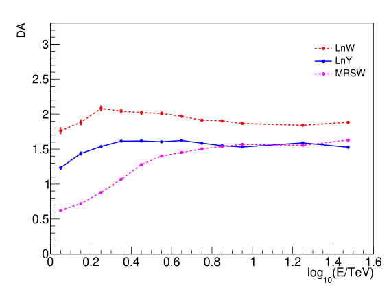
图注：图12：三种阵列变量的鉴别能力随能量的变化。紫色虚线为MRSW，红色虚线为LnW，蓝色实线为LnY。纵轴DA是伽马保留效率约90%时质子存活率的负十进对数。
对应解读：重点比较同一能量下LnW与MRSW的纵轴差，以及LnY在约6 TeV以后接近MRSW的趋势。
入选理由：这张图检验的是融合方式和变量组合，不能把新横向变量视作全部性能提升的来源，也不能把DA的线性差直接读成显著性倍数。
来源与置信度：arXiv HTML；source verified；https://arxiv.org/html/2609.21635v1/DA_comb_Rc500.svg
图15
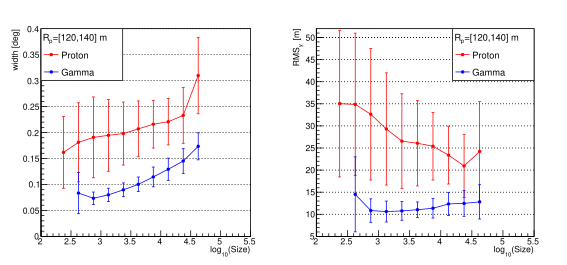
图注：图15：在冲击距离120至140米内，传统width（左）和RMS_y（右）随图像size的变化。点表示样本均值，误差棒表示样本RMS；红色为质子，蓝色为伽马。
对应解读：对比两种变量随size的漂移及两类样本宽度，解释条件化前后排名改变的原因。
入选理由：误差棒不是均值误差；更窄的误差棒代表单事例分布较集中，而非仅说明模拟事件数更多。它与图12共同区分几何标度修正和真实分类信息。
来源与置信度：arXiv HTML；source verified；https://arxiv.org/html/2609.21635v1/var_size.svg
强相关工作
原文以Hillas（1985）的相机形态参数和Aharonian等（2006）的MRSW方法为基线，并引用Cowan（1998）的似然比理论。DAMPE相关工作提供了横向展宽与纵向泄漏的设计动机，但探测介质和测量空间不同，不能直接搬用性能。对本项目最有用的联系是：先复现条件化的像宽似然，再检验发射位置代理量与时间变量是否补充独立信息；这是一条可验证的实现路线，不是已经得到的LACT结果。
同一事件 / 同类源线索：
相似工作：
（未提供）
基础理论 / 方法工作：
相反观点 / 张力线索：
（未提供）
2. Energy Partition in Relativistic Electron-Positron-Ion Reconnection
- 来源：arXiv / astro-ph.HE
- 链接：https://arxiv.org/abs/2609.21118v1
- 作者：Nilay Mancini, Luca Comisso, Lorenzo Sironi
- 评分：novelty 9/10，importance 9/10，relevance 9/10，final 10.00/10
- 推荐理由：电子对离子重联能量分配直接影响强子和中微子预算
中文题目：重联不会自动把一半能量给质子：电子对—离子混合等离子体的能量预算
做了什么：解析轨道模型结合二维、三维PIC模拟表明，电子对占优时离子的总能量份额可远低于一半。单个离子仍可能比单个轻子更有能量，但离子数少，不能据此推断强子辐射预算很大。
为什么重要：它纠正了把纯电子离子等离子体的近似能量均分直接外推到富电子对喷流的习惯，对重联驱动的宇宙线和中微子模型有直接影响。
理论 / 观测 / 仪器方法价值：论文提供从粒子轨道、逃逸尺度到能量分配的闭合链条，并明确二维与三维的归一化不同，便于构建有条件的强子注入模型。
为什么应该关注：在估算AGN冕或喷流的中微子产额时，应先约束粒子组成和离子能量份额，再讨论碰撞效率；不要把磁耗散功率默认等分给电子与质子。
展开详细解读：文章讲解、背景、理论、重点章节、图表与相关工作
文章详细讲解
科学问题
科学问题不是重联能否加速粒子，而是耗散能如何在电子、正电子和少量离子间分配。若始终令离子总能量约为磁能的一半，离子密度趋零时单个离子能量会发散；这与趋近纯电子对层的动力学极限矛盾。
作者怎么做
作者用Tristan开展冷上游、零导引场、反平行且无辐射冷却的PIC模拟。主二维样本取总磁化40和80、质量比25、100、400，离子比例从万分之一到1；另以不反馈电流的试验离子覆盖真实质子电子质量比1836，并进行三维验证。
关键结果
粒子在电场主导区直接获得能量，直到重联磁场将其偏折出该区域。非相对论逃逸标度给出离子平均能量随质量的三分之一次方增长，而极相对论逃逸趋于各粒子平均能量相等。结合电子对与离子数密度后，离子总能量份额随离子丰度趋零。
局限和下一步
标度不是无参数普适定律：轻子归一化拟合为0.37，非相对论分支的二维系数11、三维系数4。导引场和强辐射冷却可能改变轨道及层厚，不能把本结果无条件用于所有真实喷流；“逃逸非相对论”描述局部加速阶段，不代表下游离子最终一定低能。
关键结果是怎么做出来的
先定义组成。 q是离子数与电子数之比，电中性使正电子数随q变化；静质量比χ还包含离子质量，因此相同χ不意味着相同粒子数或相同能量分配。
再读模拟测量。 只统计由上下游混合标记确定的重联下游，排除初始电流片粒子，并在统计稳态平均。图1显示小χ时离子份额下降，固定χ还随磁化和质量比系统变化。
接上闭合尺度。 图3同时比较轻子能量和电场主导区长度。同一个轻子能量拟合系数能够描述区段长度，说明集体等离子体响应与单粒子轨道之间存在一致联系。
最后换算辐射预算。 图4支持两种逃逸极限，但三维归一化不同。先由组成计算离子能量份额，再乘以强子碰撞或光致介子效率，才可能得到中微子能量，本文本身没有给出某个天体的中微子探测预言。
展开背景、理论、公式、模型、章节和图表导读
背景知识
为什么要区分粒子数和质量。 少数质子可以主导静质量，却未必拥有一半耗散能；电子对数量极多时，轻子合计能量仍可占主导。这是从组成到辐射模型时最容易遗漏的一步。
磁重联加速。 反向磁场在电流片附近转换磁能，电场对粒子做功，而重联磁场改变其运动方向。粒子在有效加速区停留多久，决定了初始能量增益，而不只是磁能总量。
PIC的含义。 粒子轨迹和电磁场共同演化，能捕捉流体模型不解析的惯性尺度。试验离子不向场反馈，因此专门检验离子稀少极限，不能代替高离子丰度下完整自洽计算。
均分的两种概念。 离子与所有轻子的总动能相等，对应离子份额二分之一；每个粒子平均能量相等，则份额由粒子数决定。只有纯电子离子且数目相等的极限，两者才重合。
基础理论 / 方法脉络
轨道动力学。 取均匀电场Ez与较弱横向磁场By，电场先推动纵向动量，磁场再把粒子导向出流。重离子偏转较慢，非相对论阶段具有较长停留时间，产生不同质量标度。
集体闭合。 有效逃逸长度近似由加热后混合等离子体的相对论惯性长度决定。离子贡献在富电子对极限可忽略，在离子丰富时必须加入，否则层厚和平均能量不能自洽。
两条渐近分支。 轻子始终很快进入相对论区，能量随每粒子可用磁能近似线性增加；重离子若较晚相对论化，则出现三分之二次幂分支，质量依赖过渡是平滑的。
后续加速假设。 模型假定磁岛或通量绳中的后续加速大致按比例放大不同组分能量，保留早期能量比。原文用跟踪粒子历史支持这一点，但不宣称电场主导区提供了全部最终能量。
公式与推导
以下定义和闭合来自正文式(2)–(4)，轨道解释对应附录A；不要把拟合系数视作基本常数。
由电中性得到组成关系：
离子对轻子的静质量密度比为：
因此质量比与数目比不能互换。
以总粒子数定义可用磁能：
这里ε以电子静能为单位，模拟给出轻子能标系数约0.37。
非相对论逃逸分支写为：
因而平均离子能量有限，并有ε_i正比于质量比的三分之一次方与磁能标的三分之二次方。二维A约11，三维约4；跨维度直接使用同一常数会改变预算。
能量份额必须乘上数目：
当q趋零时，r趋零，而单离子能量比保持有限，所以f_i也趋零，消除了固定总能量均分导致的发散。
在极相对论逃逸极限，各粒子能量相等：
只有q等于1才得到二分之一。加速区逃逸状态和最终下游能量不同，不能用一个简单磁化阈值把真实天体绝对划分为两类。
模型拟合 / 应用方法
参数扫描。 在固定总磁化下改变组成，轻子磁化随惯性组成变化。比较模拟时要说明固定的是总磁化还是轻子磁化，否则横向对照会把不同物理控制量混在一起。
能量测量。 用相同下游选择和稳态时间窗统计各组分总动能、平均单粒子能量及区段长度。原文还检查分辨率、每格粒子数和计算域大小，减少数值设置对标度的影响。
系数校准。 先由轻子能量确定α，再用离子轻子能量比拟合A，之后预测能量份额而不为图1另增参数。这种分步骤闭合比直接对最终份额任意拟合更有诊断力。
适用范围。 对源模型应将组成、导引场和冷却作为独立不确定性。可先用本文无冷却结果作基线，再对强冷却情景单独计算，不能把未模拟的效应包装成已经验证的通用修正。
重点章节 / 结果段落怎么读
正文Numerical setup给出冷上游、反平行场、质量比和磁化扫描；Simulation results与图1定义总离子能量份额。Analytical model及式(1)–(4)从轨道逃逸到集体惯性长度形成闭合。图3核验同一系数能否解释两种测量，图4比较二维与三维并检查真实质量比极限。Discussion明确指出导引场、辐射冷却仍是扩展方向，附录A给出轨道两渐近分支及平滑过渡。
建议重点查看的图表
图1： 先区分横轴静质量比与离子数比例，再观察低丰度时fi如何下降及高磁化点偏离渐近预测。 单个离子比轻子更有能量，并不等于离子总功率占优；这张图是中微子功率预算最直接的约束，但尚未包括辐射冷却。
图4： 比较两种维度的斜率一致性和归一化差异，尤其注意接近水平线时不能再外推低参数分支。 灰带并不是所有组成和维度共用的精确临界点；作者指出试验离子的偏离位置有差别，因此真实源推断应保留模型范围。
关键图表逐图导读
图1： 先区分横轴静质量比与离子数比例，再观察低丰度时fi如何下降及高磁化点偏离渐近预测。 单个离子比轻子更有能量，并不等于离子总功率占优；这张图是中微子功率预算最直接的约束，但尚未包括辐射冷却。
图4： 比较两种维度的斜率一致性和归一化差异，尤其注意接近水平线时不能再外推低参数分支。 灰带并不是所有组成和维度共用的精确临界点；作者指出试验离子的偏离位置有差别，因此真实源推断应保留模型范围。
论文原图 / 可嵌入图片
图1
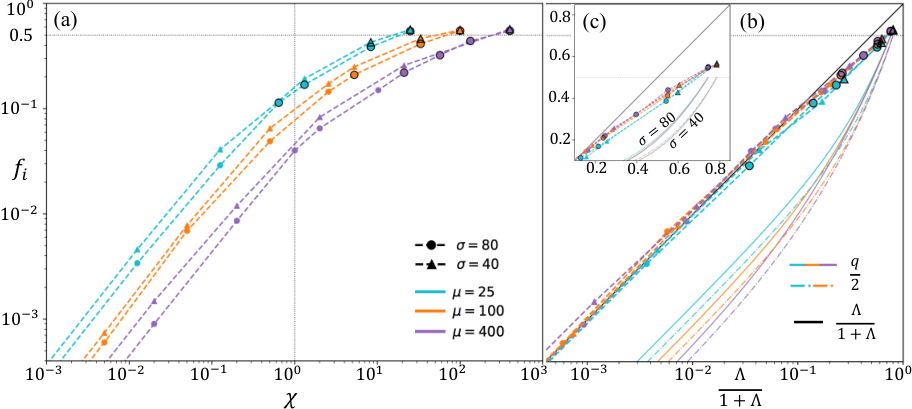
图注：图1：（a）离子总动能份额fi随离子／轻子静质量密度比χ变化，覆盖质量比25、100、400和总磁化40、80；黑边点位于σe*/μ大于4。（b）模拟fi与非相对论逃逸预测Λ/(1+Λ)比较，黑实线为相等关系；彩线表示每粒子能量相等时的q/2。（c）在线性坐标放大fi接近二分之一的区域。
对应解读：先区分横轴静质量比与离子数比例，再观察低丰度时fi如何下降及高磁化点偏离渐近预测。
入选理由：单个离子比轻子更有能量，并不等于离子总功率占优；这张图是中微子功率预算最直接的约束，但尚未包括辐射冷却。
来源与置信度：arXiv HTML；source verified；https://arxiv.org/html/2609.21118v1/fig1.2.png
图4
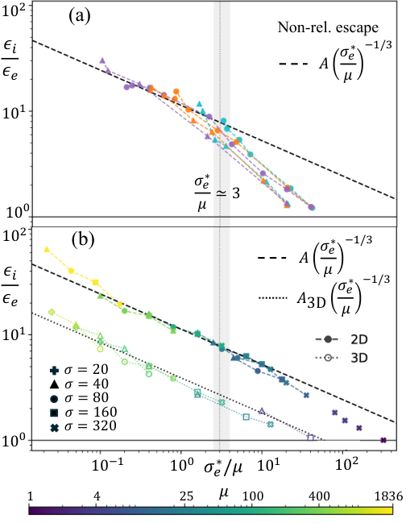
图注：图4：离子与轻子平均单粒子动能之比随σe*/μ变化。（a）二维自洽离子模拟；（b）二维试验离子为实心点与虚线连接，三维为开放点与点线连接。颜色表示质量比，符号表示磁化；黑线分别给出二维A=11、三维A=4的负三分之一次幂标度，灰带为二维自洽样本的经验过渡区2.5至4，水平线表示能量比为1。
对应解读：比较两种维度的斜率一致性和归一化差异，尤其注意接近水平线时不能再外推低参数分支。
入选理由：灰带并不是所有组成和维度共用的精确临界点；作者指出试验离子的偏离位置有差别，因此真实源推断应保留模型范围。
来源与置信度：arXiv HTML；source verified；https://arxiv.org/html/2609.21118v1/fig11.png
强相关工作
本工作延续电流片单粒子轨道与PIC重联研究，重点是把轨道停留时间和混合等离子体的集体响应相连。它并未否定纯电子离子强磁化极限的近似均分，而是限制这种结论对富电子对组成的外推。与今日微类星体中微子模拟联读时，应分别审查“给了质子多少能量”和“质子转成中微子的效率”，前者受本文约束，后者依赖靶光子、磁场、输运和冷却。
质量比与三维性必须在跨研究比较时统一。
同一事件 / 同类源线索：
相似工作：
（未提供）
基础理论 / 方法工作：
相反观点 / 张力线索：
（未提供）
3. Systematic Uncertainties and Their Impact on Gamma-Ray Searches for Dark Matter in Dwarf Galaxies
- 来源：arXiv / astro-ph.HE
- 链接：https://arxiv.org/abs/2609.20944v1
- 作者：Toni Bertólez-Martínez, Dan Hooper, Arifa Khatee Zathul
- 评分：novelty 9/10，importance 9/10，relevance 10/10，final 10.00/10
- 推荐理由：矮星系J因子系统误差及覆盖率直接影响伽马暗物质上限可信度
中文题目：矮星系暗物质上限有多可信：J因子、空间模板与覆盖率的联合检验
做了什么：作者模拟27个矮星系的Fermi-LAT观测，发现低估J因子误差或把延展源当点源，会让湮灭截面上限偏强。更关键的是，标称95%上限不一定具有95%覆盖率，加宽误差项也未必完全修复。
为什么重要：这项研究把天体物理不确定性与统计区间校准联系起来。一个看似很强的排除曲线，只有在注入检验中正确覆盖真实信号，才有相应的排除含义。
理论 / 观测 / 仪器方法价值：提供可复用的三步检验：改变真实J因子散布、改变拟合采用的误差宽度、改变空间模板，并分别检查无信号灵敏度与有信号覆盖率。
为什么应该关注：无论做Fermi还是IACT暗物质搜索，都应把J因子和延展模板放进联合似然，并用模拟注入检验覆盖率；本文具体倍数不能直接用于LACT能区。
展开详细解读：文章讲解、背景、理论、重点章节、图表与相关工作
文章详细讲解
科学问题
矮星系本身的常规伽马背景较低，是间接暗物质搜索的理想目标，但预期信号强度依赖恒星动力学推断的密度平方积分J。问题是：当J的估计中心、误差或空间形状不可靠时，多目标叠加是否会把误差放大成过强排除？
作者怎么做
作者整理成员星污染、未分辨双星、球对称与平衡假设、密度模型及非高斯J似然等误差来源。然后模拟27个矮星系17.4年Fermi观测，能区500 MeV至1 TeV，使用四类PSF事件和银河／各向同性弥散背景；注入42 GeV暗物质到b反b末态的信号，逐项改变J及形态。
关键结果
在无信号模拟中，给J的对数误差额外平方和加入0.5或1.0，叠加上限中位数分别放宽约1.44和3.23倍。注入截面1.4×10^-26立方厘米每秒后，即使基线误差设置一致，标称95%上限也在约21%的叠加实现中排除了真值；额外散布未建模时可更严重。
局限和下一步
这些是特定简化模拟的覆盖率，不是所有已发表Fermi上限都错误21%的结论。模拟为简洁未加入4FGL点源，采用固定质量和末态、指定晕形及取向。作者建议利用模拟或空白场校准，而不是只使用渐近阈值；结果不等于发现暗物质，也不证明银河中心超额必为暗物质。
关键结果是怎么做出来的
第一步：分开真值与测量值。 J_true决定注入光子，J_obs是动力学测量中心；真实测量散布σ与拟合J约束项宽度σ_L分别控制，才能检验“误差条过窄”的后果。
第二步：先做无信号集合。 每次重新抽取泊松背景，计算95%上限，比较上限分布而非单条曲线。加宽J约束会削弱中位灵敏度，但这还不能回答真实信号会不会被错误排除。
第三步：注入已知信号。 单个小熊座矮星系与27源联合分析表现不同。叠加会受到少数向上波动J值的强权重影响，因此样本更多并不自动保证误差校准更好。
第四步：改变空间假设。 延展或有核晕注入后用尖峰、球形或点源模板拟合，分别观察上限和TS。空间残差会被背景吸收，错误模板可以给出更强上限，而不是更准确的物理排除。
展开背景、理论、公式、模型、章节和图表导读
背景知识
为什么选择矮星系。 它们暗物质占比高、气体与近期恒星形成少，常规伽马辐射弱。其优势是信号解释相对干净，而不是暗物质密度已经直接测量且没有模型不确定性。
J来自恒星运动。 观测成员星视向速度后，结合恒星空间分布、轨道各向异性和引力势求解Jeans模型，再积分暗物质密度平方。成员数少时，少数双星或误认成员会显著改变结果。
上限是重复实验性质。 95%置信上限要求按构造规则重复实验时大约95%的区间包含真值，并不表示给定一次观测后的真值有95%概率在区间内；贝叶斯可信区间另有定义。
叠加不等于相加图像。 各源共用湮灭截面，但保留不同J和背景参数。强源在联合似然中权重大，J的对数正态上尾因此可能主导结果，不能指望所有系统误差像独立光子噪声一样平均掉。
基础理论 / 方法脉络
信号结构。 粒子物理谱与天体密度积分相乘，因此截面和J存在幅度退化。单一伽马源的光子数一般不能独立确定二者，需要恒星动力学提供外部约束。
空间卷积。 晕的角分布需与能量依赖PSF和曝光卷积。把源压成点会改变信号与弥散背景的分配，即使总J相同，也不保证估计到相同的截面。
误差宽度。 作者用log10 J空间的高斯约束项模拟动力学信息；额外误差以平方和加入。0.5 dex意味着乘法尺度约3.16，不是J线性空间的50%误差。
阈值校准。 ΔTS=2.71是常用的一侧95%渐近阈值，但非负边界、退化、低信号与多干扰参数会影响其实际分布。这里需要具体注入检验，不能仅凭威尔克斯定理名称保证覆盖率。
公式与推导
下面前四个关系对应原文的信号与似然定义，最后两个是用于读懂误差和覆盖率的教学整理。
湮灭信号的天体因子为：
自共轭暗物质的常用通量写法是：
这里J有GeV平方每厘米五次方的单位，单次湮灭谱与到达地球通量不能混写。
把通量经响应变成各空间／能量箱的预期计数后，使用：
背景归一化和J属于干扰参数，需和信号一起剖面化或边缘化。
联合结构为：
截面共用，J与背景各源独立；共享的动力学建模偏差仍需另外处理，不能从形式上的乘积断言没有系统相关性。
教学上将额外散布记为s，则：
论文分别改变真实生成散布和拟合宽度。二者相等只表示模拟误差规模匹配，不保证整个上限构造已经校准。
直接检查重复注入所得覆盖率：
理想标称95%意味着C接近0.95。论文基线叠加约21%错误排除，对应约79%覆盖；这和无信号上限中位数是两个不同指标。文中具体比例依赖其模拟与参数设置，应避免普遍化。
模型拟合 / 应用方法
生成层。 固定真实晕和截面，抽取光子泊松实现，并按设定对数散布生成J_obs。这样模拟了伽马计数误差与动力学测量误差两条独立通道，能够定位偏差来源。
拟合层。 每源构建分能量似然，背景归一化自由，再乘J约束；对共享截面扫描联合似然。不同模板需保持所用总J或0.5度孔径J的定义一致，避免额外引入归一化差别。
评价层。 无信号时比较上限中位数和分布宽度；有信号时记录真截面被排除的频率。不能通过把上限整体放宽一个常数，假定所有质量和目标组合都恢复正确覆盖。
实际分析。 应补入真实点源场、仪器响应不确定性及更灵活J似然，按目标组合做空白场或注入标定。对IACT还要加入ON/OFF背景和接受度结构，重新评估低计数行为。
重点章节 / 结果段落怎么读
第II节及图1列出J因子来源与跨文献散布；第III节给出27源样本、500 MeV至1 TeV和17.4年模拟设置，并定义真实J、观测J和两种误差宽度。第IV节用小熊座展示单源情况，第V节图5–7转向联合似然和覆盖率，是本文关键。第VI节明确推荐模拟或空白场校准；注意本文聚焦42 GeV、b反b末态且模拟省略目录点源，不应推广成所有仪器、能区和质量的统一修正系数。
建议重点查看的图表
图6： 比较真值所在位置与上限分布落在真值以下的比例；再看右图即使误差匹配仍未完全恢复标称覆盖。 它展示的是重复模拟的错误排除频率，不是一次观测的后验概率。必须与无信号图5分开读，才能区分灵敏度降低和覆盖率改善。
图7： 重点看错误空间模型如何增加真信号被排除的比例，同时留意点源分析采用的孔径J与延展模板总J不同。 图中变化包含空间模板和外部幅度约束两部分；不能仅凭上限更低就宣称点源近似更有效，也不能把单一模拟结果直接当作真实数据偏差。
关键图表逐图导读
图6： 比较真值所在位置与上限分布落在真值以下的比例；再看右图即使误差匹配仍未完全恢复标称覆盖。 它展示的是重复模拟的错误排除频率，不是一次观测的后验概率。必须与无信号图5分开读，才能区分灵敏度降低和覆盖率改善。
图7： 重点看错误空间模型如何增加真信号被排除的比例，同时留意点源分析采用的孔径J与延展模板总J不同。 图中变化包含空间模板和外部幅度约束两部分；不能仅凭上限更低就宣称点源近似更有效，也不能把单一模拟结果直接当作真实数据偏差。
论文原图 / 可嵌入图片
图6
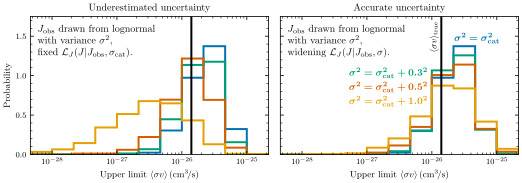
图注：图6：对27个矮星系联合模拟注入类似银河中心超额的暗物质信号后，所得95%截面上限的分布。左图增大J观测中心的真实散布，但拟合仍使用较窄目录误差；右图同时加宽拟合J约束，使其匹配真实散布。不同颜色对应逐步增加的误差设置。
对应解读：比较真值所在位置与上限分布落在真值以下的比例；再看右图即使误差匹配仍未完全恢复标称覆盖。
入选理由：它展示的是重复模拟的错误排除频率，不是一次观测的后验概率。必须与无信号图5分开读，才能区分灵敏度降低和覆盖率改善。
来源与置信度：arXiv HTML；source verified；https://arxiv.org/html/2609.20944v1/true_signal_meas_error.svg
图7
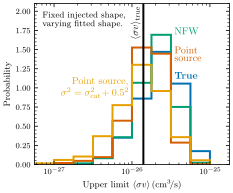
图注：图7：27个矮星系注入同一截面1.4×10^-26 cm³/s后的上限分布。经典矮星系用有核NFW注入、超暗弱源用NFW注入。蓝色用各源真实模板拟合，绿色全用NFW，红色全用点源；黄色还将真实J对数方差额外增加0.5²，而拟合保持目录误差。
对应解读：重点看错误空间模型如何增加真信号被排除的比例，同时留意点源分析采用的孔径J与延展模板总J不同。
入选理由：图中变化包含空间模板和外部幅度约束两部分；不能仅凭上限更低就宣称点源近似更有效，也不能把单一模拟结果直接当作真实数据偏差。
来源与置信度：arXiv HTML；source verified；https://arxiv.org/html/2609.20944v1/true_signal_stacked_shape.svg
强相关工作
文章以Jeans动力学J因子研究及Fermi多矮星系联合似然为基础，比较既有目录误差与不同形态模型，并指出一些近期分析已采用空白场校准。因此它提出的是需要逐一检查的推断条件，而非推翻全部既有结果。对高能分析的一般启示是：模型更窄、上限更低未必代表信息更多；必须独立验证信号模板、外部约束和统计覆盖三件事。银河中心超额的暗物质与脉冲星解释仍需其他证据区分。
同一事件 / 同类源线索：
相似工作：
（未提供）
基础理论 / 方法工作：
相反观点 / 张力线索：
（未提供）
4. Beyond Disk Truncation: X-ray Reverberation Signatures of an Outflowing Corona
- 来源：arXiv / astro-ph.HE
- 链接：https://arxiv.org/abs/2609.21732v1
- 作者：Ke Qin, Bei You, Adam Ingram, Barbara De Marco
- 评分：novelty 8/10，importance 8/10，relevance 9/10，final 9.35/10
- 推荐理由：谱与时延共同区分外流冕和盘截断，适合学习参数退化处理
中文题目：反射减弱不一定是盘后退：用X射线回响区分外流冕与截断盘
做了什么：蒙特卡罗辐射转移显示，外流冕的束射和吸积盘后退都能减弱反射，但其时延随频率的变化不同。对MAXI J1820+070的平台期，冕收缩且外流加速可以定性解释反射下降与过零频率升高。
为什么重要：论文展示如何用时间信息打破光谱参数退化，也提醒时延振幅减小未必代表发光区变小，可能只是反射成分被连续谱稀释。
理论 / 观测 / 仪器方法价值：可借鉴的是同时比较反射比例、光子指数和时延谱，而不是只用某一个几何代理量反演半径；它明确列出了快外流下该代理失效的条件。
为什么应该关注：对能谱与时域联合研究，尤其需要区分路径长度改变与能段混合权重改变。本例还示范为何不同仪器能段得到的时延不能不加修正直接拟合。
展开详细解读：文章讲解、背景、理论、重点章节、图表与相关工作
文章详细讲解
科学问题
黑洞双星硬态的反射变弱，可以由内盘远离冕造成，也可以由向外运动的冕把光子束射离开盘面造成。只看反射与谱指数关系，两者可能近乎等价；作者问的是时延谱能否提供不同的变化方向。
作者怎么做
模型由截断薄盘和均匀椭球冕组成，盘产生种子光子，冕内蒙特卡罗康普顿散射加入沿垂直方向的体运动。盘反射使用XILLVER表，时间变化来自20个径向区间的向内传播吸积率涨落，再计算软硬能段的互谱。
关键结果
在固定几何且β不大于约0.5时，提高外流速度显著减弱反射，而过零频率变化较小；增大盘截断半径则明显降低过零频率。对MAXI J1820+070的平台期，盘单纯后退给出与观测相反的频率趋势，收缩加速的冕则能解释方向。
局限和下一步
这是定性情景检验而非唯一几何测量。光传播按牛顿框架处理，温度和光深是调节谱形的有效参数，运动介质光深的方向修正未显式加入；模拟软能段0.1至0.3 keV也不同于观测0.5至1.0 keV，不能用图10直接读出精确冕尺寸。
关键结果是怎么做出来的
先看光谱退化。 同样的反射减少可以来自盘接收到的光变少，也可以来自观察者方向连续谱被增强。原文分别定义总光度反射比和倾角相关反射幅度，二者并不完全相同。
再固定几何扫描速度。 图5在较慢外流时保留相近的过零频率，快外流时软回响被稀释，β达到0.9的例子才出现明显频率下降；这时不能把下降解释为路径变长。
然后固定静态冕扫描内盘。 图6与图9显示盘向外截断使相关光路尺度增大，频率向低端移动。反射更弱同时也会稀释振幅，因此振幅和频率必须一起解释。
最后与平台期比较。 观测反射比例降低而过零频率升高，作者用冕尺度减小、β增加的示例轨迹说明一致性。上升期和明亮衰减期仍有退化，并未被同一结论唯一解释。
展开背景、理论、公式、模型、章节和图表导读
背景知识
连续谱与反射。 盘的较软热光子在热电子冕中逆康普顿散射形成硬X射线，其中一部分照亮盘面后再被吸收、荧光或散射，形成反射谱；两条路径自然带来不同时间响应。
硬时延与软时延。 低频硬时延主要对应较慢的向内传播涨落；高频软时延常由反射回响贡献。实际能段中两类成分同时存在，因此测得时延不是单一光子额外路程除以光速。
几何代理的边界。 时延相位随频率缠绕，过零位置可提供尺度信息，但也依赖能段权重、连续谱自身时延和响应函数形状。只有控制这些因素后，才可把变化主要归于空间尺度。
外流束射。 有体速度的散射电子改变逃逸方向分布，沿外流方向看会得到更强连续谱，盘接收到的照明则减少。这种角度效应能模拟盘的覆盖立体角减少。
基础理论 / 方法脉络
转移过程。 光子先变换到冕共动系，与热电子散射，再变换回黑洞参考系，记录方向、能量和时间。特殊相对论的束射被保留，但强引力弯曲在本模型中忽略。
传播涨落。 外层种子光子变化延迟传到内层，并以乘法形式耦合局部涨落。模型没有额外加入冕内自行产生的涨落，因此解释范围依赖所选驱动过程。
频域响应。 互谱相位转成时延需要除以角频率，混合反射与连续谱后相位是复数和的相角，不是两条时延的简单算术平均。这正是稀释效应的重要来源。
温度退化。 固定温度时增加速度会改变有效散射次数，谱可能过软。作者因此调节温度匹配合理谱指数，尚未计算自洽加热冷却平衡；不能把这组调节当作已证明的动力学演化律。
公式与推导
以下给出从几何尺度到可观测时延的关系；最后的两成分表达是教学示意，并非论文另一次数据拟合。
以重力半径统一空间单位：
单一路径长度L对应的光行时是L/c，但观测时延还取决于成分混合。
原文的局部涨落功率及黏滞频率满足：
这使外层较慢、内层较快，提供低频传播结构。
各半径的涨落按传播时间耦合：
这里乘法形式与独立加法噪声不同，决定了最终种子光子的变化权重。
软硬光变的傅里叶变换构成互谱，采用与原文一致的符号约定后：
正负号随互谱顺序改变，因此比较软件或论文时先统一约定；过零频率可比较，但其物理解读仍依赖成分。
教学上把软带写为：
其中a代表直接连续谱权重，b代表反射权重，Ψ是盘响应。即使Ψ保持不变，外流使b减小也会改变互谱相角，故振幅下降不必由几何收缩造成。
最后区分反射定义：
观察倾角i改变束射后的分母，两个比值不能当作完全相同的拟合参数。快外流下过零频率也受稀释影响，因此不能普遍使用“半径等于光速除以频率”的单参数反演。
模型拟合 / 应用方法
计算输入。 设定盘截断半径、冕长短轴、倾角、温度、有效光深及速度。分别改变速度或截断半径，其他条件尽量匹配，以比较哪些时间观测量能打破光谱退化。
光谱输出。 统计逃逸和照盘光子的方向及能谱，以XILLVER计算反射并考虑穿过冕的透射。反射归一化必须与入射谱匹配，不能仅把反射表幅度任意缩放再解释为物理比例。
时序输出。 模拟200秒、1毫秒时间步长的光变，分成1秒片段平均互谱，并按原文方式重分箱。频率分辨率、段长和能段都影响能识别的过零位置。
数据比较。 原文采用HXMT谱参数和已有NICER相关时延结果，示例轨迹只要求趋势一致。严格推断应统一能段、通过真实响应折叠，并联立谱、互谱和未来偏振数据求参数区间。
重点章节 / 结果段落怎么读
第II节依次定义椭球几何、种子涨落、体运动散射与反射计算，II.3明确承认方向相关光深修正未显式实现。第III节图3–6展示速度和截断半径的不同作用。IV.1讨论温度调节，IV.3说明快外流时过零频率失去直接几何含义。IV.4及图8–10用于MAXI J1820+070的定性趋势比较，并明确模拟与观测软能段不同。IV.5仅讨论未来偏振计算，没有报告本模型已经完成偏振拟合。
建议重点查看的图表
图5： 先比较β不超过约0.5时过零位置的稳定性，再看快外流时软时延与反射贡献同时减弱。 几何没有变化，所以快外流导致的时延改变不能全部换算成半径变化。图中的能段是模拟选择，和后文观测采用的软能段不同。
图9： 把本图与反射比例—谱指数退化联系起来，观察两种机制在第二个观测平面是否分离。 它提供模型可区分性的方向，而不是某次观测已经唯一选出一个半径；温度调节、能段混合和快外流仍会改变映射。
关键图表逐图导读
图5： 先比较β不超过约0.5时过零位置的稳定性，再看快外流时软时延与反射贡献同时减弱。 几何没有变化，所以快外流导致的时延改变不能全部换算成半径变化。图中的能段是模拟选择，和后文观测采用的软能段不同。
图9： 把本图与反射比例—谱指数退化联系起来，观察两种机制在第二个观测平面是否分离。 它提供模型可区分性的方向，而不是某次观测已经唯一选出一个半径；温度调节、能段混合和快外流仍会改变映射。
论文原图 / 可嵌入图片
图5
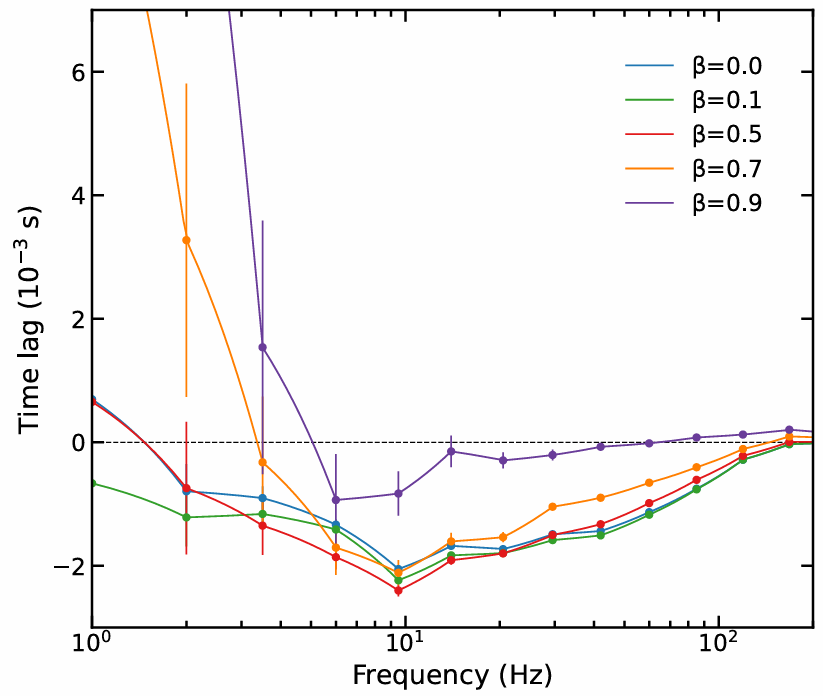
图注：图5：不同冕外流速度β下的时延—频率谱，比较0.1–0.3 keV软能段和2.0–5.0 keV硬能段。盘—冕几何固定；颜色代表不同β。
对应解读：先比较β不超过约0.5时过零位置的稳定性，再看快外流时软时延与反射贡献同时减弱。
入选理由：几何没有变化，所以快外流导致的时延改变不能全部换算成半径变化。图中的能段是模拟选择，和后文观测采用的软能段不同。
来源与置信度：arXiv HTML；source verified；https://arxiv.org/html/2609.21732v1/lag.png
图9
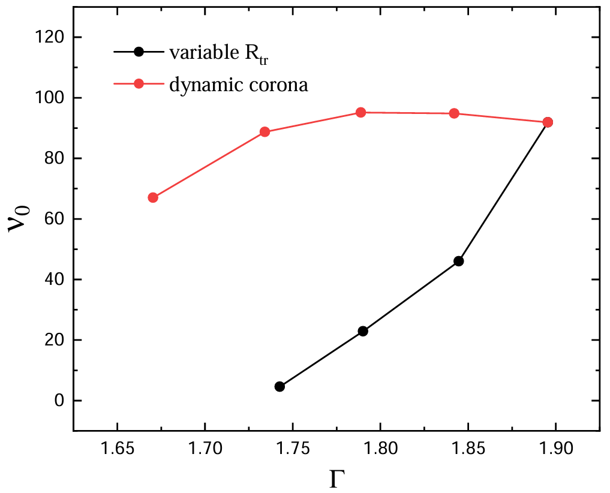
图注：图9：动态冕情景（红线）与盘截断情景（黑线）的过零频率ν0和光子指数Γ关系。速度与截断半径设置与图8一致；盘截断半径增大时ν0明显下降，而固定几何下较慢外流速度变化的影响较弱。
对应解读：把本图与反射比例—谱指数退化联系起来，观察两种机制在第二个观测平面是否分离。
入选理由：它提供模型可区分性的方向，而不是某次观测已经唯一选出一个半径；温度调节、能段混合和快外流仍会改变映射。
来源与置信度：arXiv HTML；source verified；https://arxiv.org/html/2609.21732v1/v0gamma1.png
强相关工作
这项工作连接传播涨落模型、康普顿辐射转移与X射线回响研究，采用现有XILLVER反射表和STINGRAY时序工具。它与今日NGC 5506的IXPE研究互补：前者用时间响应区分几何与体运动，后者用偏振限制几何和倾角。两篇对象的黑洞质量尺度和观测能段不同，不能直接共用数值参数，但可以共同学习如何以独立观测量打破单一光谱的退化。
同一事件 / 同类源线索：
相似工作：
（未提供）
基础理论 / 方法工作：
相反观点 / 张力线索：
（未提供）
5. The Auger Radio Infill SKALA Extension (ARISE): First Air-Shower Measurements
- 来源：arXiv / astro-ph.HE
- 链接：https://arxiv.org/abs/2609.21105v1
- 作者：Carmen Merx for the Pierre Auger Collaboration
- 评分：novelty 8/10，importance 8/10，relevance 9/10，final 9.35/10
- 推荐理由：ARISE实测空气簇射，关联阵列触发和多探测技术交叉验证
中文题目：ARISE首次空气簇射观测：18副天线如何与Auger地面阵列交叉确认
做了什么：ARISE在Auger以18副SKALA天线测量簇射射电脉冲，首批分析得到181个与SD-433时间及方向一致的事例。结果证明了探测链可工作，独立射电能量重建与效率测量仍待完成。
为什么重要：这是一项以真实事例核验新探测器的工作。外部触发、天线响应反卷积和独立方向比较共同形成证据链，比单纯展示漂亮波形更有说服力。
理论 / 观测 / 仪器方法价值：可学习的是先建立跨探测器时间与方向符合，再逐步完善联合标定；同时必须把“发现匹配事例”和“测得完整效率、能量分辨率”区分开。
为什么应该关注：对LACT或多探测器联合研究，时间标定、共用参考方向带来的选择偏差及独立重建验证都很直接相关；射电频段的噪声选择也展示了触发和离线分析应分开优化。
展开详细解读：文章讲解、背景、理论、重点章节、图表与相关工作
文章详细讲解
科学问题
ARISE面向约100 PeV及以上的近垂直宇宙线簇射，问题是新天线阵列能否在真实环境噪声中辨认出与地面粒子探测器相同的空气簇射。这里首先验证信号关联，而非已经完成宇宙线能谱或成分测量。
作者怎么做
阵列含6站，每站3副SKALA v2天线，环绕提供触发的SD站部署。硬件覆盖50–350 MHz，本次离线选择噪声较低的110–185 MHz，压制窄带干扰，反卷积天线矢量有效长度，以Hilbert包络峰时间作平面波方向拟合。
关键结果
2025年12月1日至2026年5月9日数据中，在SD重建能量大于100 PeV、芯距小于400米的选择下找到181个匹配事例。要求校正时间偏移后相差小于5微秒且方向夹角小于5度；展示事例分别在当时工作的9副和18副天线中有清晰脉冲。
局限和下一步
站间时间标定仍在改进，统计采用逐站重建，并为每个事例选与SD方向最接近的站，因此夹角分布不能当作无偏独立角分辨率。能量来自SD；第二个示例SD-433给21.3 EeV，但更适合该能区的SD-750/1500给约8 EeV，不能只引用前一个数。
关键结果是怎么做出来的
触发与时标。 中央SD触发六个射电站，并与达到T3条件的SD事例匹配。先限制时间窗能显著减少无关电磁干扰，但仍需修正系统性时钟偏移，才能保证所比脉冲属于同一事例。
电压到电场。 记录电压包含天线频率和方向响应，先反卷积再选两个近似东西、南北偏振通道中的较强峰。未经响应校准的原始幅度不能直接解释成簇射辐射强度。
方向与足迹。 天线位置和脉冲到达时间构成平面波拟合；示例足迹的时间梯度与簇射传播方向一致。跨探测器的时间和方向吻合，加上地磁角依赖，共同支持空气簇射解释。
从演示走向测量。 下一步需校准站间时间后联合所有站重建，再用CORSIKA/CoREAS建立能量与效率响应。181个符合事件本身不能给出阈值附近的绝对探测效率。
展开背景、理论、公式、模型、章节和图表导读
背景知识
簇射射电来源。 带电粒子在地磁场中偏转产生时变横向电流，是主要射电机制；净电荷过量也有贡献。因此方向、偏振和阵列位置会共同影响信号，而非仅由原初能量决定。
稠密阵列的作用。 近垂直簇射的射电足迹较紧凑，天线需要适当密度才能采到多个位置。ARISE作为小规模探路阵列，用既有SD触发降低自触发识别干扰的难度。
波形重建。 探测器记录有限带宽电压，窄带人造信号和银河背景并非相同噪声。选择110–185 MHz是本场址首批分析的折衷，不代表50–350 MHz其余频率没有物理信号。
参考探测器并非真值。 SD方向和能量也有模型误差及适用能区。联合分析应量化双方分辨率和选择，不能把一个探测器的拟合参数无条件称作真实簇射参数。
基础理论 / 方法脉络
天线传递关系。 电压是入射电场与方向、频率相关的矢量有效长度共同作用的结果；反卷积需使用天线模型，低响应频率处不能无限放大噪声，频带和质量选择因而必要。
包络定时。 Hilbert变换构成解析信号，其模给出脉冲包络。论文从两个偏振通道中选择峰更强者确定信号时间，减小弱通道噪声对定时的影响，但仍需标定通道延迟。
平面波近似。 足迹上的到达时间梯度约束方向。真实簇射波前更接近曲面，原文指出即使完美定时，平面波近似也可能带来约一度量级差别，因此不能把全部夹角归为电子学误差。
地磁几何。 信号随簇射轴与地磁场夹角的正弦增强，靠近地磁方向时较弱。样本的方向空缺可与机制一致，但同时受触发阈值和曝光影响，仍需模拟建立定量接受度。
公式与推导
原文是首次仪器观测报告，未给出完整解析推导。以下为解释其处理链的教学关系，不是作者新拟合出的标定公式。
频域天线响应可写为：
矢量有效长度h包含方向及偏振响应，反卷积要在可靠带宽内求电场，不能把标量电压除以一个常数当作全频校准。
对选定偏振的电场波形构造包络：
这里H表示Hilbert变换，峰时定义与最大单个采样电压不同。
若n取波前传播方向，平面波定时模型为：
通过位置与时间同时拟合t0和单位方向；若采用指向天空的到达方向，公式符号相反，应保持坐标约定一致。
两个单位方向的夹角是：
本文选Δψ小于5度，且逐站结果中又选最小夹角者，因此所得分布受事例和站点选择影响，不能直接报告成无条件单站角分辨率。
时间匹配使用：
系统时差与事例内相对到达时间是两类不同校准，前者正确不代表站间定时已经完善。
地磁辐射的基本几何趋势为：
这只是固定其他条件后的标度，不是本文已建立的绝对能量公式；距离、波前、频带、偏振响应与电荷过量分量都仍影响实际幅度。
模型拟合 / 应用方法
数据选择。 首先按可用站、外部触发与时间范围选择数据，再应用SD能量和芯距阈值。必须报告不同阶段运行天线数，否则把调试期和稳定运行期合并会误读效率。
响应处理。 去除DAQ伪影、带通、窄带抑制后反卷积天线响应，分别处理两个偏振。原文展示的是校准后的电场波形，不能据其幅度直接与未经校准的模拟电压比较。
联合核验。 对射电和SD分别重建再匹配；目前按站重建的选择更易获得符合事件，因为跨站时间校准还不足。未来需以固定事前标准联合站点，量化择优匹配对夹角分布的影响。
后续模拟。 用实际事件几何产生CoREAS预测并折叠天线及DAQ响应，再建立能量、天顶角、芯距相关效率。现阶段论文只验证探测能力，尚未完成独立射电能标或宇宙线组分分析。
重点章节 / 结果段落怎么读
第1节定义6站18副天线的布置和调试时间；第2.1节给出T3匹配、110–185 MHz频带及天线响应反卷积，第2.2节给出5微秒和5度条件。第3节明确区分示例的全站重建与统计的逐站方法，并解释21.3 EeV示例在更大SD阵列中约为8 EeV。图注显示图5为方向夹角、图6为能量，正文附近存在交叉引用不一致，阅读时应以图注内容核对。第4节列出时间标定、CoREAS及效率分析的后续工作。
建议重点查看的图表
图4： 沿箭头比较颜色时间梯度，确认脉冲扫过阵列的先后与几何方向一致，再比较不同偏振臂长。 它验证同一簇射的空间—时间一致性，臂长没有自动成为能量标尺；两个例子的运行站数和几何不同，不宜用肉眼直接比较探测效率。
图5： 峰约在1.5至2度附近，说明两类信号方向一致，但读取峰宽前要记住最小夹角选择和截断条件。 这不是独立无偏的射电角分辨率测量。站间标定尚在完善，平面波而非双曲波前近似也可能贡献约一度差异，需后续模拟与联合重建分解。
关键图表逐图导读
图4： 沿箭头比较颜色时间梯度，确认脉冲扫过阵列的先后与几何方向一致，再比较不同偏振臂长。 它验证同一簇射的空间—时间一致性，臂长没有自动成为能量标尺；两个例子的运行站数和几何不同，不宜用肉眼直接比较探测效率。
图5： 峰约在1.5至2度附近，说明两类信号方向一致，但读取峰宽前要记住最小夹角选择和截断条件。 这不是独立无偏的射电角分辨率测量。站间标定尚在完善，平面波而非双曲波前近似也可能贡献约一度差异，需后续模拟与联合重建分解。
论文原图 / 可嵌入图片
图4（原图第1面板）
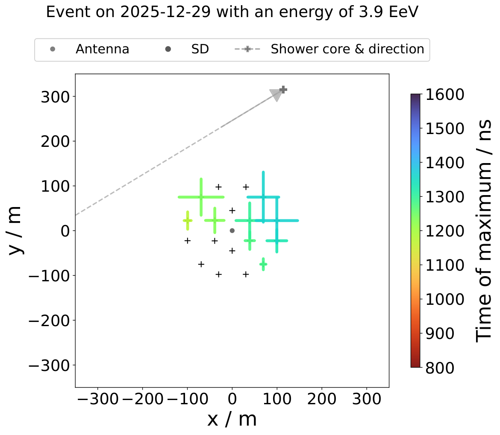
图注：图4：两个示例簇射的地面足迹。灰线及箭头表示投影簇射轴和传播方向，深灰叉为重建芯位置。天线画成十字，两臂对应南北、东西偏振；臂长编码信号强度，颜色编码脉冲峰到达时间。左例当时3站运行，右例6站运行。
对应解读：沿箭头比较颜色时间梯度，确认脉冲扫过阵列的先后与几何方向一致，再比较不同偏振臂长。
入选理由：它验证同一簇射的空间—时间一致性，臂长没有自动成为能量标尺；两个例子的运行站数和几何不同，不宜用肉眼直接比较探测效率。
来源与置信度：arXiv HTML；source verified；https://arxiv.org/html/2609.21105v1/Footprint_83452715.0_2041PeV.png
图4（原图第2面板）
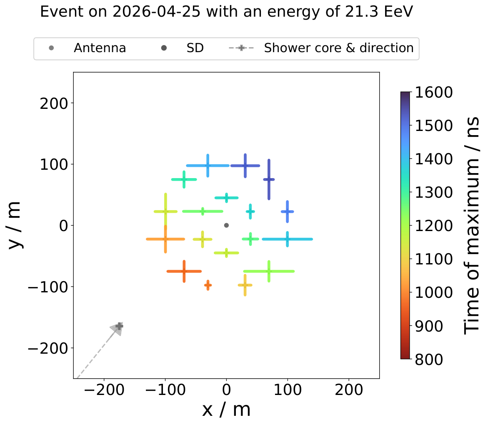
图注：图4：两个示例簇射的地面足迹。灰线及箭头表示投影簇射轴和传播方向，深灰叉为重建芯位置。天线画成十字，两臂对应南北、东西偏振；臂长编码信号强度，颜色编码脉冲峰到达时间。左例当时3站运行，右例6站运行。
对应解读：沿箭头比较颜色时间梯度，确认脉冲扫过阵列的先后与几何方向一致，再比较不同偏振臂长。
入选理由：它验证同一簇射的空间—时间一致性，臂长没有自动成为能量标尺；两个例子的运行站数和几何不同，不宜用肉眼直接比较探测效率。
来源与置信度：arXiv HTML；source verified；https://arxiv.org/html/2609.21105v1/Footprint_85239598.0_2041PeV.png
图5
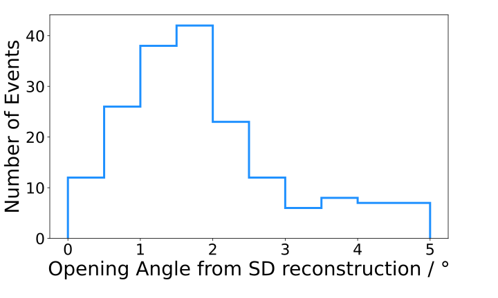
图注：图5：ARISE逐站重建方向与SD-433方向的夹角分布。每个事件采用与SD方向夹角最小的那个射电站结果；整体事件还要求夹角小于5度。
对应解读：峰约在1.5至2度附近，说明两类信号方向一致，但读取峰宽前要记住最小夹角选择和截断条件。
入选理由：这不是独立无偏的射电角分辨率测量。站间标定尚在完善，平面波而非双曲波前近似也可能贡献约一度差异，需后续模拟与联合重建分解。
来源与置信度：arXiv HTML；source verified；https://arxiv.org/html/2609.21105v1/opening_angle_histogram.svg
强相关工作
ARISE使用Auger的Offline分析框架和既有SD-433触发，并计划用CORSIKA/CoREAS连接原初簇射与射电信号。与今日IACT鉴别论文相比，二者都依赖空气簇射几何重建，但测量的是不同辐射频段，噪声与响应不能互换。可共享的思想是先用独立样本或独立探测器交叉验证，再谈分类或能量性能；最接近参考结果的择优选择会改变统计分布，必须在性能评价中显式保留。
同一事件 / 同类源线索：
相似工作：
（未提供）
基础理论 / 方法工作：
相反观点 / 张力线索：
（未提供）
6. Nonlinearly Causal General-Relativistic Two-Fluid Dissipative Magnetohydrodynamics
- 来源：arXiv / astro-ph.HE
- 链接：https://arxiv.org/abs/2609.21923v1
- 作者：Elias R. Most, Samuel J. Dunham
- 评分：novelty 9/10，importance 8/10，relevance 8/10，final 9.30/10
- 推荐理由：双流体耗散GRMHD的因果性与PIC验证具有基础方法价值
中文题目：让全局黑洞模拟保留非理想等离子体：因果双流体GR19M及其检验
做了什么：作者建立包含黏性、热传导、电阻和Hall效应的广义相对论19矩双流体系统，并实现可在CPU/GPU运行的数值方法。黑洞吸积与磁层测试重现约0.1量级的快速重联，但闭合与粒子加热仍需进一步校准。
为什么重要：它试图填补理想GRMHD与昂贵GRPIC之间的空白：全局模拟可以保留电子惯性和各向异性输运，同时用数学因果性和物理可行性约束控制数值状态。
理论 / 观测 / 仪器方法价值：最值得学习的是三层验证：方程是否适定、离散算法是否保持物理状态、宏观结果是否与动力学模拟相符；不能只因出现磁岛就认为微观耗散全部正确。
为什么应该关注：对于高能源模型，这种框架有望同时连接磁通演化、重联和耀发能量供给；但要预测伽马或中微子谱，仍需额外的辐射与非热粒子模型。
展开详细解读：文章讲解、背景、理论、重点章节、图表与相关工作
文章详细讲解
科学问题
理想磁流体把电场在流体系中视作零，并简化粒子组分和输运；PIC虽更微观，却难在全局黑洞尺度上始终解析电子等离子体和回旋时标。作者希望保留宏观动力学所需的非理想项，同时避免不可承受的全域微观分辨率。
作者怎么做
理论部分分析有限非平衡背景下的特征速度、实根与完备特征向量，分别约束因果性和强双曲性。数值部分将方程改写为通量散度形式，用高分辨激波捕捉和隐显混合时间推进，并在守恒量恢复原始量时强制密度、热力学和电流的物理可行性。
关键结果
验证涵盖含全部耗散通道的稳态Bondi参考解、旋转黑洞类Bondi吸积、Wald磁层和磁场脱落问题。代表性X点无量纲重联率为0.095–0.121；类Bondi等质量粒子样本磁通衰减时间约98±11个引力时间，与动力学结果相近。
局限和下一步
这些测试尚不代表任意组成、导引场和三维条件都已校准。压强各向异性仍施加镜像和火软管硬边界，电子对补给依赖设定，等质量情形的离子参考系截断并未完整保留电子对总应力。有效电阻的幅度也不处处与比较模型相符。
关键结果是怎么做出来的
先检查数学条件。 特征速度落在光锥内只是部分要求，还必须排除复特征根；强双曲性进一步要求完备且一致有界的特征基。因此“没有超光速实根”不能独自证明系统适定。
再检查数值可行性。 隐式积分跨越刚性时标能提高效率，但非线性求解可能存在多分支。必须选择有正确小步长极限且满足能量、密度及因果条件的分支，而非只看方程残差小。
然后检查基准解。 图1采用保存并扣除离散残差的良平衡处理，极小误差说明保持指定稳态有效，但不能把该误差直接当作一般动态问题的精度或收敛阶。
最后检查物理闭合。 图8的重联率和磁通衰减支持宏观非理想行为。原文图10中两X点电阻幅度比约6.69和8.04，提醒我们相似重联率并不意味着局部耗散模型已经逐点一致。
展开背景、理论、公式、模型、章节和图表导读
背景知识
从流体到矩。 流体模型保留粒子分布的低阶统计量，如密度、动量、压强和热流。增加矩能表达更多非平衡信息，但必须闭合更高阶量，结果仍依赖闭合假设。
两个流体。 电子与离子具有不同惯性和温度，相对运动形成电流；若一开始就消去电子动量，就难保留某些电阻、Hall和惯性响应。这里把电子数、动量和能量一起演化。
相对论耗散的难点。 把非相对论瞬时热传导直接搬进相对论方程会引起传播速度或适定性问题。具有有限弛豫时间的耗散演化能改善这一点，但并非任意参数选择都因果。
尺度分离。 全局黑洞半径与局部电子尺度可相差很大。隐式方法减少微观时标对步长的限制，仍需解析对目标结果重要的电流片结构，不能凭算法跨步就认为微观细节已解析。
基础理论 / 方法脉络
因果与双曲。 主符号决定微小扰动在给定非平衡状态下如何传播。实特征速度约束传播方向，完整特征基保证不同扰动可稳定分解；两个性质需要分别证明和实现检查。
有限弛豫闭合。 热流、黏性应力和电流向其目标值演化，而不是每时每刻立刻达到稳态。弛豫时标和输运系数共同决定波速，不能只增大电导就保证回到理想MHD。
物理状态恢复。 数值演化的守恒变量必须转换为密度、速度、温度等原始量。耗散与电子惯性使关系非线性，原文结合不等式约束和隐式求根，排除形式上有解但不物理的分支。
闭合与辐射区分。 模型产生热、流动与有效电阻，并不直接给出非热粒子尾。要把宏观耗散解释成观测耀发，应再加入经动力学模拟校准的加热分配、加速和辐射过程。
公式与推导
本文完整方程和因果条件很长，下面只给出组织推导的基本关系；弛豫及时间步公式为教学示意，不能替代原文的19矩闭合与全方向判据。采用光速为1的相对论单位。
首先保留粒子数守恒及总能动量平衡：
当模型另外注入电子对时，相应数目和能量方程必须加入一致源项，不能继续把无源表达直接用于整个注入区。
电磁场与电流耦合的结构是：
具体电磁单位约定须和代码一致，这里只表示结构而不重定原文系数。
有限弛豫的直观形式是：
X可示意热流或应力；真实张量投影、旋转和非线性项需按正文保留。τ趋零的极限也需满足相应尺度排序。
将系统写成一阶形式后，特征条件来自：
不仅要所有根为实且传播在光锥内，还要特征向量完备并一致有界；因此一个简单速度上限不能替代强双曲性证明。
数值上将非刚性通量与刚性源分开：
这是说明隐显分工的教学一阶示意；原文实现多种推进格式，IMEX12在刚性源非零时一般只有一阶，不能误称全部二阶。
最后用局部正交参考系估计重联率：
原文约0.1是光速归一化的量；与阿尔芬归一化结果比较时须说明vA。不同X点、电流补给和上游取样区域都会影响推断。
模型拟合 / 应用方法
数学验证。 阅读约束系统的特征分解和全方向条件，区分必要、充分与必要充分条件。实践中使用的保守边界可以较严格，但不能把足够条件误写成所有物理状态的完整范围。
算法验证。 通量使用HLLE和PLM或WENO重建，配合正性约束、原始量恢复和IMEX推进。基准需同时监测守恒、物理状态修正频率及步长／分辨率敏感性。
物理比较。 Bondi参考解先验证稳态，再用类Bondi吸积、Wald及磁场脱落测试形态、各向异性、磁通和X点速率。多个诊断一致比单个最终指标相符更有说服力。
后续校准。 需独立扫描电导与电流弛豫时间、质量比、磁化、导引场和电子对供给，再与三维GRPIC比较。本文暂不提供通用天体光谱拟合，应把观测映射留给独立辐射模块。
重点章节 / 结果段落怎么读
第II.3–II.4节区分特征结构、非线性因果性与强双曲性；附录B/C给出完整判据。第III节介绍通量守恒形式、激波捕捉与IMEX算法，附录G/H讨论物理可行域和隐式恢复。第IV.1节图1用良平衡稳态Bondi测试，IV.2图8–10比较X点速率与电阻，IV.3图14–15检查黑洞磁场脱落。第V节明确列出三维闭合校准和完整电子应力的后续需求，本文解读未把长篇附录证明简化成单一普适公式。
建议重点查看的图表
图1： 沿半径比较所有输运通道，而非只看密度是否一致；弱电流与电场也参与完整耦合测试。 这个测试采用良平衡离散残差扣除，极小稳态误差不等于一般动态问题同样精确。图的价值在于多物理量同时保持一致的参考状态。
图8： 先确认磁场拓扑和电流片位置，再读X点速率；速率使用局部正交参考系和指定上游场归一化。 接近0.1支持快速重联的宏观行为，却不说明所有局部电阻或非热加速都与PIC一致；应联读图10的电阻幅度差异及结论中的闭合限制。
关键图表逐图导读
图1： 沿半径比较所有输运通道，而非只看密度是否一致；弱电流与电场也参与完整耦合测试。 这个测试采用良平衡离散残差扣除，极小稳态误差不等于一般动态问题同样精确。图的价值在于多物理量同时保持一致的参考状态。
图8： 先确认磁场拓扑和电流片位置，再读X点速率；速率使用局部正交参考系和指定上游场归一化。 接近0.1支持快速重联的宏观行为，却不说明所有局部电阻或非热加速都与PIC一致；应联读图10的电阻幅度差异及结论中的闭合限制。
论文原图 / 可嵌入图片
图1
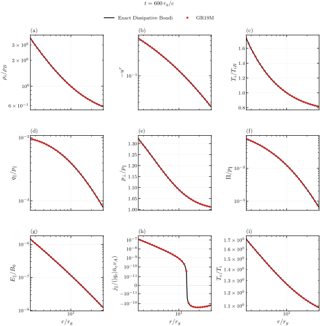
图注：图1：耗散Bondi参考解在t=600 rg/c时与GR19M演化结果的比较。黑实线为参考解，红圆点为按适当体积加权的球壳平均；各面板依次展示离子密度、径向速度、离子温度、平行热流、垂直与平行压强比、体黏性压强、平行电场、耗散电流及电子／离子温度比，按图示参考量归一化。
对应解读：沿半径比较所有输运通道，而非只看密度是否一致；弱电流与电场也参与完整耦合测试。
入选理由：这个测试采用良平衡离散残差扣除，极小稳态误差不等于一般动态问题同样精确。图的价值在于多物理量同时保持一致的参考状态。
来源与置信度：arXiv HTML；source verified；https://arxiv.org/html/2609.21923v1/fig.bondi_f0p1_fullhot_t600_profiles.svg
图8
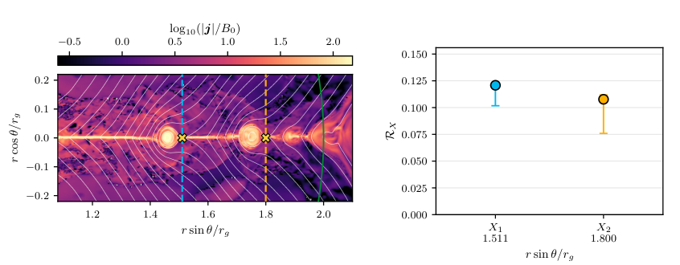
图注：图8：Wald磁层在t=62 rg/c时的电流片局部图。左侧颜色表示耗散电流不变量模的对数，白线为演化后的极向磁通面，绿线为能层；浅蓝、黄色虚线及金色叉标记两个X点。右侧列出对应瞬时无量纲重联率，约0.121和0.108。
对应解读：先确认磁场拓扑和电流片位置，再读X点速率；速率使用局部正交参考系和指定上游场归一化。
入选理由：接近0.1支持快速重联的宏观行为，却不说明所有局部电阻或非热加速都与PIC一致；应联读图10的电阻幅度差异及结论中的闭合限制。
来源与置信度：arXiv HTML；source verified；https://arxiv.org/html/2609.21923v1/fig.wald_cold_gap_t62_reconnection_rate.png
强相关工作
本工作连接Israel–Stewart型有限弛豫输运、Braginskii型磁化各向异性闭合、GRMHD激波捕捉与GRPIC重联验证。与今日电子对—离子能量分配论文联读尤其有价值：GR19M面向全局宏观响应，PIC分配研究约束组分能量，二者尺度和闭合层次不同。原文自身指出还需电子加热和非热模型，因而不应把能捕捉快速重联等同于已经可靠预测中微子通量。
同一事件 / 同类源线索：
相似工作：
（未提供）
基础理论 / 方法工作：
相反观点 / 张力线索：
（未提供）
7. A mechanism for fast radio bursts and their narrow spectra
- 来源：arXiv / astro-ph.HE
- 链接：https://arxiv.org/abs/2609.21076v1
- 作者：Andrei M. Beloborodov, Ivan Demidov
- 评分：novelty 9/10，importance 8/10，relevance 8/10，final 9.30/10
- 推荐理由：磁星脉冲受激散射解释FRB窄谱，有可检验频率和时标预言
中文题目：磁星如何把千赫兹波变成快速射电暴：受激散射、饱和与频率下漂
做了什么：作者提出磁星爆发的相对论电磁脉冲，在外磁层受激散射原有千赫兹磁流体波，产生GHz相干辐射。计算同时得到窄带、线偏振与向低频漂移，并指出最亮辐射可能集中在脉冲前缘的微秒时段。
为什么重要：难点并非仅把频率提升到GHz，还要解释极高亮温、时间频率结构和能量来源。本文将泵浦波耗尽与脉冲内传播一起计算，使不同观测特征共享同一动力学机制。
理论 / 观测 / 仪器方法价值：这提供一个可检验的磁层发射模型：峰频与脉冲功率、环境波强度和上升时间关联，能够与外激波模型作具体比较，而不是仅凭频率数量级一致来判断。
为什么应该关注：应特别关注饱和后频谱变宽、最早微秒辐射的高效率，以及MHD成立所需的电荷供应。它们决定模型能解释哪些FRB，而不是所有射电暴都自动适用。
展开详细解读：文章讲解、背景、理论、重点章节、图表与相关工作
文章详细讲解
科学问题
磁星外磁层可能存在由小型地壳活动激发的3—10kHz磁流体波。爆发发出的强电磁脉冲向外加速，问题是这些低频背景波能否从脉冲提取足够能量，形成短促、窄带且高亮温的射电辐射。
作者怎么做
作者在脉冲共动系分析快模波分裂为快模与阿尔芬波的三波耦合，再变换回观测系。随后同时演化受激增益、环境泵浦耗尽和GHz波沿脉冲的输运，比较未饱和、简化双束以及完整角分布计算。
关键结果
双重相对论频移将千赫兹频率提升约Γ²倍。未饱和示例的相对半高全宽约0.18，饱和后约0.5；峰频随脉冲后段功率下降而降低。完整示例采用Γ最大值500、1ms脉冲，并预测很亮的早期微秒结构。
局限和下一步
这仍是机制模型，并未完成FRB样本拟合。背景波谱、脉冲上升过程、粒子补给和外部传播均有不确定性；低密度时MHD失效，竞争的快模转双阿尔芬波过程也可能改变效率。原始完全线偏振并不保证传播后的观测偏振完全相同。
关键结果是怎么做出来的
频率从哪里来。 先到运动脉冲的共动系，迎面而来的背景波被蓝移；散射产生的快模再回到观测系又被蓝移。约Γ²的总提升是运动学尺度，精确峰位还受角度和增益选择影响。
亮度从哪里来。 受激过程让已有辐射指数增长，能量主要取自强脉冲的整体运动与电磁能，背景波充当泵浦和触发条件。不能将FRB能量简单限定为原先千赫兹波的静止系能量。
为什么会饱和。 当进入脉冲的环境波被充分散射，后方可用泵浦减少。前缘屏蔽和输运使谱形不再遵循无限指数增长，计算中的饱和瞬时带宽也比未饱和情形宽。
为什么向低频漂移。 在饱和频段边界变化较缓的阶段，峰频主要追随Γ²。脉冲功率下降使Γ²下降，因而形成下漂；恒定功率脉冲并不会仅凭这个机制必然出现同样漂移。
展开背景、理论、公式、模型、章节和图表导读
背景知识
快模与阿尔芬模。 强磁场等离子体中的快模可近似横跨磁场传播，阿尔芬模则沿磁力线传播。不同色散关系允许非线性三波共振，本文利用的正是这种模式转换而非普通热电子逆康普顿散射。
磁层的已有波场。 小型地壳活动可先向磁层输送低频波动。背景波能量用磁能的一小部分表示，角分布和折断幂律谱是模型输入；目前它们不是从每个FRB源直接测得的量。
相干射电的要求。 FRB亮温很高，需要粒子或波场的集体过程。受激散射的增长依赖已有种子，强饱和区对种子幅度只有较弱依赖；这种性质与单次自发散射的线性叠加不同。
外磁层的条件。 波频必须低于适当的等离子体响应尺度，电流也必须有足够电荷承载。文章采用较充分的电子对供给；在较低密度或电荷饥饿区域，下面的MHD推导不能直接外推。
基础理论 / 方法脉络
脉冲加速。 外传脉冲磁场约随半径的倒数衰减，而背景偶极场衰减更快，因此脉冲与背景的相对强度增加，漂移洛伦兹因子随半径上升；这为较外层较高的频率提升提供条件。
指数增益。 三波过程的增长率随环境波强度与频率增加。短时间内哪怕只有很弱种子，只要传播距离容许足够多的增长时间，也可变成主要辐射，但必须同时检查泵浦能量守恒。
非线性饱和。 强增益区先消耗匹配的背景波，再使可用泵浦频段逐渐变化。由此形成低频陡截断和较缓高频尾；不能用一个无限增长指数替代整个动态谱计算。
观测时间。 除脉冲内部的迟滞时间外，不同发射角还有几何到达时差。模型在超过约微秒后主要由脉冲相位控制，但最早结构仍须保留角度与前缘输运才能正确解释。
公式与推导
以下列出原文机制的尺度关系，并将近似条件明确写出；数值系数和完整角积分应以正文的动力学方程为准，不能把这些估算视作独立的观测拟合。
背景波的能量密度写作：
ε₀量度泵浦相对于背景磁能的强度；它是模型环境参数，不是FRB辐射效率。
脉冲与背景的压缩关系给出：
后一个比例依赖脉冲场约随r⁻¹、背景偶极场随r⁻³的区间，不能延伸到任意外部介质。
两次频率变换带来的特征尺度是：
迎角、散射角和增益峰位引入额外系数，因此只用观测频率不能唯一确定Γ与背景频率各自的值。
在线性增长阶段，可用教学形式表示：
显著饱和要求沿途累计增长很大，原文强调qR外/c远大于十的条件；真实增长须对变化的背景积分。
观测到达时间满足：
辐射束角约Γ⁻¹时，第二项在示例中约微秒，解释为何最早结构比毫秒整体轮廓更敏感。
饱和计算的峰频可近似表示为：
当饱和边界b_sat变化缓慢时，下降的脉冲功率带来下漂。能量提升由脉冲供给，故能量预算必须同时跟踪泵浦耗尽和脉冲损失。
模型拟合 / 应用方法
模型输入。 作者给定背景波的折断幂律谱和近似各向同性分布，示例两侧谱指数取3；爆发脉冲的Γ最大值为500，持续约1ms。它们用于探索行为，并非从同一个真实FRB联合反演得到。
计算顺序。 先由无耗尽解定位最强增长频段，再引入泵浦耗尽和GHz波沿脉冲的输运。完整解与双束近似相互比较，目的是辨认角分布、前缘屏蔽和饱和的作用。
控制参数。 在所示条件下，外边界波强度参数低于约0.02时未饱和，更大时进入饱和；0.03—0.3范围的谱形相近。比较两种脉冲上升时间能分离早期前缘效应和后期共同演化。
如何观测检验。 应同时比较动态谱带宽、漂移、偏振及微秒结构，并对频带截断、散射展宽和选择效应前向模拟。当前论文没有给出这样的总体统计拟合，因此不能把示例曲线称为数据的唯一解释。
重点章节 / 结果段落怎么读
重点阅读第II—IV节的基本图像与背景波条件，第V节的未饱和增长，以及第VI节的泵浦耗尽、输运和动态谱结果。图2解释几何，图9联系可观测的时间频率结构；附录列出竞争模式与双束近似，适合检查简化模型的适用范围。第VII节的密度和传播限制应和主结果一起阅读，尤其不要漏掉低密度时MHD与电荷供给可能失效的条件。
图11进一步区分脉冲上升时间对最早微秒辐射的影响。
建议重点查看的图表
图2： 先追踪背景波进入脉冲的方向，再看GHz波如何与脉冲共同向外传播；右图的变化是泵浦被消耗，不是凭空增加环境波能量。 这张图帮助把三波耦合、前缘屏蔽和饱和三个过程对应到实际空间位置，避免把全磁层看作均匀的放大器。
图9： 沿左图各条时间曲线观察谱峰移动，再到右图寻找随时间向低频倾斜的亮带；峰位、带宽和颜色强度必须分别解读。 它把模型内部的相对论加速与饱和条件转换成可与FRB动态谱比较的量，但图中展示的是理论示例而非真实数据拟合。
关键图表逐图导读
图2： 先追踪背景波进入脉冲的方向，再看GHz波如何与脉冲共同向外传播；右图的变化是泵浦被消耗，不是凭空增加环境波能量。 这张图帮助把三波耦合、前缘屏蔽和饱和三个过程对应到实际空间位置，避免把全磁层看作均匀的放大器。
图9： 沿左图各条时间曲线观察谱峰移动，再到右图寻找随时间向低频倾斜的亮带；峰位、带宽和颜色强度必须分别解读。 它把模型内部的相对论加速与饱和条件转换成可与FRB动态谱比较的量，但图中展示的是理论示例而非真实数据拟合。
论文原图 / 可嵌入图片
图2
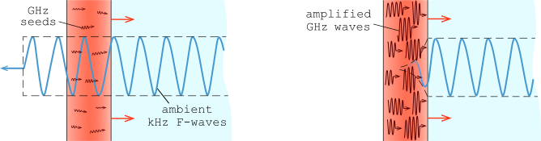
图注：未饱和与饱和散射的示意图。左侧GHz波较弱，环境泵浦可穿过脉冲；右侧靠近磁层外边界时GHz波增强，匹配的泵浦被耗尽，脉冲前缘对后方形成屏蔽。
对应解读：先追踪背景波进入脉冲的方向，再看GHz波如何与脉冲共同向外传播；右图的变化是泵浦被消耗，不是凭空增加环境波能量。
入选理由：这张图帮助把三波耦合、前缘屏蔽和饱和三个过程对应到实际空间位置，避免把全磁层看作均匀的放大器。
来源与置信度：arXiv HTML；source verified；https://arxiv.org/html/2609.21076v1/Fig2.svg
图9
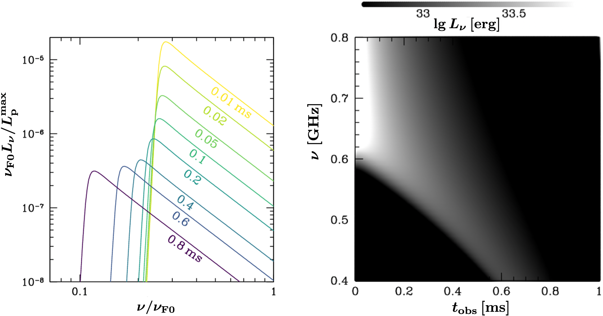
图注：饱和模型的频谱演化与动态谱，外边界波强度参数为0.1。左图展示不同到达时间的瞬时谱，频率以Γ最大值平方乘背景特征频率归一化；右图展示400—800MHz频带内的时间频率结构。
对应解读：沿左图各条时间曲线观察谱峰移动，再到右图寻找随时间向低频倾斜的亮带；峰位、带宽和颜色强度必须分别解读。
入选理由：它把模型内部的相对论加速与饱和条件转换成可与FRB动态谱比较的量，但图中展示的是理论示例而非真实数据拟合。
来源与置信度：arXiv HTML；source verified；https://arxiv.org/html/2609.21076v1/eps_0.1.png
强相关工作
本文延续磁星爆发电磁脉冲与磁层波相互作用的思路，并把快模—阿尔芬模三波过程推进到饱和和动态谱预测。与外部激波同步辐射脉泽不同，它把发射放在外磁层，环境波提供频率与增益条件。两类模型都需要处理传播和能量预算；现阶段窄带、下漂或高线偏振单独一项都不足以排他地区分。更有判别力的是它们对微秒前缘、功率与漂移关系及磁层粒子供应的联合要求。
同一事件 / 同类源线索：
相似工作：
（未提供）
基础理论 / 方法工作：
相反观点 / 张力线索：
（未提供）
8. Little Red Dots As Super-Eddington Fountain Flows
- 来源：arXiv / astro-ph.HE
- 链接：https://arxiv.org/abs/2609.20920v1
- 作者：Nicholas Kaaz, Eliot Quataert, Taya Govreen-Segal, Hanpu Liu
- 评分：novelty 9/10，importance 8/10，relevance 8/10，final 9.30/10
- 推荐理由：喷泉式超爱丁顿流统一LRD谱现象，模型近似边界明确
中文题目：小红点的慢风与巴耳末茧：超爱丁顿黑洞周围的喷泉流模型
做了什么：作者用几乎刚能逃离引力场的慢风解释小红点中的百公里每秒吸收，并以非LTE辐射转移生成蓝点、V形小红点和强巴耳末断裂谱。关键是莱曼α囚禁与电子散射共同维持激发态氢和强吸收。
为什么重要：小红点既有很宽的发射线翼，又有很慢的吸收结构，这对把所有线宽都解释为高速运动构成挑战。本文将慢动力学、电子散射宽翼和连续谱断裂纳入同一物理图像。
理论 / 观测 / 仪器方法价值：论文提醒我们，宽线不能自动转换成黑洞质量；散射可以产生宽翼，而激发态氢吸收可以使本征谱变红，因而尘埃、维里质量和吸积率推断必须联合检查。
为什么应该关注：最值得关注的是巴耳末光子而非仅莱曼光子维持电离的区域，以及高密度模型外层未收敛的限制。这直接影响对小红点能量来源和黑洞增长速度的解释。
展开详细解读：文章讲解、背景、理论、重点章节、图表与相关工作
文章详细讲解
科学问题
通常超爱丁顿吸积盘会驱动千至万公里每秒的风，但小红点的窄吸收槽常只蓝移100—300km/s。作者提出快速风从极区逃逸，其他方向被稠密慢风包围；部分物质勉强逃离、部分回落，形成喷泉流。
作者怎么做
以百万太阳质量黑洞为例，建立球对称的临界逃逸风与光子疲劳风剖面，再交给Sirocco计算非LTE原子布居和蒙特卡洛辐射转移。模型保留电子散射、束缚自由吸收及谱线过程，但没有同时求解完整二维辐射流体。
关键结果
质量流失率约2.5太阳质量每年时偏蓝，5—10时可形成V形谱，15时巴耳末断裂很强。慢风可以产生蓝移吸收槽与散射宽翼；莱曼连续谱耗尽后，巴耳末光子仍能电离被困在激发态的氢。
局限和下一步
模型给出可行的定性图景，并非对所有小红点完成拟合。风的加速、极向结构和回落尚未自洽求出；莱曼α的Sobolev处理可能不足，最高密度两组模型还截去了未收敛的外层，对细吸收特征有影响。
关键结果是怎么做出来的
先区分宽翼与慢吸收。 窄吸收槽的位置反映视线上的较慢气体速度，宽翼则可由多次电子散射产生。把两者都代入同一个维里速度公式会混淆动力学与辐射转移。
再解释慢风的能量。 若辐射提供的机械功仅够克服引力，风到大半径时可以很慢；能量不足的流线会回落。论文采用接近光子疲劳极限的参数来实现这种状态，而没有直接模拟完整喷泉循环。
随后跟踪电离光子。 莱曼连续谱被消耗后，莱曼α囚禁维持n=2布居，使3.4eV以上的巴耳末光子能够继续电离气体。因此“缺少13.6eV光子”不一定等于该区域立即完全复合。
最后读出谱形。 随密度增加，巴耳末连续谱逐渐耗尽，谱从蓝变为V形再变为强断裂。电子散射增加光程，使比简单LTE估算更低的密度也可能有明显断裂；这仍需更精细的共振转移验证。
展开背景、理论、公式、模型、章节和图表导读
背景知识
小红点是什么。 这些高红移致密源的红色连续谱、宽发射线和常见弱X射线，使其不能直接套用低红移明亮类星体模板。被稠密气体包围的高吸积黑洞是候选解释之一，也存在恒星贡献等其他可能。
爱丁顿尺度。 当电子散射受到的辐射推力接近引力，吸积流会变厚并发生强质量流失。外层供给率远高于定义上的爱丁顿吸积率，并不意味着相同质量最终都进入黑洞视界。
两种光球。 吸收和再发射决定热化，而电子散射决定最后逃逸位置。散射占优时，热化半径可以远小于散射光球；因此从颜色温度推得的半径不能直接视为所有谱线的产生位置。
非LTE的重要性。 低密度辐射场中的原子能级布居不必满足当地温度的玻尔兹曼分布。这里n=2受光子囚禁与光致电离控制，故不能仅凭气温判断巴耳末吸收是否强。
基础理论 / 方法脉络
临界逃逸。 理想化的零总机械能轨道满足速度随半径平方根的倒数下降。与稳态质量守恒结合，密度按r⁻³ᐟ²下降，比恒速球风的r⁻²更缓。这个剖面只描述预设的外流，不能代替包含回落的完整喷泉流。
光子疲劳。 辐射不断做功抬升气体，向外可用光度随之减少。接近能量极限时终端速度很小，超过极限则不存在整体稳定逃逸解，这自然提示失败风与回落。
有效吸收。 多次散射延长光子路径，即便单程吸收光深不大，也可能被吸收并重处理。有效光深同时依赖散射和吸收；在巴耳末边附近，频率依赖尤其不能用灰不透明度完全替代。
激发态电离。 莱曼α反复吸收和发射阻止n=2快速消失。在莱曼连续谱已耗尽的区域，巴耳末电离可平衡高能级复合；更高密度时帕邢等连续谱也会介入，改变最终复合前沿。
公式与推导
下面由连续性、能量和光子守恒串起原文模型。球对称和稳态是用于辐射转移的理想化输入，并不等同于已经证明真实喷泉流处处满足这些假设。
临界逃逸速度与连续性分别为：
这解释为什么慢风在大半径仍能有较大散射柱密度；真实失败流还会有非零回落通量。
辐射力的参考光度是：
这里采用电子散射不透明度，局部电离变化会改变实际辐射耦合，所以它不是全过程都固定的净加速度。
光子疲劳的能量尺度可教学性地写成：
它只估算抬升气体的最大质量流率，还未加入终端动能、焓和具体边界项；原文的风解保留自己的参数定义。
巴耳末吸收由激发态柱密度决定：
这里积分方向从内向外，用来追踪中心光子的消耗，不能与从外向内定义的逃逸光深混用。
散射增强路径后的常用近似为：
此式说明吸收较弱时仍可有效热化，但强频率依赖和谱线囚禁需要完整计算。
在莱曼净电离近零且主要由巴耳末提供电离时：
这是有明确条件的近似平衡；高阶连续谱、碰撞和输运重要时必须恢复全部速率方程，不能把n₂直接固定为LTE值。
模型拟合 / 应用方法
设置剖面。 作者固定黑洞质量为百万太阳质量，比较两族球对称速度和密度剖面；光子疲劳族采用m=0.94，扫描质量流失率。输入辐射为稀释黑体，金属丰度为太阳的十分之一。
求电离结构。 通常使用100个对数径向网格，每轮两百万光子包，先进行14轮电离迭代，再进行20—40轮光谱计算。氢和氦采用较完整的宏观原子处理，金属使用简化原子模型。
比较可观测量。 连续谱检查巴耳末断裂与蓝光残余，Hα检查窄核、吸收槽和宽翼。原文对红翼拟合指数、对窄核拟合高斯，目的在于描述合成线形，不是从真实数据唯一测出黑洞质量。
检查数值限制。 两个最高密度模型在复合前沿之外收敛不佳，图4、5使用截断外层的谱。作者比较了截断影响，但关键莱曼α转移还需超越Sobolev近似；定量参数推断应把这些作为模型系统误差。
重点章节 / 结果段落怎么读
第II节先从观测速度与标准盘风预测的矛盾推出慢风需求；第III节解释光子疲劳。第IV.1节列出数值设置和外层截断，第IV.2—IV.4节把谱形、能级布居与电离预算连起来。图4、5适合对应观测，图9—13适合查清巴耳末茧的物理来源。第V.5节明确列出Sobolev、二维几何、风加速和时变回落限制，定量使用结果前必须一起核对。
建议重点查看的图表
图4： 从低密度到高密度依次比较断裂两侧通量，注意V形谷的位置和蓝光是否保留；高频端锯齿不能都解释成真实谱线。 这是质量流失率到可观测颜色的直接桥梁，同时标出了截断与采样噪声，避免把最红模型的全部细节当成稳定预测。
图5： 先看窄吸收槽相对线中心的位置，再观察宽翼范围；前者与慢外流有关，后者主要受多次散射控制，二者不能当作同一个速度测量。 它解释为什么小红点能同时有很宽的发射翼和很慢的吸收结构，也说明直接用整体线宽估算维里黑洞质量可能出现偏差。
关键图表逐图导读
图4： 从低密度到高密度依次比较断裂两侧通量，注意V形谷的位置和蓝光是否保留；高频端锯齿不能都解释成真实谱线。 这是质量流失率到可观测颜色的直接桥梁，同时标出了截断与采样噪声，避免把最红模型的全部细节当成稳定预测。
图5： 先看窄吸收槽相对线中心的位置，再观察宽翼范围；前者与慢外流有关，后者主要受多次散射控制，二者不能当作同一个速度测量。 它解释为什么小红点能同时有很宽的发射翼和很慢的吸收结构，也说明直接用整体线宽估算维里黑洞质量可能出现偏差。
论文原图 / 可嵌入图片
图4
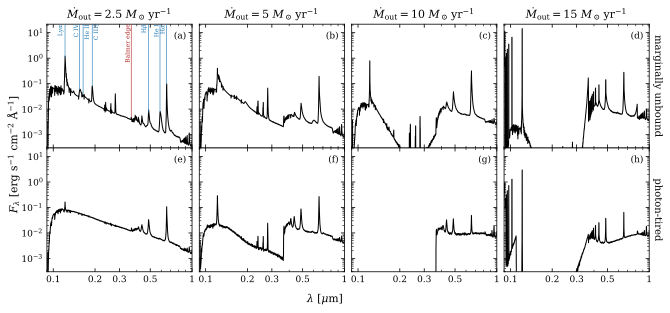
图注：两族风模型的合成连续谱。低质量流失率时偏蓝，中等流失率出现部分巴耳末断裂和V形谱，高流失率时蓝光显著受抑。d、h面板截去了未收敛外层；完整断裂模型约0.1微米处存在蒙特卡洛噪声。谱以1000km/s窗口平滑。
对应解读：从低密度到高密度依次比较断裂两侧通量，注意V形谷的位置和蓝光是否保留；高频端锯齿不能都解释成真实谱线。
入选理由：这是质量流失率到可观测颜色的直接桥梁，同时标出了截断与采样噪声，避免把最红模型的全部细节当成稳定预测。
来源与置信度：arXiv HTML；source verified；https://arxiv.org/html/2609.20920v1/Fig_LRD_gallery.svg
图5
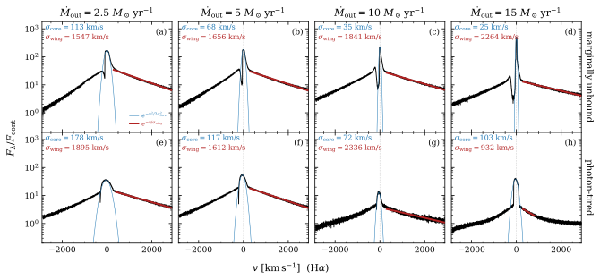
图注：相同风模型的Hα线形。所有模型均出现电子散射宽翼、窄发射核和蓝移吸收槽；红翼用指数函数描述，窄核用高斯描述。d、h面板同样来自截断未收敛外层后的计算。
对应解读：先看窄吸收槽相对线中心的位置，再观察宽翼范围；前者与慢外流有关，后者主要受多次散射控制，二者不能当作同一个速度测量。
入选理由：它解释为什么小红点能同时有很宽的发射翼和很慢的吸收结构，也说明直接用整体线宽估算维里黑洞质量可能出现偏差。
来源与置信度：arXiv HTML；source verified；https://arxiv.org/html/2609.20920v1/Fig_LRD_halpha.svg
强相关工作
论文把超爱丁顿吸积与大质量恒星的光子疲劳风类比，并接续“被气体包裹的黑洞”及LTE包层模型。相较仅用尘埃把标准AGN谱变红，它强调原子连续吸收和散射共同重塑本征谱；相较静态LTE包层，它引入慢风和非LTE电离。尚未排除宿主恒星蓝光、其他包层结构或准恒星解释，因为部分辐射转移机制可在这些情形中共享。
风的长期维持与宿主气体供应仍需和这些替代图景共同检验。
同一事件 / 同类源线索：
相似工作：
（未提供）
基础理论 / 方法工作：
相反观点 / 张力线索：
（未提供）
9. The AGN Channel in 3D: Scattering Belts and the Importance of Eccentricity in the Black Hole Population
- 来源：arXiv / astro-ph.HE
- 链接：https://arxiv.org/abs/2609.22074v1
- 作者：Connar Rowan, Martin E. Pessah
- 评分：novelty 8/10，importance 8/10，relevance 8/10，final 9.00/10
- 推荐理由：三维直接散射改变AGN黑洞成对和并合分布，需核验初始偏心率假设
中文题目：AGN盘中的双黑洞并不总能存活：三维散射带与分级并合
做了什么：三维混合N体模拟显示，AGN盘迁移陷阱周围形成有限宽度的散射带，约八成在陷阱形成的双黑洞随后遭到解体或交换。初始轨道偏心率还显著减少嵌入盘内的黑洞，进而降低并合率与最大质量。
为什么重要：一维群体模型容易把同半径对象立即配对，遗漏轨道相位与近距离多体作用。这项工作直接计算关键近遇，使盘中聚集、双星形成和双星真正并合成为三个不同的概率问题。
理论 / 观测 / 仪器方法价值：它给高质量及不等质量引力波源提供更具体的AGN通道预测，也说明并合率对初始星团运动状态极其敏感，不能由一个理想迁移陷阱推断普适事件率。
为什么应该关注：若关心分级并合与电磁对应体，应关注散射后离盘的少量并合、初始偏心率以及双星硬化处方；这些会同时改变质量分布、空间位置和潜在辐射逃逸时间。
展开详细解读：文章讲解、背景、理论、重点章节、图表与相关工作
文章详细讲解
科学问题
气体力矩使黑洞向零净力矩半径迁移，但到达相同半径并不保证在三维空间立即相遇。即使形成双星，后来进入的单星或双星仍可交换成员、使其解体或散射离开盘面。论文要量化这些过程对AGN通道的影响。
作者怎么做
AGNBI以开普勒轨道描述整体运动，以气体穿盘阻力、迁移和阻尼更新轨道；进入局部散射核的关键近遇则直接进行三维少体积分。基准系统含四百万太阳质量中心黑洞、两万个初始单黑洞及一千万年AGN寿命。
关键结果
约80%的陷阱双星随后被交换或解体，关闭双星—单星及双星—双星相互作用会使并合数约翻倍。考虑初始偏心率后，形成及并合较圆轨道初态低约一个数量级；粗略体积事件率为2—12Gpc⁻³yr⁻¹。
局限和下一步
这是指定盘模型和初态的预测，尚未对AGN质量函数积分。内双星偏心率设零，反冲和硬化采用处方，没有初始双星和背景恒星；高速近遇采用截断与事后时间尺度检验，不能保证其他更致密环境同样成立。
关键结果是怎么做出来的
先看形成而非并合。 迁移慢的区域有较长停留时间，盘中多处都可形成双星，陷阱只是峰值位置。对象还需等待轨道相位接近，不能只按半径相同便立即组合。
再看反复破坏。 散射使许多对象多次形成又失去双星，因此形成次数可增加而最终并合数下降。关闭双星相关近遇后，峰更窄、并合更多，构成检验散射带解释的直接对照。
然后看供给。 偏心轨道穿盘时气体拖曳与圆轨道不同，更多黑洞不能及时嵌入盘。减少的有效供给会连锁削弱高代并合，基准最高双星总质量约百太阳质量，圆初态可到千太阳质量。
最后看总体事件率。 作者用一个代表性AGN数密度换算2、12、9三个模型的体积率。它们不是观测拟合置信区间；要预测宇宙总体，还需覆盖不同中心质量、盘结构、寿命和星团初态。
展开背景、理论、公式、模型、章节和图表导读
背景知识
动力学形成通道。 与两颗恒星从出生即为双星的孤立演化不同，AGN盘中的黑洞可以靠气体耗散捕获。并合产物若留在环境中，还能再次配对，因而有机会产生更高质量和不等质量系统。
迁移陷阱。 盘密度、温度和热力矩共同决定迁移方向；净力矩变号处可以积聚对象。但陷阱是平滑背景力矩的概念，局部少体引力散射会暂时把对象推离这个位置。
双星的硬与软。 双星结合能需和入射对象动能比较。近遇可使硬双星更紧，也可交换成员或解体；结果依赖速度、冲量、相位和质量，不能只按一个平均截面全部替代。
嵌入和穿盘。 倾角较大对象只在穿盘时受强阻力，充分对齐后则持续受盘力矩。初始偏心率和倾角决定转入嵌入状态的时间，故它们影响整个并合供给而不只是最后一场近遇。
基础理论 / 方法脉络
局部与全局分工。 中心引力主导长期轨道，近距离黑洞相互作用主导配对和解体。混合积分利用这种尺度分离，但必须正确发现近遇并回溯到散射核边界，避免一步跨过强相互作用区。
气体提供耗散。 穿盘拖曳、倾角与偏心率阻尼使对象趋向盘面；嵌入双星还受周双星盘力矩。气体可以帮助形成和收缩双星，但在别的对象抵达前是否完成并合仍是竞争时间尺度问题。
散射带的形成。 向陷阱汇聚不断补充对象，散射不断把对象推出，而阻尼又使其回到低速度弥散状态。这种循环把理想零宽度陷阱扩展为有限宽度的动态区域。
分级增长的选择。 更大质量双星通常更快收缩且更难解体，因此并合样本比形成样本更偏重质量。最大增长还受盘内可用黑洞数限制，初始轨道分布通过供给影响最终质量尾部。
公式与推导
下面保留理解算法与物理结果所需的尺度关系；原文把r_g定义为史瓦西半径2GM/c²，比较其他论文时尤其要核对因子二。
局部潮汐约束由Hill半径衡量：
这是中心质量主导时的近似，算法用约3r_H作为散射核，并只对相对速度低于10v_H的近遇进行详细积分。
气体捕获的有效尺度取较小者：
因此偏心和倾斜轨道的较大相对速度会削弱吸积拖曳，不能将圆轨道阻力直接套到整个星团。
穿盘与嵌入的几何划分为：
嵌入后采用的阻尼可示意为de/dt=-e/τ_e与di/dt=-i/τ_i；它们仍来自给定气体盘模型，而非完整三维流体响应。
初始偏心率用截断并重采样的Rayleigh分布：
必须排除e大于等于1的非束缚轨道，且这一初态本身应进入群体不确定性。
对于圆的内双星，引力波收缩的标准尺度是：
气体硬化会改变实际时间，若保留内偏心率也会大幅改变该表达；论文并未自由演化这一全部自由度。
粗略体积率为：
用单一代表模型和数密度得到的2—12只是量级估算，可靠总体预测应对AGN与初态分布积分，并包含观测选择函数。
模型拟合 / 应用方法
基准输入。 初始黑洞质量在5—40太阳质量之间，质量函数指数为−2；中心质量四百万太阳质量，盘黏性参数0.1，爱丁顿吸积比例0.1。研究没有预先放入双黑洞，专门跟踪气体捕获形成。
近遇判定。 对象进入约三个Hill半径后进行局部积分，满足结合半长轴小于四分之一Hill半径才计作稳定双星；双星相关近遇足够接近时拆成成员直接积分，并随机化未追踪的内部相位。
受控比较。 一组关闭双星相关散射，一组把初始偏心率设零，还有较冷的速度分布。前者分离破坏作用，后两者分离供给作用，不能把三种差异混为同一个“更强气体阻力”结果。
截断验证。 高速近遇没有逐一积分，作者估算解体时间并与合并双星寿命比较，基准模型中前者更长。但更大中心黑洞和未纳入的恒星背景可能改变这一排序，需重新检查而非沿用结论。
重点章节 / 结果段落怎么读
第II节给出混合轨道推进、气体源项、双星收缩和近遇阈值；其中II.4的零内偏心率与II.6的速度截断是重要假设。第III.1节和图1展示散射带及关闭散射的对照，III.2与图3解释初始偏心率。III.3检查未积分的高速近遇，III.4说明体积率仅为粗略换算。阅读时应区分绕中心黑洞的外轨道偏心率与双星内部轨道偏心率。
图4专门检查被速度阈值排除的高速碰撞。
建议重点查看的图表
图1： 重点比较最下一行同一陷阱附近的峰宽和并合数，再向上对照解体峰；不能把顶部稀疏点数直接当成全部事件数。 关闭近遇的受控对照直接支持散射展宽和抑制并合的解释，显示“到达陷阱”与“最终并合”之间存在重要损失。
图3： 先看盘内对象数差异，再看高质量尾和第三代以上并合；颜色表示不同初态，不是对同一模型的不确定性区间。 这张图把初始偏心率经过嵌入供给影响分级增长的完整链条展示出来，避免把高质量尾差异误解为单次并合的微观变化。
关键图表逐图导读
图1： 重点比较最下一行同一陷阱附近的峰宽和并合数，再向上对照解体峰；不能把顶部稀疏点数直接当成全部事件数。 关闭近遇的受控对照直接支持散射展宽和抑制并合的解释，显示“到达陷阱”与“最终并合”之间存在重要损失。
图3： 先看盘内对象数差异，再看高质量尾和第三代以上并合；颜色表示不同初态，不是对同一模型的不确定性区间。 这张图把初始偏心率经过嵌入供给影响分级增长的完整链条展示出来，避免把高质量尾差异误解为单次并合的微观变化。
论文原图 / 可嵌入图片
图1
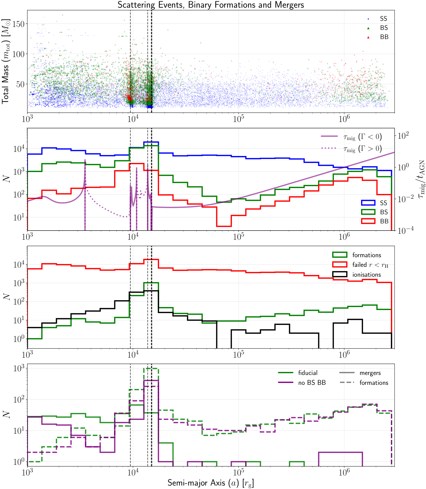
图注：散射、形成和并合的径向分布。虚线标出迁移陷阱；各行依次展示不同类型近遇、次数与迁移时间、形成与解体，以及开启或关闭双星相关近遇的对照。顶部为清晰起见仅随机显示十分之一近遇。
对应解读：重点比较最下一行同一陷阱附近的峰宽和并合数，再向上对照解体峰；不能把顶部稀疏点数直接当成全部事件数。
入选理由：关闭近遇的受控对照直接支持散射展宽和抑制并合的解释，显示“到达陷阱”与“最终并合”之间存在重要损失。
来源与置信度：arXiv HTML；source verified；https://arxiv.org/html/2609.22074v1/plot_1a.png
图3
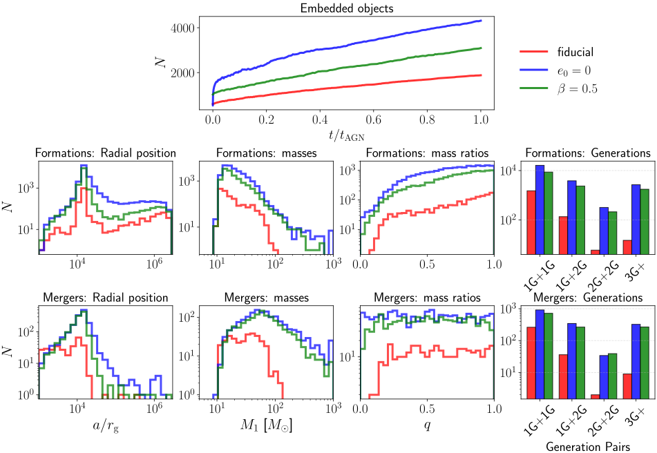
图注：基准、初始圆轨道和较冷初态的比较。顶部为随时间嵌入盘内的对象数，其余面板比较形成与并合的轨道半长轴、主星质量、质量比和并合代数。
对应解读：先看盘内对象数差异，再看高质量尾和第三代以上并合；颜色表示不同初态，不是对同一模型的不确定性区间。
入选理由：这张图把初始偏心率经过嵌入供给影响分级增长的完整链条展示出来，避免把高质量尾差异误解为单次并合的微观变化。
来源与置信度：arXiv HTML；source verified；https://arxiv.org/html/2609.22074v1/plot_2.svg
强相关工作
研究承接AGN盘迁移、气体捕获和分级并合的群体模型，将关键少体相遇从统计处方推进到直接三维积分。它并未替代所有蒙特卡洛或半解析方法，而是指出相位等待、交换和解体可能系统改变陷阱附近的预测。与球状星团通道相比，气体耗散与盘面选择是其特征；要用引力波质量和质量比区分通道，仍需加入探测选择与不同AGN环境分布。
背景恒星与初始双星的加入可能进一步改变解体竞争。
同一事件 / 同类源线索：
相似工作：
（未提供）
基础理论 / 方法工作：
相反观点 / 张力线索：
（未提供）
10. Euclid: Quick Data Release (Q1) -- Optical hotspots in powerful radio galaxies
- 来源：arXiv / astro-ph.HE
- 链接：https://arxiv.org/abs/2609.21930v1
- 作者：M. J. Hardcastle, L. Bisigello, M. Bondi, M. Magliocchetti, L. K. Morabito, J. Petley, F. Ricci, H. J. A. Rottgering
- 评分：novelty 8/10，importance 8/10，relevance 8/10，final 9.00/10
- 推荐理由：Euclid与LOFAR联用约束热点TeV电子，有助于理解喷流加速上限
中文题目：Euclid与LOFAR确认射电热点的红外辐射：电子加速到TeV的证据
做了什么：Euclid近红外成像与0.5角秒LOFAR射电图确认两个FRII热点对应体，其中一个位于红移1.607的重启射电源内双结构。近似等分配磁场下，同步谱拟合要求约TeV电子，并显示红外至光学已接近高能截止。
为什么重要：热点光学候选容易与背景星系偶然重合，高分辨率射电位置核验将低分辨率候选显著缩减。可靠的位置对应与谱形共同提供局部高能电子加速的证据。
理论 / 观测 / 仪器方法价值：论文将空间匹配、候选污染、同步谱和样本选择放在一起，适合作为跨波段识别范例。它也说明射电最亮不等于最高能电子最多，磁场与辐射损失必须共同考虑。
为什么应该关注：对于高能辐射研究，可关注热点截止能与磁场的简并，以及未检出热点的约束。这里的TeV指电子能量，不能误写成已经探测到TeV伽马射线。
展开详细解读：文章讲解、背景、理论、重点章节、图表与相关工作
文章详细讲解
科学问题
FRII射电星系的喷流终止热点能够加速粒子，但能够延伸到红外和光学的热点只占少数。作者利用Euclid深场和LOFAR寻找这些对应体，并检验是普遍的粒子加速还是只在特定热点中出现。
作者怎么做
先由6角秒射电图选择FRII，再用VLASS形态和Euclid四波段排除明显错配；在有0.5角秒LOFAR覆盖的区域重新核验位置。对两个最可靠热点提取光度，用有折断和截止的电子谱计算同步辐射并做MCMC拟合。
关键结果
29个可检查的高分辨率样本中确认2个，约7%；较宽松样本得到约7%—15%的对应体比例。两个热点的电子截止洛伦兹因子约1.4×10⁶和1.1×10⁶，且拟合不要求截止之前另有明显冷却折断。
局限和下一步
电子能量依赖近似等分配磁场和单区球形模型，真实热点可有未分辨结构、时间变化和多加速区。样本偏向较大FRII及容易被Euclid检出的硬谱热点，因此不能把检测比例直接当作全部射电星系的普适加速效率。
关键结果是怎么做出来的
先确认位置。 低分辨率图中“看起来接近”不足以确证热点，预期偶然对应约有数个。高分辨率复查后原先五个高置信候选只有两个明确保留，说明定位是物理解释前的必要步骤。
再检查谱形。 射电到近红外提供整体谱斜率，Euclid各波段间更陡的变化约束高能截止。低能注入谱若过陡，会低估Y波段通量，因此拟合倾向约2—2.13的电子指数。
然后转换成电子能量。 同步特征频率正比于磁场与洛伦兹因子平方。在等分配附近的磁场下，约百万的洛伦兹因子对应约TeV电子；磁场更低时需要更高电子能量。
最后利用未检出。 射电极亮而Euclid未检出的热点并非毫无信息。在特定单区和注入指数假设下，它要求较低截止或较早冷却折断，也可能意味着磁场或谱形与已检出热点不同。
展开背景、理论、公式、模型、章节和图表导读
背景知识
热点与喷流。 大尺度喷流撞入周围介质，在终止区域形成激波和复杂流动，热点通常位于射电瓣外侧。核心、喷流结和热点的粒子历史不同，不能把邻近的光源都视作同一种结构。
同步频率的含义。 高能电子在磁场中辐射宽的同步核，单一电子也不是只发出一个频率。由红外或光学检出推断电子能量必须假定或测量磁场，并对电子分布整体积分。
等分配近似。 将辐射粒子与磁场能量密度取相近，可给出方便的代表场强；它并非基本守恒定律。原文依据已有热点逆康普顿研究认为近似合理，仍保留一定低于等分配的可能。
偶然重合。 Euclid深图中有大量微弱天体，射电位置窗口越大，随机落入窗口的对象越多。高角分辨率不仅提高图像美观程度，更直接减少错误物理关联和后续谱拟合污染。
基础理论 / 方法脉络
注入、冷却与截止。 冲击加速可产生近幂律电子谱，持续辐射损失在简化模型中使谱变陡；最大加速能量或逃逸产生高能截止。这些在有限波段可能互相简并，需要足够频率覆盖。
低损失热点。 本样本的同步折断与截止直到红外附近才显现，被归入低损失热点。这一称呼描述谱形，不代表完全没有辐射冷却，也不能据此忽略空间结构中的局部高磁场区。
单区的用途。 均匀球模型能压缩参数并拟合积分能谱，适合比较不同源。但即时加速可能只发生在很小区域，积分谱拟合良好并不能证明整个热点均匀或只有一个激波。
选择作用。 从较暗射电源中再要求红外检出，会偏向射电到红外较平的谱。论文得到较低注入指数部分受这种选择影响，不能直接推断所有终止激波都具有同样强度。
公式与推导
以下用标准同步关系解释原文拟合参数。它们适用于光学薄同步辐射及相应单区假设；实际计算使用完整同步核，而不是仅在特征频率处放置一个δ函数。
电子能量与洛伦兹因子的关系为：
γ约百万对应数千亿电子伏到TeV量级，和观察到的红外光子能量是两个不同的物理量。
同步特征频率近似为：
若B较小而观测频率不变，所需γ便更大；视角、多普勒因子与红移也须在比较不同模型时保持一致。
光学薄幂律电子谱给出：
连续注入冷却后的高频指数在简单模型中变为p/2，但本文最优拟合的折断能量可高于截止，故不能宣称检测到一个独立冷却折断。
高能端可用示意形式表示：
将它与同步核卷积才得到光子谱的平滑截止，不能把γ_C直接等同为某个观测波段的单一频率。
等分配的参考条件为：
作者还假定约1角秒半径的球区、没有额外不辐射粒子，几何体积变化也会改变推得的磁场。
随机对应数的量级是：
将匹配半径缩小，污染按面积减少；这个估计尚不包含形态排除和局部聚集，所以必须结合真实图像核验。
模型拟合 / 应用方法
样本与数据。 初选130个对象，经形态筛选为80，进一步排除三例后为77个FRII。高分辨率LOFAR覆盖32个，其中三例受前景遮挡，最终29个可用于稳健对应体统计。
光度与几何。 使用Euclid光学及三个近红外波段和LOFAR144MHz通量，热点近似为角半径1角秒球区。VLASS叠图主要参与形态和位置判断，论文没有将其作为同等可靠的拟合光度点。
拟合变量。 MCMC对归一化、注入指数、折断和截止进行采样，p的均匀先验为2到3，两类能量参数采用对数先验。误差需对其他参数边缘化；磁场与球体积的系统不确定性不能仅靠统计误差条概括。
检验范围。 两个可靠源的谱与同步模型相容，但缺少更多射电频率限制，且内部结构未分辨。更强的检验需要高分辨率多频射电、深光学红外以及可能的逆康普顿数据共同约束场强和电子谱。
重点章节 / 结果段落怎么读
第2节列出Euclid、不同分辨率LOFAR与VLASS的用途；第3.2—3.3节是理解候选污染和7%检出率的关键。图2展示可靠对应，图3展示被高分辨率否定或降级的候选。第4.1节和表2解释同步拟合及等分配假设，第4.2节讨论未检出与样本选择。阅读第5节结论时，应保留“在磁场假设下推断TeV电子”这一条件。
表2参数误差是在既定磁场与几何下边缘化得到的。
建议重点查看的图表
图2： 先在全源图确认热点相对核心和射电瓣的位置，再在放大图检查紧致射电峰与红外光源重合；重启源的对应体属于内双结构。 图像位置一致是之后把红外谱解释成热点同步辐射的前提，单靠低分辨率大轮廓覆盖一个光源并不足够。
图4： 同时看射电到近红外的总体斜率和Euclid波段内的陡降；前者限制注入谱，后者限制高能截止，不应只把所有点连成一个幂律。 它支撑约TeV电子的条件性推断，也展示折断与截止的简并；后验曲线的范围不能代表所有磁场、几何和空间结构系统误差。
关键图表逐图导读
图2： 先在全源图确认热点相对核心和射电瓣的位置，再在放大图检查紧致射电峰与红外光源重合；重启源的对应体属于内双结构。 图像位置一致是之后把红外谱解释成热点同步辐射的前提，单靠低分辨率大轮廓覆盖一个光源并不足够。
图4： 同时看射电到近红外的总体斜率和Euclid波段内的陡降；前者限制注入谱，后者限制高能截止，不应只把所有点连成一个幂律。 它支撑约TeV电子的条件性推断，也展示折断与截止的简并；后验曲线的范围不能代表所有磁场、几何和空间结构系统误差。
论文原图 / 可嵌入图片
图2（原图第1面板）
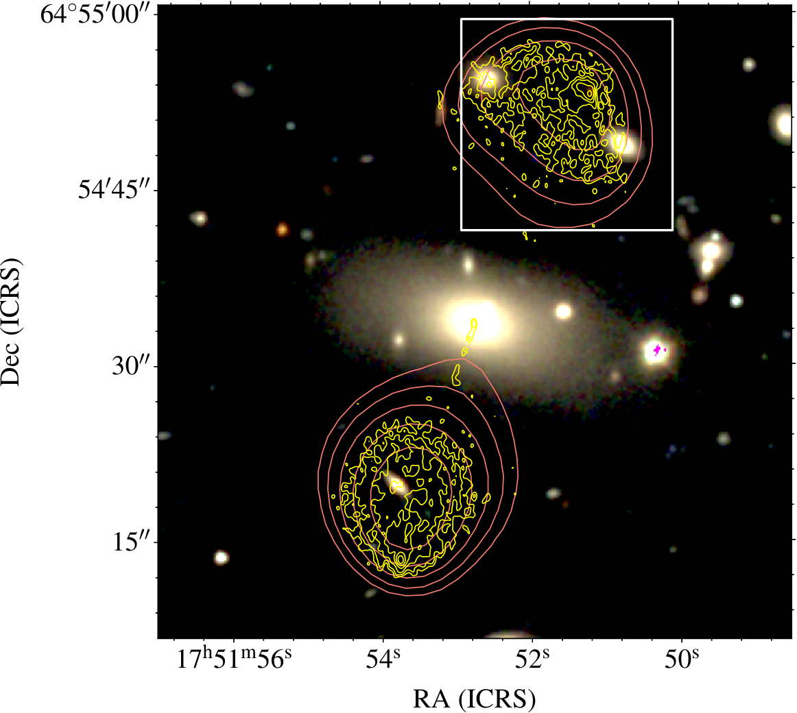
图注：两个高分辨率射电与近红外位置一致的热点。上行为红移0.294的J267.966+64.91，下行为红移1.607的重启源J270.961+66.09。底色为Euclid红外伪彩，黄色为0.5角秒、粉色为6角秒LOFAR等高线；各列展示全源、热点放大和去除等高线后的图像。
对应解读：先在全源图确认热点相对核心和射电瓣的位置，再在放大图检查紧致射电峰与红外光源重合；重启源的对应体属于内双结构。
入选理由：图像位置一致是之后把红外谱解释成热点同步辐射的前提，单靠低分辨率大轮廓覆盖一个光源并不足够。
来源与置信度：arXiv HTML；source verified；https://arxiv.org/html/2609.21930v1/J267.966+64.91-crop.png
图2（原图第2面板）
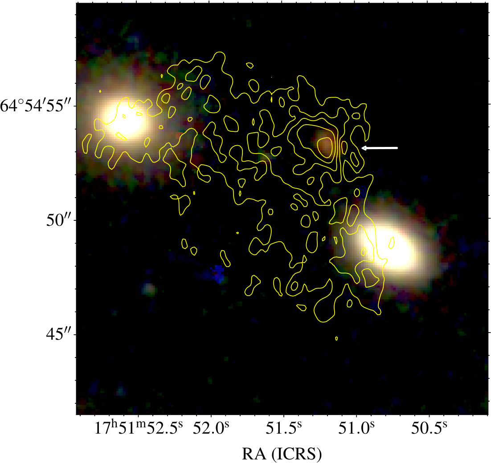
图注：两个高分辨率射电与近红外位置一致的热点。上行为红移0.294的J267.966+64.91，下行为红移1.607的重启源J270.961+66.09。底色为Euclid红外伪彩，黄色为0.5角秒、粉色为6角秒LOFAR等高线；各列展示全源、热点放大和去除等高线后的图像。
对应解读：先在全源图确认热点相对核心和射电瓣的位置，再在放大图检查紧致射电峰与红外光源重合；重启源的对应体属于内双结构。
入选理由：图像位置一致是之后把红外谱解释成热点同步辐射的前提，单靠低分辨率大轮廓覆盖一个光源并不足够。
来源与置信度：arXiv HTML；source verified；https://arxiv.org/html/2609.21930v1/J267.966+64.91_zoom-crop.png
图2（原图第3面板）
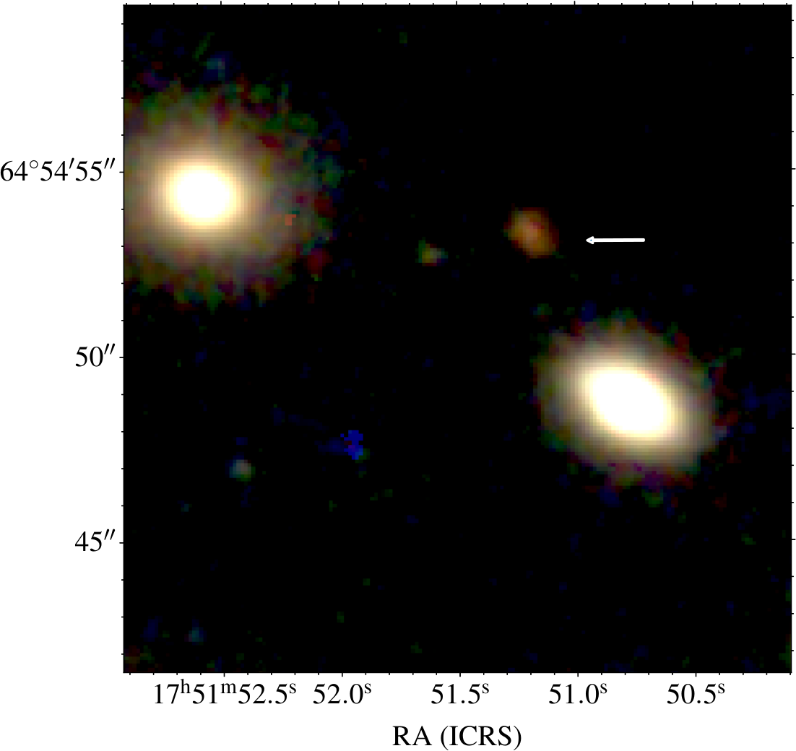
图注：两个高分辨率射电与近红外位置一致的热点。上行为红移0.294的J267.966+64.91，下行为红移1.607的重启源J270.961+66.09。底色为Euclid红外伪彩，黄色为0.5角秒、粉色为6角秒LOFAR等高线；各列展示全源、热点放大和去除等高线后的图像。
对应解读：先在全源图确认热点相对核心和射电瓣的位置，再在放大图检查紧致射电峰与红外光源重合；重启源的对应体属于内双结构。
入选理由：图像位置一致是之后把红外谱解释成热点同步辐射的前提，单靠低分辨率大轮廓覆盖一个光源并不足够。
来源与置信度：arXiv HTML；source verified；https://arxiv.org/html/2609.21930v1/J267.966+64.91_zoom_nc-crop.png
图2（原图第4面板）
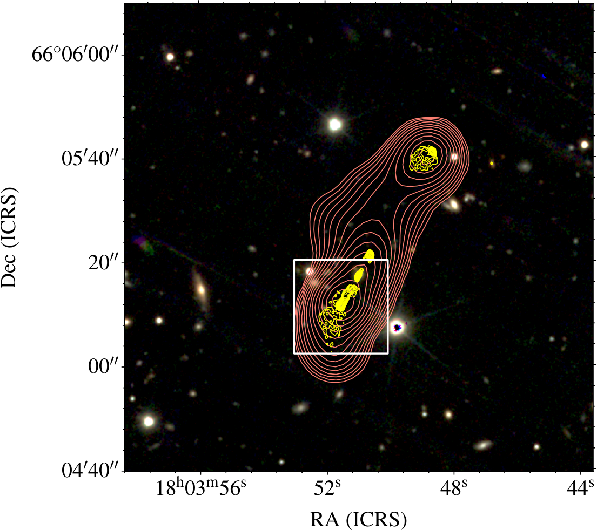
图注：两个高分辨率射电与近红外位置一致的热点。上行为红移0.294的J267.966+64.91，下行为红移1.607的重启源J270.961+66.09。底色为Euclid红外伪彩，黄色为0.5角秒、粉色为6角秒LOFAR等高线；各列展示全源、热点放大和去除等高线后的图像。
对应解读：先在全源图确认热点相对核心和射电瓣的位置，再在放大图检查紧致射电峰与红外光源重合；重启源的对应体属于内双结构。
入选理由：图像位置一致是之后把红外谱解释成热点同步辐射的前提，单靠低分辨率大轮廓覆盖一个光源并不足够。
来源与置信度：arXiv HTML；source verified；https://arxiv.org/html/2609.21930v1/J270.961+66.09-crop.png
图2（原图第5面板）
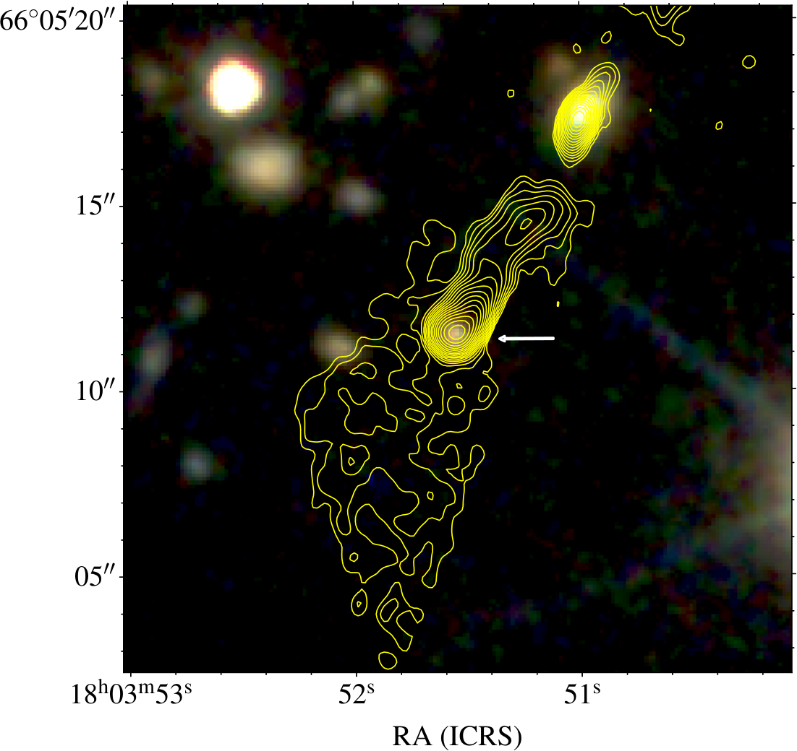
图注：两个高分辨率射电与近红外位置一致的热点。上行为红移0.294的J267.966+64.91，下行为红移1.607的重启源J270.961+66.09。底色为Euclid红外伪彩，黄色为0.5角秒、粉色为6角秒LOFAR等高线；各列展示全源、热点放大和去除等高线后的图像。
对应解读：先在全源图确认热点相对核心和射电瓣的位置，再在放大图检查紧致射电峰与红外光源重合；重启源的对应体属于内双结构。
入选理由：图像位置一致是之后把红外谱解释成热点同步辐射的前提，单靠低分辨率大轮廓覆盖一个光源并不足够。
来源与置信度：arXiv HTML；source verified；https://arxiv.org/html/2609.21930v1/J270.961+66.09_zoom-crop.png
图2（原图第6面板）
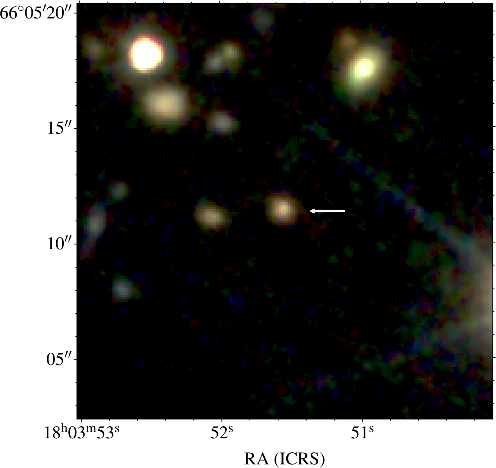
图注：两个高分辨率射电与近红外位置一致的热点。上行为红移0.294的J267.966+64.91，下行为红移1.607的重启源J270.961+66.09。底色为Euclid红外伪彩，黄色为0.5角秒、粉色为6角秒LOFAR等高线；各列展示全源、热点放大和去除等高线后的图像。
对应解读：先在全源图确认热点相对核心和射电瓣的位置，再在放大图检查紧致射电峰与红外光源重合；重启源的对应体属于内双结构。
入选理由：图像位置一致是之后把红外谱解释成热点同步辐射的前提，单靠低分辨率大轮廓覆盖一个光源并不足够。
来源与置信度：arXiv HTML；source verified；https://arxiv.org/html/2609.21930v1/J270.961+66.09_nc_zoom-crop.png
图4
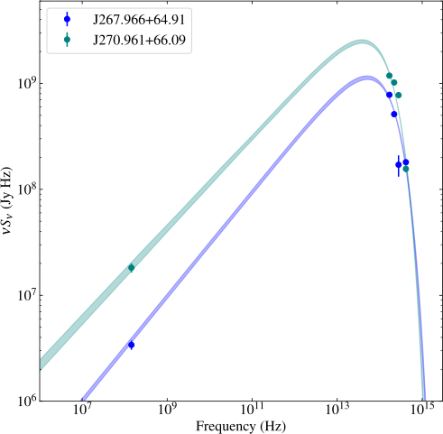
图注：两个可靠热点的射电至光学能谱及单区同步模型拟合。曲线来自后验样本，模型允许电子注入指数、折断和高能截止变化，采用接近等分配的磁场估计。
对应解读：同时看射电到近红外的总体斜率和Euclid波段内的陡降；前者限制注入谱，后者限制高能截止，不应只把所有点连成一个幂律。
入选理由：它支撑约TeV电子的条件性推断，也展示折断与截止的简并；后验曲线的范围不能代表所有磁场、几何和空间结构系统误差。
来源与置信度：arXiv HTML；source verified；https://arxiv.org/html/2609.21930v1/synchrotron_spectra_v2-crop.svg
强相关工作
论文延续经典FRII热点同步与逆康普顿研究，以及对低损失热点的解释，将Euclid巡天深度与国际LOFAR基线的定位能力结合。它并未证明一种全新的加速过程，而是扩展可研究的红移和源类型，特别是重启源内双结构。与只针对明亮3C源的历史样本相比，本样本能探索更广泛源属性，但其近红外检出选择又会偏向硬谱，比较注入指数时须校正。
同一事件 / 同类源线索：
相似工作：
（未提供）
基础理论 / 方法工作：
相反观点 / 张力线索：
（未提供）
11. Combining astrometry with pulsar timing: the first joint analysis of very low frequency gravitational waves
- 来源：arXiv / astro-ph.HE
- 链接：https://arxiv.org/abs/2609.21606v1
- 作者：Lorenzo Filipello, William Beordo, Volodymyr Akhmetov, Mariateresa Crosta, Mario Gilberto Lattanzi
- 评分：novelty 8/10，importance 8/10，relevance 8/10，final 9.00/10
- 推荐理由：天体测量与脉冲星计时联合处理系统误差和空间退化
中文题目：把Gaia自行与脉冲星双星轨道计时结合：超低频连续引力波的新上限
做了什么：作者联合Gaia CRF3类星体自行和11个近邻脉冲星双星的轨道周期变化，搜索皮赫兹至亚纳赫兹连续引力波。未发现可信信号，在4×10⁻¹⁰Hz得到95%应变上限6.4×10⁻¹¹，比单用双星数据改善约20%—30%。
为什么重要：当波周期远长于观测基线，信号表现为缓慢漂移而非可见完整振荡。横向天体测量与视线方向计时的几何互补，使这一难以覆盖的频段获得直接联合约束。
理论 / 观测 / 仪器方法价值：方法价值在于同时处理真实数据和系统项：银河引力势误差与Gaia高阶空间相关都能伪装成信号，若只联合数据而不扩充噪声模型，结果反而可能更不可靠。
为什么应该关注：应把当前上限、固定方向最佳上限和DR4预测分开阅读。较低的后验上限不是探测阈值，论文也没有发现一个新的超大质量双黑洞引力波源。
展开详细解读：文章讲解、背景、理论、重点章节、图表与相关工作
文章详细讲解
科学问题
传统计时阵列主要寻找观测基线内的相关振荡，但更慢的连续波只留下长期趋势。作者用类星体天空位置的自行与双星轨道周期导数，两种方向不同的响应共同约束一个缓慢演化的波源。
作者怎么做
类星体数据保留二维自行协方差并进行天空像素压缩；双星选择视差相对误差小于10%、距离小于1kpc的11个系统。联合贝叶斯模型同时包含引力波、距离、银河加速度误差和直到三阶的矢量球谐系统项。
关键结果
联合模型没有稳健探测，报告对数贝叶斯因子−0.42±0.03。固定频率逐点边缘化得到应变上限，4×10⁻¹⁰Hz处为6.4×10⁻¹¹；方向不同会显著改变灵敏度，不能用最佳方向代替全天约束。
局限和下一步
结果依赖银河势模型、低阶系统展开和长周期近似。Gaia仍有更高阶残余，脉冲星样本很小且不均匀；未来DR4改善来自模拟预测，白噪声随时间下降并不保证系统误差也同速减小。
关键结果是怎么做出来的
识别可测的是导数。 观测期内只见波形的一小段，响应主要随应变乘频率变化，因此频率和应变容易简并。论文在估计上限时固定频率，逐点重新采样，而不是只读一个联合后验角图。
先吸收已知系统。 双星周期变化含横向运动效应、银河相对加速度和内禀轨道衰减；类星体自行含参考系旋转、太阳系加速及空间相关。省略这些项会把未建模残差错误分配给引力波。
用不同证据核验探测。 单独Gaia的嵌套采样曾给出微弱偏好，但密度比复核与系统检查不支持稳健信号。联合分析同样未探测，因此科学结论应是上限而不是“发现候选波源”。
区分改善与预测。 现有联合约束较双星单独结果改善约20%—30%。DR4的更好上限与注入恢复阈值来自模拟，作者也明确提醒系统底噪和新增弱源可能减少理想收益。
展开背景、理论、公式、模型、章节和图表导读
背景知识
皮赫兹窗口。 极大质量双黑洞在缓慢旋近阶段可产生周期长于现有观测基线的连续波。这里不是常见的纳赫兹随机背景探测，而是针对一个具有相干天空响应的连续波模型。
脉冲星的时钟。 双星轨道周期非常稳定，但观测周期导数并非全是引力波导致。横向运动产生表观径向加速，银河势产生视线差分加速度，紧双星自身也会因引力波损失能量。
类星体的参考网格。 遥远类星体的真实自行通常很小，因此大尺度相关表观运动可以约束外部扰动。不过喷流结构、测量误差与仪器相关使单个非零自行不能直接解释成引力波。
协方差的作用。 赤经与赤纬自行误差可能相关，误差椭圆方向也随位置变化。忽略非对角项会改变天空方向偏好并误估不确定性，联合分析必须保留这些测量结构。
基础理论 / 方法脉络
长周期展开。 当角频率乘观测时间远小于一，正弦信号可展开为常数与线性项。常数位移通常被位置参数吸收，剩余的一阶项表现为自行或表观加速度，灵敏度因此不同于完整周期搜索。
几何互补。 类星体的横向偏移与双星视线方向响应具有不同天线方向图。联合能够缓解部分方向退化，但实际收益仍取决于两类数据质量，而不是简单把对象数量相加。
空间系统展开。 旋转和太阳系加速主要表现为偶极，连续波包含特殊相关的四极与更高阶结构。加入一般球谐系统项会降低虚假信号，但同时也可能与真实波响应竞争，需要注入验证。
模型比较和上限。 贝叶斯证据衡量加信号是否值得增加参数；后验分位给出条件于先验和噪声模型的上限。这两个问题不同，不能从一条较低上限曲线反推出已经具备相同幅度的高置信探测能力。
公式与推导
下面用低频展开连接两个可观测量。所有上限都依赖指定波形、先验和系统模型；原文连续波分析的有效低频端还受相干性条件限制，并非无限延伸到零频。
长周期近似为：
由此导数幅度约为ωh₀，说明应变和频率的简并来源。
双星周期变化可组织为：
这里a_GW沿用分数周期变化率的量纲，不能误当成未除以光速的普通加速度；距离同时进入多项。
自行模型可写为：
类星体内禀项在理想远源近似下很小，但不代表真实目录完全没有天体物理或测量污染。
二维测量的高斯似然为：
C保留赤经与赤纬相关，而系统性的跨天空相关另外通过矢量球谐参数处理。
独立数据在共享波参数下组合：
距离与系统参数需要边缘化，不能先把它们固定在最优值再宣称得到同等保守的上限。
固定频率后，95%应变上限定义为：
原文当前参考点为6.4×10⁻¹¹；未来自行误差按T⁻³ᐟ²下降只是白噪声主导近似，不能忽略系统误差下限。
模型拟合 / 应用方法
预处理。 Gaia使用CRF3及其自行协方差，进行天空像素压缩以控制计算量；双星以可靠视差和近距离筛选。原文关于RUWE筛选的文字表述需结合实现核对，因此这里不擅自把它重写成相反的不等号。
系统参数。 双星距离作为自由参数，银河势参数的不确定性用蒙特卡洛传播到残差方差；Gaia加入偶极、四极及八极系统。用独立VLBI信息设偶极参考，避免重复使用同一Gaia数据作为先验。
统计步骤。 先用嵌套采样和密度比方法比较有无信号，再在各固定频率上用MCMC估计95%上限。天空重排用于检查假阳性，模拟注入用于评估恢复能力，两者不能替代对遗漏系统的进一步调查。
预测检查。 DR4模拟采用更长基线带来的测量改善，并在不同天空方向注入连续波。预测较低上限和较高可靠探测幅度须分别报告，真实DR4的系统结构仍可能偏离模拟假设。
重点章节 / 结果段落怎么读
第2节定义两种长期响应及非引力波贡献，第3节解释距离和协方差选择，第4节建立联合似然与球谐系统。第5节应连读模型证据、逐频率上限和方向灵敏度，图3与图4对应这两个不同结果。第6节全部是DR4预测。附录A讨论银河势误差，附录C展示遗漏高阶系统如何制造应变偏好，是判断结果可信度的重要部分。
固定频率扫描与未知频率的联合后验应分别解读。
建议重点查看的图表
图3： 在同一频率比较曲线高度，较低表示约束更强；同时辨认实测与预测线型，不能把DR4点线当作已经取得的数据结果。 这张图直接量化当前约20%—30%的联合改善，也显示低频响应随频率变化，不能只给一个脱离频率的应变数字。
图4： 沿天空比较颜色对应的上限，最敏感区域与最弱区域相差明显；最佳方向约2.94×10⁻¹¹不能代替对未知方向边缘化的总体上限。 它说明为何新增脉冲星的位置也很重要，而不只是总数量增加；不均匀天空覆盖会保留方向相关的探测盲区。
关键图表逐图导读
图3： 在同一频率比较曲线高度，较低表示约束更强；同时辨认实测与预测线型，不能把DR4点线当作已经取得的数据结果。 这张图直接量化当前约20%—30%的联合改善，也显示低频响应随频率变化，不能只给一个脱离频率的应变数字。
图4： 沿天空比较颜色对应的上限，最敏感区域与最弱区域相差明显；最佳方向约2.94×10⁻¹¹不能代替对未知方向边缘化的总体上限。 它说明为何新增脉冲星的位置也很重要，而不只是总数量增加；不均匀天空覆盖会保留方向相关的探测盲区。
论文原图 / 可嵌入图片
图3
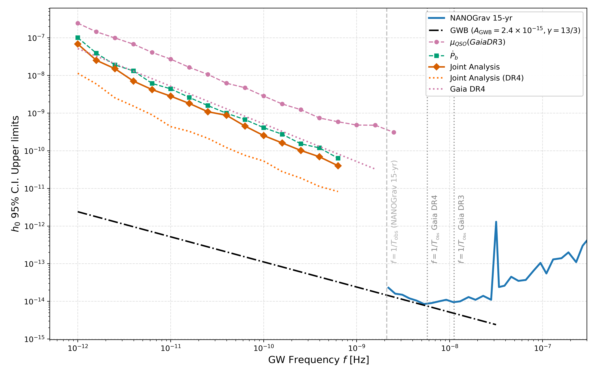
图注：不同数据组合的连续引力波应变上限。虚线表示两类数据各自的分析，橙色实线表示联合结果，点线表示采用预期Gaia DR4误差的模拟预测。
对应解读：在同一频率比较曲线高度，较低表示约束更强；同时辨认实测与预测线型，不能把DR4点线当作已经取得的数据结果。
入选理由：这张图直接量化当前约20%—30%的联合改善，也显示低频响应随频率变化，不能只给一个脱离频率的应变数字。
来源与置信度：arXiv HTML；source verified；https://arxiv.org/html/2609.21606v1/Plots/sensitivity_curve.png
图4
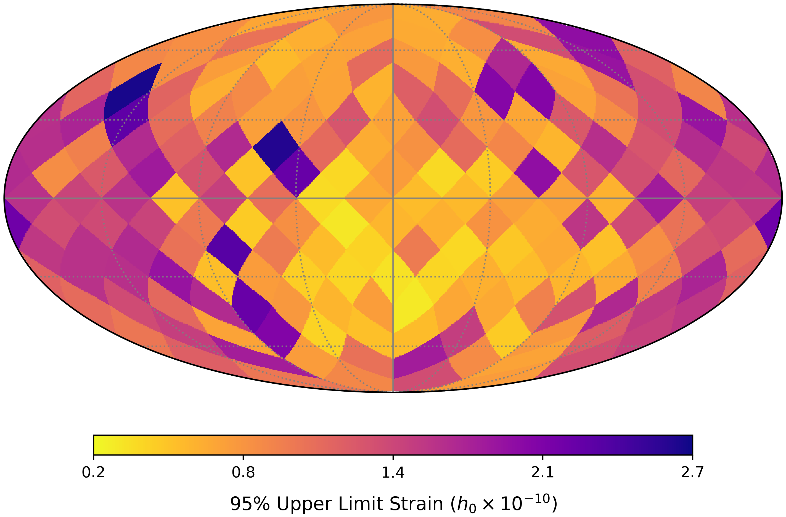
图注：固定频率2.5×10⁻¹⁰Hz时联合数据的方向灵敏度图。不同天空方向的95%应变上限受脉冲星天线方向图与类星体空间分布共同影响。
对应解读：沿天空比较颜色对应的上限，最敏感区域与最弱区域相差明显；最佳方向约2.94×10⁻¹¹不能代替对未知方向边缘化的总体上限。
入选理由：它说明为何新增脉冲星的位置也很重要，而不只是总数量增加；不均匀天空覆盖会保留方向相关的探测盲区。
来源与置信度：arXiv HTML；source verified；https://arxiv.org/html/2609.21606v1/Plots/sky_directional_sensitivity.png
强相关工作
该工作将既有的类星体自行引力波方法与双星轨道长期加速度约束结合，区别于利用计时残差完整相关曲线搜索随机背景的标准PTA分析。它也借鉴矢量球谐参考系分析来控制Gaia空间系统。未来可加入周期二阶导数或逐历元天体测量以减弱应变频率简并，但当前论文的实证结果仍限于指定连续波模型和真实目录的联合上限。
随机背景扩展是后续方向，不能混作本次已经实现的检测。
同一事件 / 同类源线索：
相似工作：
（未提供）
基础理论 / 方法工作：
相反观点 / 张力线索：
（未提供）
12. CRAFT HTR2: Polarimetry of 64 non-repeating fast radio bursts from the updated CRAFT catalogue
- 来源：arXiv / astro-ph.HE
- 链接：https://arxiv.org/abs/2609.21177v1
- 作者：T. Dial, A. T. Deller, Marcin Glowacki, A. Bera, R. M. Shannon, Clancy W. James, Joscha N. Jahns-Schindler, Ziteng Wang
- 评分：novelty 8/10，importance 8/10，relevance 8/10，final 9.00/10
- 推荐理由：64个非重复FRB偏振样本约束环境及频率选择偏差
中文题目：ASKAP高时间分辨率FRB偏振样本扩至64例：宽而暗的暴更容易低偏振
做了什么：CRAFT更新64个表观非重复FRB的偏振统计，新样本中7例未检出偏振。最宽的暴倾向低偏振，最亮的暴倾向高线偏振；一例频率依赖退偏振可由约5.2rad/m²的RM弥散解释，但总体关联仍需更大样本验证。
为什么重要：CRACO对较宽、较暗事件更敏感，使此前较少出现的低偏振事件进入样本。偏振分布因此既包含发射与传播物理，也包含搜索时间分辨率和灵敏度的选择作用。
理论 / 观测 / 仪器方法价值：论文提供完整电压数据到偏振和能量统计的链条，并把直接测得的退偏振、偏振未检出的上限与基于传播模型的推断分开，适合评估FRB环境证据的强弱。
为什么应该关注：读者应关注宽度并非去散射后的本征时宽、部分红移来自DM估计，以及低偏振不等于源本来没有偏振。这些限制决定能否把趋势归因于致密磁化环境。
展开详细解读：文章讲解、背景、理论、重点章节、图表与相关工作
文章详细讲解
科学问题
FRB偏振可反映磁场几何与传播介质，但早期样本偏向窄而亮事件。ASKAP的新相干成像搜索增加了较宽、较暗暴，作者希望检验偏振是否随宽度、亮度、光度或红移变化。
作者怎么做
电压数据经相干去色散、波束形成和可用的偏振定标生成Stokes动态谱，随后估计RM并去旋转。研究把此前34例与新增30例表观非重复暴合并，对分布作删失统计和分组比较，并单独拟合频率依赖退偏振。
关键结果
新增30例中7例未检出偏振，典型6σ偏振比例上限37%。宽度和光度极端区域呈现低偏振与高偏振的分化；FRB20251024B拟合本征偏振0.93±0.05、RM弥散5.2±0.3rad/m²，优于常数偏振模型。
局限和下一步
关联仍具有探索性，光度需要可靠红移且受样本筛选影响，7个未检出偏振事件中只有1个有光谱红移。宽度包含传播展宽，部分事件没有完整偏振定标；RM弥散解释也依赖本征偏振与屏幕模型，不能排除发射机制变化。
关键结果是怎么做出来的
先理解新样本为何不同。 CRACO灵敏度提高而搜索时间采样较粗，更容易加入较宽较暗事件。因此新出现低偏振族群可能揭示旧样本遗漏部分，而非整个FRB宇宙突然变化。
再区分未检出与零偏振。 扩展RM搜索并提高频率分辨率仍无显著峰的7例，被记为偏振上限。它们可能本征偏振低，也可能经历强传播退偏振，不能以标签直接判定机制。
看直接频谱检验。 对FRB20251024B，随频率下降偏振减少，修正Burn定律给出χ²=5.65、7自由度，常数模型χ²=44.7、8自由度。这个对象的证据比仅由未检出反推环境更直接。
谨慎解释群体差异。 ASKAP与CHIME的河外RM分布中位数约120与54rad/m²，合并高频样本比较得到一定差异，但频率、选择与红移仍要共同考虑。它不是已经证明两种独立FRB起源的结果。
展开背景、理论、公式、模型、章节和图表导读
背景知识
Stokes参数。 I表示总强度，Q和U描述线偏振，V描述圆偏振。线偏振强度由Q与U平方和开根得到，因此噪声会产生正偏，低信噪比时必须做去偏并给出上限。
法拉第旋转。 磁化等离子体使线偏振方向随波长平方旋转，RM量度沿视线电子密度与磁场的加权积分。一个较大平均RM并不必然产生强退偏振，真正相关的还包括路径间或频率通道内的变化。
多路径退偏振。 若不同散射路径经历不同RM，各路径偏振向量相加后部分抵消，长波通常更明显。观测不到偏振仍可能是高本征偏振经过复杂传播后的结果。
宽度与光度。 本文w95包含95%流量，不是通过散射核反卷积得到的本征时宽。光度又用流量除以时宽，因此讨论二者与偏振的关联时必须注意共享变量和检测选择。
基础理论 / 方法脉络
去色散与去旋转。 色散首先影响不同频率的到达时刻，法拉第旋转则改变Q/U方向。两者都要校正，但作用不同；在未去旋转前直接宽带相加会人为抹去线偏振。
RM与其弥散不同。 平均RM决定整体旋转斜率，RM弥散决定不同路径的去相干。强平均旋转但均匀的屏幕可以保持高偏振，而较小平均值也可能伴随显著弥散。
Burn型近似。 简化外屏模型给出偏振随波长四次方的指数衰减。论文使用这一关系检验具体事件，但复杂内禀谱变化、多屏幕与非高斯RM分布不一定服从同样规律。
删失与分组。 偏振上限应作为删失数据处理，而不是替换成零。带红移的分组相关分析又有额外筛选，不能把64例目录、32例关联子样本和7例未检出组的统计量混在一起。
公式与推导
以下连接偏振测量、传播拟合和光度推断。符号与Stokes坐标的正负约定需保持一致；这里只写不依赖具体仪器馈源方向的物理关系。
线偏振幅度及位置角为：
实际估计要扣除噪声正偏，atan2用于保留象限，不能只用普通反正切丢失方向信息。
法拉第旋转满足：
对Q+iU去旋转后才能跨频率叠加；有限通道宽度仍可能造成残余去相干，需要必要时重新细分原始电压数据。
总偏振比例的统计定义为：
论文先按时间积分并对各量去偏，不能把逐样本噪声很大的比值简单算术平均。
用于解释频率退偏振的关系是：
在外屏及相应RM分布假设下，σ_RM控制长波衰减；拟合得到的本征p与σ_RM存在关联，应一起报告。
若只给出偏振上限并假设本征完全偏振，可反推条件性下限：
这不是直接测得环境弥散，若本征p小于一，下限会改变。
河外旋转与宇宙时宽校正分别为：
后式只去宇宙膨胀，不去散射展宽；光度估计还需距离、波束响应和带宽选择，DM推断的红移不能等同光谱红移精度。
模型拟合 / 应用方法
数据质量。 新检测事件并非全部进入统计：重复源、缺电压与只有单个偏振通道的记录分别处理，最终新增30例。默认动态谱为1微秒、1MHz，展示时另行降采样，不能把图中像素当成原始分辨率。
参数估计。 采用结构最大化DM、RM合成和去旋转后Stokes统计。无显著RM时扩展搜索范围并必要时细分到更窄通道；银河RM从外部图减去，并以另一张图复查样本比较的稳健性。
关联子样本。 宽度、流量、光度和红移比较使用经过红移与脉冲结构筛选的32例，按中位数分组做Anderson–Darling检验。流量或光度的一般分组差异并未取得强统计显著性，极端趋势需扩大样本。
退偏振拟合。 FRB20251024B取前4.4ms并合并至32MHz，给本征偏振0—1及RM弥散0—100的先验，再与常数模型比较。对未检出组的弥散下限额外假设本征p=1，报告时必须显式保留条件。
重点章节 / 结果段落怎么读
第2节详细列出CRACO选择、电压处理、定标例外、RM和偏振去偏；第3.1节讨论带红移子样本的相关性，第3.2节讨论未检出组，随后频率退偏振和跨望远镜RM比较给出不同层次的环境证据。图6必须区分实心和空心方块的红移来源，图7是单个事件的定量拟合。附录表列出上限和定标信息，复用目录时不应只读总样本量。
偏振未检出组的RM弥散下限还附带本征完全偏振假设。
建议重点查看的图表
图6： 先检查宽而低光度区域的偏振上限，再比较高光度窄暴；空心方块的位置还有DM到红移转换的不确定性，不能视作同等精度的距离测量。 它展示最极端事件的趋势，也暴露样本选择和共享时宽变量的影响，因此适合提出假说，而非单图证明发射或传播机制。
图7： 沿频率比较测量点与红线，关注低频下降而非只看平均偏振；这一形状检验的是不同频率间的传播效应。 相较直接将未检出解释成强退偏振，此图有可拟合的频率曲线，并可与常数偏振模型比较，因此证据更直接但仍依赖模型条件。
关键图表逐图导读
图6： 先检查宽而低光度区域的偏振上限，再比较高光度窄暴；空心方块的位置还有DM到红移转换的不确定性，不能视作同等精度的距离测量。 它展示最极端事件的趋势，也暴露样本选择和共享时宽变量的影响，因此适合提出假说，而非单图证明发射或传播机制。
图7： 沿频率比较测量点与红线，关注低频下降而非只看平均偏振；这一形状检验的是不同频率间的传播效应。 相较直接将未检出解释成强退偏振，此图有可拟合的频率曲线，并可与常数偏振模型比较，因此证据更直接但仍依赖模型条件。
论文原图 / 可嵌入图片
图6（原图第1面板）
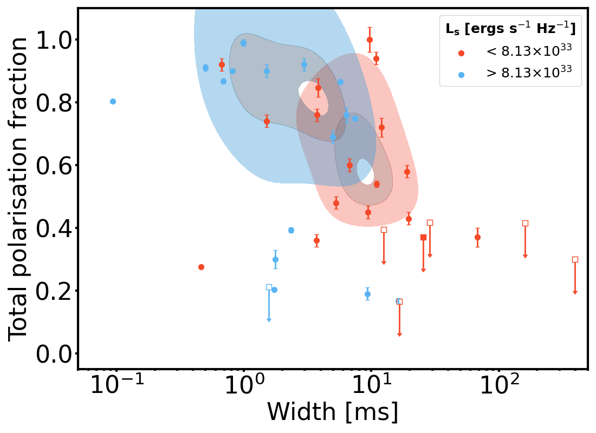
图注：ASKAP暴的总偏振比例、宽度和谱光度分布。等高线为68%、90%、99%区间；圆点为检出偏振事件，方块为未检出事件。实心方块有光谱红移，六个空心方块采用河外DM估计红移。
对应解读：先检查宽而低光度区域的偏振上限，再比较高光度窄暴；空心方块的位置还有DM到红移转换的不确定性，不能视作同等精度的距离测量。
入选理由：它展示最极端事件的趋势，也暴露样本选择和共享时宽变量的影响，因此适合提出假说，而非单图证明发射或传播机制。
来源与置信度：arXiv HTML；source verified；https://arxiv.org/html/2609.21177v1/Figures/pVwidth.png
图6（原图第2面板）
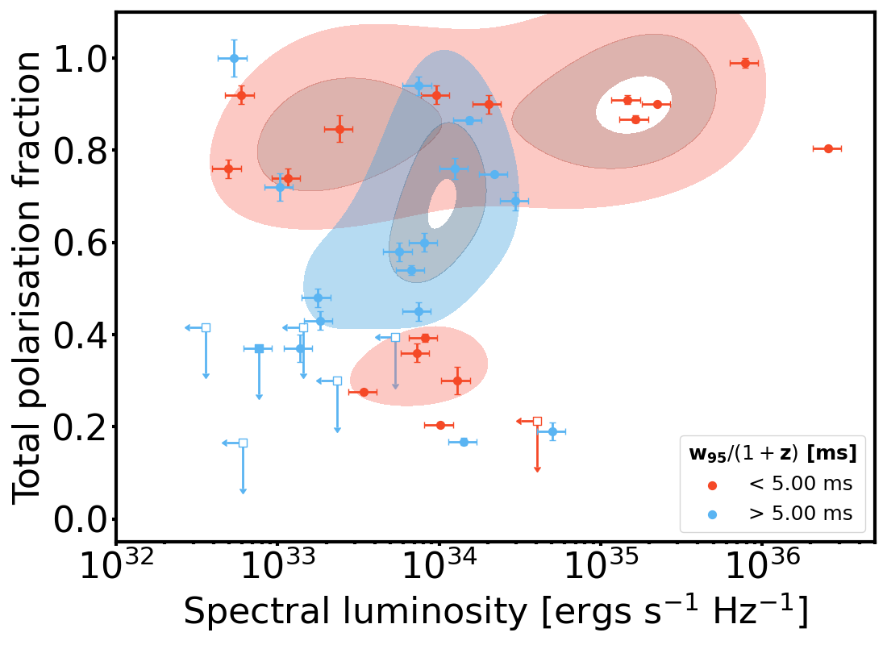
图注：ASKAP暴的总偏振比例、宽度和谱光度分布。等高线为68%、90%、99%区间；圆点为检出偏振事件，方块为未检出事件。实心方块有光谱红移，六个空心方块采用河外DM估计红移。
对应解读：先检查宽而低光度区域的偏振上限，再比较高光度窄暴；空心方块的位置还有DM到红移转换的不确定性，不能视作同等精度的距离测量。
入选理由：它展示最极端事件的趋势，也暴露样本选择和共享时宽变量的影响，因此适合提出假说，而非单图证明发射或传播机制。
来源与置信度：arXiv HTML；source verified；https://arxiv.org/html/2609.21177v1/Figures/pVspeclum.png
图7
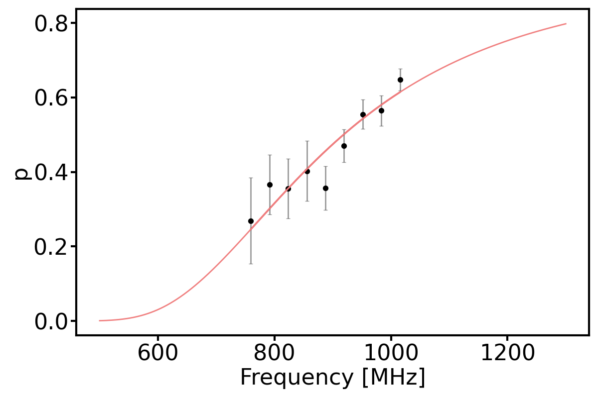
图注：FRB20251024B的频率退偏振拟合。红线为修正Burn模型，得到本征偏振比例0.93±0.05、RM弥散5.2±0.3rad/m²；低频偏振减少明显。
对应解读：沿频率比较测量点与红线，关注低频下降而非只看平均偏振；这一形状检验的是不同频率间的传播效应。
入选理由：相较直接将未检出解释成强退偏振，此图有可拟合的频率曲线，并可与常数偏振模型比较，因此证据更直接但仍依赖模型条件。
来源与置信度：arXiv HTML；source verified；https://arxiv.org/html/2609.21177v1/Figures/251024depol.png
强相关工作
这项工作延续CRAFT HTR1的高时间分辨率偏振分析，并与CHIME、DSA样本比较；新增CRACO事件使低亮度、宽事件的选择覆盖有所改善。修正Burn模型是已有磁化散射屏的解释工具，并非只适用于FRB。与重复暴中复杂环境的研究相比，本文提示表观非重复暴也可能出现类似退偏振，但目前不能把“尚未看到重复”当作独立物理种群的确定标签。
同一事件 / 同类源线索：
相似工作：
（未提供）
基础理论 / 方法工作：
相反观点 / 张力线索：
（未提供）
13. X-ray polarization of the Compton-thin Seyfert galaxy NGC 5506 with IXPE
- 来源：arXiv / astro-ph.HE
- 链接：https://arxiv.org/abs/2609.21711v1
- 作者：Daniele Tagliacozzo, Alessandro Leonardo Lai, Andrea Gnarini, Giorgio Matt, Stefano Bianchi, Francesco Ursini, Andrea Marinucci, Alessia Tortosa
- 评分：novelty 7/10，importance 8/10，relevance 8/10，final 8.70/10
- 推荐理由：IXPE偏振上限约束冕几何，需区分总辐射与冕偏振
中文题目：NGC5506的X射线偏振上限：低偏振为何不能唯一确定日冕形状
做了什么：IXPE对NGC5506累计975ks观测给出2—8keV总偏振99%上限3.1%。联合NuSTAR与XMM的光谱偏振分解表明，反射的偏振与方向假设可大幅改变日冕约束；在特定无偏振反射和径向延展模型下，倾角被限制在约40度以内。
为什么重要：低总偏振既可能来自近轴对称几何，也可能来自不同辐射成分的偏振抵消。把观测上限直接转换成唯一日冕形状，会忽略反射与连续谱在Stokes空间中的矢量叠加。
理论 / 观测 / 仪器方法价值：论文展示如何由宽带光谱约束各成分，再讨论偏振信息增量，尤其有助于理解非检出仍能提供条件性几何约束，以及为什么偏振角未确定时不能作强排除。
为什么应该关注：如果研究黑洞日冕，应同时核对总通量上限与纯连续谱上限的分母，以及40度结论依赖的反射假设。更硬X射线的反射隆起偏振可能是解除简并的关键观测。
展开详细解读：文章讲解、背景、理论、重点章节、图表与相关工作
文章详细讲解
科学问题
日冕把盘的低能光子康普顿化到X射线，不同几何能给出相似能谱而不同偏振。NGC5506亮且受中等吸收，作者希望通过长曝光偏振观测与同步宽带光谱区分日冕结构。
作者怎么做
先仅用IXPE的I、Q、U拟合简单吸收幂律，再加入NuSTAR和XMM分离热康普顿连续谱、远处冷反射、相对论反射与窄线。之后对各成分设置不同偏振假设，并以MONK模拟球形灯柱、锥形外流、平板和楔形日冕。
关键结果
总偏振只得到3.1%的99%上限，偏振角也未获得显著约束。反射无偏振时纯日冕上限为4.0%；反射与日冕同向会收紧限制，正交时可相互抵消，容许明显更高的日冕偏振。
局限和下一步
平板或楔形模型的倾角小于约40度依赖特定反射和方向假设，不能据此排除所有灯柱模型。观测只部分同时，模拟采用固定温度、自旋及几何参数；完整联合偏振分解目前仍存在明显简并。
关键结果是怎么做出来的
先读最少假设的结果。 IXPE简单模型报告总2—8keV偏振上限，而不是日冕本征偏振。形式最优值约1%并不代表显著检测，99%时方向没有可靠约束。
再分解光谱。 宽带数据要求冷反射和相对论反射，不可全部归给主连续谱。若这些成分不偏振，它们稀释日冕信号，所以相同总上限对应更宽松的日冕上限。
检查方向抵消。 偏振角相差90度时，Stokes向量相反，较强日冕与较强反射也可以产生很小总偏振。仅测总幅度不足以区分这一情形和各成分本来都弱偏振。
最后作条件性几何比较。 给定无偏振反射和预计的平行或垂直方向后，将上限与模拟倾角曲线相交。平板、楔形限制较强，灯柱本来就弱偏振，当前数据无法给出同样倾角限制。
展开背景、理论、公式、模型、章节和图表导读
背景知识
日冕的能谱退化。 高温电子的温度和光深共同决定康普顿谱，不同空间形状可以调整参数产生相似谱指数。偏振提供方向和散射几何信息，但它也混合多种辐射成分。
反射成分。 主辐射照亮吸积盘与更远物质，产生铁线和康普顿隆起。盘附近还受相对论能移、光线弯曲和偏振输运影响；即使总反射通量较小，偏振贡献也可能不可忽略。
上限的意义。 未显著检出偏振表示一系列小幅度与方向都与数据相容，并非偏振严格为零。报告置信水平、能段和模型比单报百分比更重要，尤其在比较不同源和仪器时。
轴向参照。 窄线区双锥方向常用作盘轴的代理，但它可能与最内盘不同。本文以约22度位置角作参照是物理假设，不能当作直接测得的最内日冕偏振方向。
基础理论 / 方法脉络
对称性。 轴对称系统正面看时，不同方位散射偏振容易抵消；倾斜观察可打破投影对称。因此同一个几何的偏振比例通常随倾角变化，低偏振未必要求球形。
矢量混合。 总I、Q、U逐成分相加，偏振比例则在相加后取模再除总I。两个高偏振成分可能抵消，故不能对各百分比按通量作普通标量平均。
反射方向。 不同能段、照明位置和传播效应可改变反射偏振。论文用固定同向或正交作受控示例，真实能量依赖可能更复杂，当前数据不足以同时自由确定全部参数。
蒙特卡洛比较。 MONK追踪Kerr时空中的散射与偏振，将几何输入转成能谱和方向预测。模拟曲线是固定参数下的前向计算，不是对全部几何参数完成贝叶斯边缘化后的唯一模型后验。
公式与推导
以下用Stokes代数解释为何反射假设改变日冕约束。这些关系本身是一般的，但将它们转换成倾角须额外指定辐射转移和几何模型。
单个成分的线偏振可写为：
角度出现两倍，表示线偏振方向转180度物理等价。
总信号为：
因而必须先加向量再取模，而不是先加偏振比例。
若反射与谱线无偏振，仅连续谱偏振：
连续谱只占总通量的一部分，因此总上限3.1%对应的连续谱上限可放宽至原文4.0%，二者不矛盾。
若连续谱与反射方向正交：
两项可以抵消，所以很低总偏振不能排除较高本征日冕偏振；同向时分子则相加。
热康普顿谱的教学尺度为：
该非相对论近似只说明温度与光深共同作用，100keV情形和不同几何需要完整转移，不能由这个式子直接求精确偏振。
条件性倾角约束来自：
论文约40度限制对应特定平板或楔形与反射设定；允许反射自由偏振后，不能将同一个不等式的右端保持不变。
模型拟合 / 应用方法
观测输入。 IXPE有效曝光975ks，NuSTAR52ks、XMM37ks，只有部分同时。各探测器的I、Q、U独立拟合，展示图才合并；能段、背景和交叉定标均纳入处理。
光谱建立。 模型逐步加入冷反射、相对论反射及窄线，主连续谱改用热康普顿化。另一种环状再处理模型检验支持冷反射存在，但不同模型拟合相近并不意味着其偏振参数已确定。
偏振情景。 先设反射无偏振，再固定反射比例15%、20%、30%，分别测试与主成分同向或正交；还测试弱日冕、高反射偏振情形。不同设置获得相近拟合统计，显示现有分解非唯一。
模拟设定。 MONK采用自旋0.998、温度100keV和目标谱指数1.9，四种几何分别调整光深。将模拟直接与条件性上限比较，而不是把模拟固定参数误称为由本次数据全部测得。
重点章节 / 结果段落怎么读
第3.1节给出IXPE总偏振上限，第3.2节建立宽带光谱成分，第3.3节是理解日冕与反射简并的核心。图2必须同时读置信轮廓和偏振角未约束的事实，图3展示反射加入后的残差改善。第4节与图4给出固定几何模拟及条件性倾角限制。结论明确表示现有数据不能稳健排除特定日冕构型，因此正文摘要中的40度必须保留假设。
不同反射方向带来的偏振抵消是这一限制的主要来源。
建议重点查看的图表
图2： 看99%轮廓是否仍允许低偏振和广泛角度；图上某个最优角度不等于方向显著检出，22度参照也不是拟合强制得到的测量结果。 这张图界定最直接观测证据：总偏振受限而方向不确定，为后续任何几何推断设定实际信息边界。
图4： 横轴是倾角余弦，靠近1为正面看。将各几何与适用的方向上限比较，不能对所有曲线使用同一条限制，也不能忽略反射前提。 它显示径向延展模型为何倾向较小倾角，同时解释本来弱偏振的灯柱为何仍可成立；这是一组条件性约束而非唯一几何鉴定。
关键图表逐图导读
图2： 看99%轮廓是否仍允许低偏振和广泛角度；图上某个最优角度不等于方向显著检出，22度参照也不是拟合强制得到的测量结果。 这张图界定最直接观测证据：总偏振受限而方向不确定，为后续任何几何推断设定实际信息边界。
图4： 横轴是倾角余弦，靠近1为正面看。将各几何与适用的方向上限比较，不能对所有曲线使用同一条限制，也不能忽略反射前提。 它显示径向延展模型为何倾向较小倾角，同时解释本来弱偏振的灯柱为何仍可成立；这是一组条件性约束而非唯一几何鉴定。
论文原图 / 可嵌入图片
图2（原图第1面板）
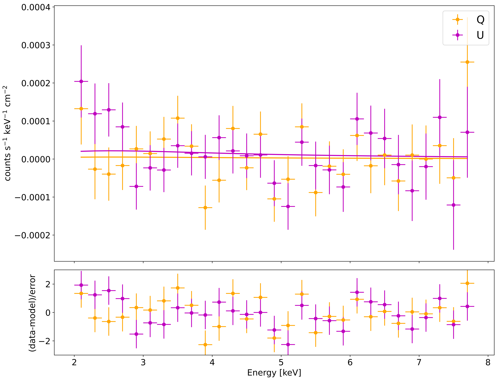
图注：左图为合并展示的IXPE Q、U谱及拟合残差；右图为2—8keV偏振比例与位置角的68%、90%、99%二维置信轮廓。黑线标北向及约22度的窄线区方向。
对应解读：看99%轮廓是否仍允许低偏振和广泛角度；图上某个最优角度不等于方向显著检出，22度参照也不是拟合强制得到的测量结果。
入选理由：这张图界定最直接观测证据：总偏振受限而方向不确定，为后续任何几何推断设定实际信息边界。
来源与置信度：arXiv HTML；source verified；https://arxiv.org/html/2609.21711v1/Figures/stokes.png
图2（原图第2面板）
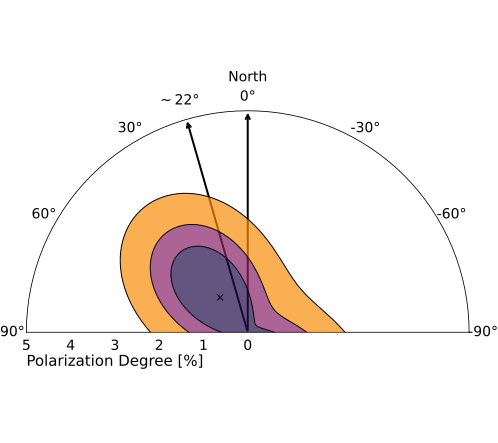
图注：左图为合并展示的IXPE Q、U谱及拟合残差；右图为2—8keV偏振比例与位置角的68%、90%、99%二维置信轮廓。黑线标北向及约22度的窄线区方向。
对应解读：看99%轮廓是否仍允许低偏振和广泛角度；图上某个最优角度不等于方向显著检出，22度参照也不是拟合强制得到的测量结果。
入选理由：这张图界定最直接观测证据：总偏振受限而方向不确定，为后续任何几何推断设定实际信息边界。
来源与置信度：arXiv HTML；source verified；https://arxiv.org/html/2609.21711v1/5506_ixpe.svg
图4
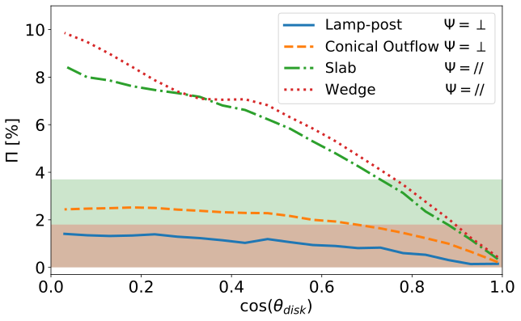
图注：MONK模拟的偏振比例随盘倾角余弦变化。蓝、橙、绿、红曲线依次为球形灯柱、锥形外流、平板和楔形；阴影表示无偏振反射下、主偏振平行或垂直盘轴时的不同上限。
对应解读：横轴是倾角余弦，靠近1为正面看。将各几何与适用的方向上限比较，不能对所有曲线使用同一条限制，也不能忽略反射前提。
入选理由：它显示径向延展模型为何倾向较小倾角，同时解释本来弱偏振的灯柱为何仍可成立；这是一组条件性约束而非唯一几何鉴定。
来源与置信度：arXiv HTML；source verified；https://arxiv.org/html/2609.21711v1/PD_5506_paper.svg
强相关工作
论文联系其他Seyfert的IXPE结果与日冕康普顿散射模型，特别比较径向延展日冕和由强反射产生偏振的解释。已有NGC4151等源的偏振方向为平板或楔形提供线索，却不能直接成为NGC5506的观测结论。相对论反射偏振模型显示灯柱总信号也可复杂；未来覆盖康普顿隆起的硬X射线偏振有望分离主辐射与反射，而不是仅延长相同能段曝光。
同一事件 / 同类源线索：
相似工作：
（未提供）
基础理论 / 方法工作：
相反观点 / 张力线索：
（未提供）
14. Gamma-ray Quasi-periodic Oscillations in the Changing Look Blazar B2 1420+326 (OQ 334)
- 来源：arXiv / astro-ph.HE
- 链接：https://arxiv.org/abs/2609.21411v1
- 作者：Sunanda, Shubham Kishore, Alok C. Gupta
- 评分：novelty 7/10，importance 7/10，relevance 9/10，final 8.70/10
- 推荐理由：与伽马时域和周期研究直接相关，必须核验红噪声与试验因子
中文题目：变脸耀变体OQ334出现约10—13天伽马准周期候选：信号与选择效应并读
做了什么：作者在B21420+326（OQ334）2026年Fermi-LAT光变中找到约9.8天和12.8天的短暂准周期特征，耀发前还有约12.9天阻尼振荡候选。多种时间序列方法支持相近尺度，但分段选择、去趋势与红噪声建模仍决定可信程度。
为什么重要：短暂伽马重复结构可能追踪喷流几何、磁重联或扭曲不稳定性。它与稳定长期周期不同，不能仅根据十天尺度就宣称发现双黑洞或稳定轨道时钟。
理论 / 观测 / 仪器方法价值：本文适合学习小波、周期图和相位离散法如何互补，也暴露数据驱动选时段后的显著性问题。不同算法分析同一数据并不等同得到多份独立实验确认。
为什么应该关注：应特别检查第二段先去趋势、噪声谱拟合时移除峰点，以及五万次模拟所能分辨的尾概率。报道中的高显著性必须理解为所采用处理与零假设下的结果。
展开详细解读：文章讲解、背景、理论、重点章节、图表与相关工作
文章详细讲解
科学问题
OQ334是红移0.6819的变脸耀变体，喷流变亮时无特征连续谱可淹没发射线。2026年大耀发含数个近重复峰，论文搜索这些结构是否具有稳定于有限时间内的准周期尺度。
作者怎么做
作者构建0.1—300GeV的一天分箱光变，先用WWZ定位局部频率结构，再对选出的时段做广义Lomb–Scargle与相位离散最小化。显著性用匹配流量分布和功率谱的五万条模拟光变估计，后段还先移除慢趋势。
关键结果
第一耀发段周期约9.8天、报告p约0.0021；第二段去趋势后约12.8天、报告p小于2×10⁻⁵。耀发前直接拟合得到12.9±0.3天与21.2±8.6天阻尼时间，但只有少量周期且振幅弱。
局限和下一步
时段由数据和视觉特征选出，原文没有完整证明这些尾概率涵盖全部选段、去趋势和频率搜索的全局试验。喷流螺旋、重联与扭曲不稳定性都可给出相近尺度，现有数据不足以唯一选定机制。
关键结果是怎么做出来的
先看光变全貌。 2026年光变包含平静期、小耀发和大耀发，周期性仅在特定时段出现。因此首先要问振荡是否局部持续，而非把整段光变强行折成一个稳定周期。
再比方法。 WWZ给出时间频率位置，Lomb–Scargle对近正弦变化敏感，PDM寻找相位折叠后离散减小。相近周期提供一致性检查，但它们共享同一批峰和误差，显著性不可简单相乘。
检查趋势与零假设。 后段长趋势会把功率堆到低频，去趋势可让十余天特征更清楚，也会改变噪声统计。可靠全局检验应让模拟经历与真实数据同样的选段和去趋势程序。
最后解释物理。 变化的多普勒角度可周期调制通量，多个磁岛或不稳定性也可形成短暂重复峰。应依靠同步偏振与射电结运动作进一步区分，而不是由一个周期直接测定喷流螺旋半径。
展开背景、理论、公式、模型、章节和图表导读
背景知识
准周期与严格周期。 准周期允许周期漂移、振幅变化和有限相干时间。本文只有几次循环，符合短暂结构的研究范畴，但这些条件也使随机红噪声产生类似图样的可能性不能忽视。
红噪声。 耀变体常在长时间尺度有更多变化功率，白噪声的周期图阈值因此不适用。模拟必须尽量重现功率谱、流量分布、采样和误差，才接近真实的无周期零假设。
变脸的含义。 耀变体中强喷流连续谱可使发射线等效宽度下降，表面上在FSRQ与BLLac之间切换。这与普通AGN因吸积或遮挡改变发射线的情况并不完全相同。
多普勒压缩。 指向观察者的相对论喷流会增强通量并压缩观测时间。十天观测结构不必对应十天的源系动力学，也不能不区分移动发射区、中心驱动和宇宙红移就换算周期。
基础理论 / 方法脉络
时频定位。 小波在时间和频率上有有限分辨率，边缘缺少相邻数据时会出现影响锥。靠近边界的功率脊不能和中间得到充分采样的结构同等看待。
频率过采样。 把频率网格变密可改善峰位置的数值定位，但不会增加独立观测周期，也不自动提高物理精度。周期误差还受有限基线、噪声和非平稳性控制。
阻尼。 指数包络乘正弦描述相干振荡逐渐消失，是一种现象学模型。拟合得到阻尼时间并不能直接证明某种等离子体扩散过程，因为弱信号与选择时窗也会产生类似效果。
喷流候选机制。 螺旋运动通过视角改变多普勒因子，弯曲轴线还能改变振幅；磁岛链和电流驱动扭曲可改变加速事件序列。三者共享部分时间特征，需要独立几何或偏振证据来分辨。
公式与推导
以下列出时间序列检验与喷流解释的基础式，明确区分拟合函数和物理模型。本文的具体显著性来自模拟，不应由以下简化公式直接替代。
阻尼拟合可写成以时段起点为零的形式：
原文采用更简化相位约定，得到约12.9天周期和21.2天阻尼；这些参数首先是现象学描述。
红噪声的常用教学零模型为：
实际噪声谱参数也有误差，且移除候选峰点后再估计斜率可能影响尾概率，需要传播这种模型不确定性。
有限模拟的尾概率可用稳健计数表达：
N=50000时零次超越也只能分辨约2×10⁻⁵量级，不能精确声称任意更小的概率；原文某些更小数字应结合具体估计方法审慎看待。
若有独立的N_eff次搜索，全局概率的示意关系是：
真实相邻频率与时段相关，N_eff并非网格点数，最好让完整模拟重复全部选择步骤。
相对论运动的多普勒因子为：
对简单移动光学薄发射团，通量常近似按δ的3+α次方变化；几何和谱不同会改变指数，不能作为已拟合结论。
对于共动时标，通常有：
螺旋轨迹的源系周期还包含沿视线运动的到达时差，必须另行定义；原文长达多年尺度的估算依赖给定Γ和角度，不能直接当作独立测出的本征周期。
模型拟合 / 应用方法
光变生成。 LAT采用Source事件、0.1—300GeV、15度区域和一天时间箱，附近源与背景参与似然拟合。TS低于9的时间箱给95%通量上限，后续时间序列处理必须核对这些删失点如何使用。
分段选择。 用完整WWZ图和视觉耀发结构确定前段、后段以及耀发前阻尼段。第一段不去趋势，第二段先移除低频变化，第三段直接拟合阻尼函数，因此三段结果不是完全同一检验的重复。
噪声模拟。 五万条模拟匹配各段概率分布与功率谱，估计峰或离散谷的尾概率。功率谱拟合中移除了候选峰点，应进一步检查斜率先验、采样窗口和去趋势参数共同变化时信号是否稳健。
机制比较。 作者用既有喷流洛伦兹因子、视角和假定螺旋角作数量级估算，也比较扭曲增长时间；没有对这些机制进行统一似然或模型证据比较。射电结尺度相近是可行性线索，而非螺旋结构直接成像。
重点章节 / 结果段落怎么读
第II节给出LAT处理、能段、时间箱和低TS上限，第III—IV节说明WWZ选段、LSP/PDM与模拟。图3的上下两段采用不同去趋势状态，必须连同图5阅读；图6只对耀发前弱结构拟合阻尼。第V节列出多个喷流解释并承认视觉选择与弱振荡的不确定性。特别要区分报告的分段p值与完整搜索的全局假阳性率，原文尚未给出后者的充分校准。
建议重点查看的图表
图2： 沿时间检查功率脊持续多久，再看是否处在边缘影响锥内；亮色只表示该方法的相对功率，不直接等于全局统计显著性。 它展示准周期的短暂性并解释为何作者分段分析，同时提醒选段本身由数据决定，后续显著性需覆盖这一选择过程。
图3： 比较约9.8天与12.8天峰，但注意下图已经去趋势。更密网格让峰位置更细，并未增加独立周期数，也不能把两段检验视作同样的原始输入。 此图是主要候选周期证据，需与噪声模拟、图5去趋势步骤和时段选择一起解读，避免把图上峰高直接转成无条件探测声明。
关键图表逐图导读
图2： 沿时间检查功率脊持续多久，再看是否处在边缘影响锥内；亮色只表示该方法的相对功率，不直接等于全局统计显著性。 它展示准周期的短暂性并解释为何作者分段分析，同时提醒选段本身由数据决定，后续显著性需覆盖这一选择过程。
图3： 比较约9.8天与12.8天峰，但注意下图已经去趋势。更密网格让峰位置更细，并未增加独立周期数，也不能把两段检验视作同样的原始输入。 此图是主要候选周期证据，需与噪声模拟、图5去趋势步骤和时段选择一起解读，避免把图上峰高直接转成无条件探测声明。
论文原图 / 可嵌入图片
图2
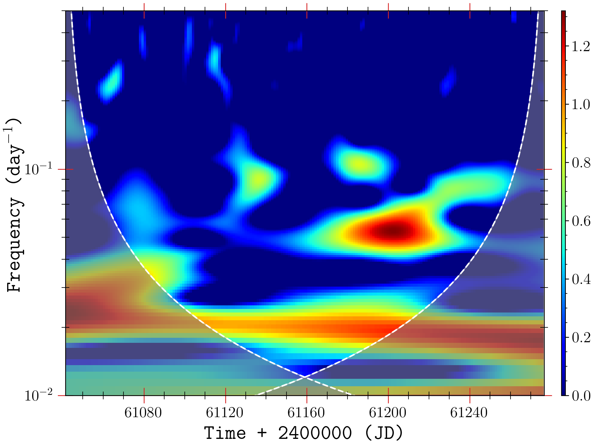
图注：完整伽马光变的WWZ时间频率图，功率使用对数色标。白色虚线附近的浅阴影表示边缘影响区域，其中的准周期特征不可靠；约0.1每天附近有三个局部功率增强。
对应解读：沿时间检查功率脊持续多久，再看是否处在边缘影响锥内；亮色只表示该方法的相对功率，不直接等于全局统计显著性。
入选理由：它展示准周期的短暂性并解释为何作者分段分析，同时提醒选段本身由数据决定，后续显著性需覆盖这一选择过程。
来源与置信度：arXiv HTML；source verified；https://arxiv.org/html/2609.21411v1/QPO_wwz_log.png
图3（原图第1面板）
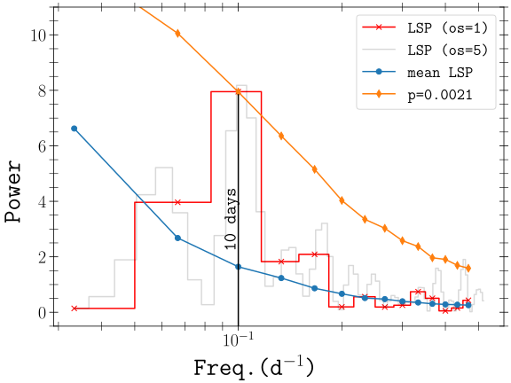
图注：两个耀发时段的Lomb–Scargle周期图。上图为MJD61167—61200，下图为MJD61205—61257去趋势后的光变；os表示频率网格过采样倍数。
对应解读：比较约9.8天与12.8天峰，但注意下图已经去趋势。更密网格让峰位置更细，并未增加独立周期数，也不能把两段检验视作同样的原始输入。
入选理由：此图是主要候选周期证据，需与噪声模拟、图5去趋势步骤和时段选择一起解读，避免把图上峰高直接转成无条件探测声明。
来源与置信度：arXiv HTML；source verified；https://arxiv.org/html/2609.21411v1/QPO_LSP_1.svg
图3（原图第2面板）
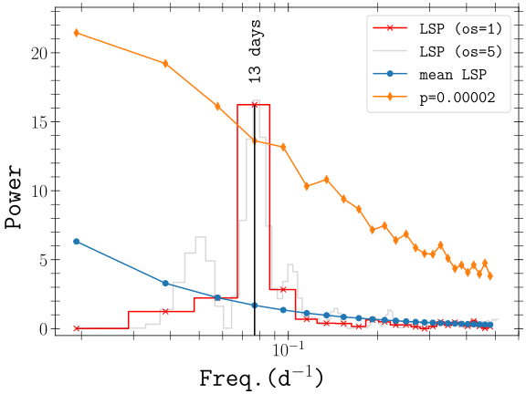
图注：两个耀发时段的Lomb–Scargle周期图。上图为MJD61167—61200，下图为MJD61205—61257去趋势后的光变；os表示频率网格过采样倍数。
对应解读：比较约9.8天与12.8天峰，但注意下图已经去趋势。更密网格让峰位置更细，并未增加独立周期数，也不能把两段检验视作同样的原始输入。
入选理由：此图是主要候选周期证据，需与噪声模拟、图5去趋势步骤和时段选择一起解读，避免把图上峰高直接转成无条件探测声明。
来源与置信度：arXiv HTML；source verified；https://arxiv.org/html/2609.21411v1/QPO_LSP_2.svg
强相关工作
本文接续耀变体短暂QPO与螺旋喷流、磁重联和扭曲不稳定性的研究，使用多种成熟时间序列工具寻找一致尺度。与多年稳定调制或双黑洞进动解释相比，短暂几循环更自然地指向喷流内部过程，但这种倾向不构成排他证明。后续可结合多波段偏振、VLBI新结与完整流程红噪声模拟，检验重复结构究竟来自几何调制还是粒子加速序列。
候选周期的独立后续复现也比追加同一数据的算法更有判别力。
同一事件 / 同类源线索：
相似工作：
（未提供）
基础理论 / 方法工作：
相反观点 / 张力线索：
（未提供）
15. Neutrino Emission from Proton Photon Jet Interactions in Microquasars
- 来源：arXiv / astro-ph.HE
- 链接：https://arxiv.org/abs/2609.21278v1
- 作者：Theodoros Smponias
- 评分：novelty 7/10，importance 7/10，relevance 9/10，final 8.70/10
- 推荐理由：微类星体pγ中微子模拟与多信使研究直接相关，需审查绝对归一化
中文题目：微类星体喷流的光强子中微子模拟：图像、归一化与可探测性边界
做了什么：研究把PLUTO相对论磁流体喷流与中微子发射和视线追踪连接，比较不同目标光子多普勒处理。采用喷流功率百分之一转成中微子的指定归一化、距离5kpc时，光强子分量仍低于示意IceCube灵敏度，尚非具体源的发现预测。
为什么重要：工作试图把时变喷流结构连接到多信使量，但其意义取决于分清流体自洽输出、后处理粒子处方与人为指定总功率。图像形态和探测器事件率是不同层次的结果。
理论 / 观测 / 仪器方法价值：适合用来学习流体到辐射的后处理流程，也适合检查能量阈值、参考系、谱归一化、味道与点源单位。论文没有计算pp通道或完整电磁级联，不能据此排除微类星体整体中微子贡献。
为什么应该关注：应重点核对目标光子谱及其能量边界、1%效率假设和低能形态图的含义。尤其不能把任意单位的GeV图像误写为IceCube已经可分辨的中微子源图。
展开详细解读：文章讲解、背景、理论、重点章节、图表与相关工作
文章详细讲解
科学问题
微类星体间歇喷流中的压缩、团块前缘和再准直区可能加速质子；质子遇到高能光子后产生介子，进而形成中微子。作者希望把这些局部发射区与三维时变喷流联系，而非只用一个均匀点区估算。
作者怎么做
PLUTO模拟速度0.8c的双向喷流及恒星风、盘风相互作用，nemiss对标记区域应用非热质子和光强子发射处方，rlos进行含束射与到达时差的视线成像。论文比较固定、逐网格和迎头近似的目标光子变换。
关键结果
合成图像在两侧喷流头显示亮区；谱在指定中微子效率1%、喷流功率2×10³⁸erg/s下归一化。按5kpc距离稀释后，探测器相关能段的模型低于近似IceCube参考，没有证明有利束射足以弥补全部差距。
局限和下一步
总中微子功率并非完全由RMHD自动预测，目标场从物理分解到实际幂律实现也需仔细核对。计算不含pp、独立缪子冷却输运及完整γγ级联，探测比较未折叠有效面积和背景；低能任意单位图仅作形态展示。
关键结果是怎么做出来的
先找流体结构。 间歇注入产生前缘压缩和环境相互作用区，这些网格被用作加速候选。流体密度亮区不自动等同中微子亮区，还需足够高能质子、合适目标光子和驻留时间。
再应用粒子处方。 质子谱、效率、最高能量与分区扩散由模型指定，磁场主要取RMHD但可加等分配下限。因此“用磁流体模拟”不意味着非热粒子分布已由第一性原理自洽求出。
核对谱的总能量。 论文附录按对数能量积分将谱归一到2×10³⁶erg/s。这是喷流功率乘假定1%效率，决定地球通量规模，不能把它当作由目标场独立计算验证的转换效率。
最后讨论探测。 将源谱除以4πd²可与同类单位的参考比较，但发现显著性还需源赤纬、味道、曝光、有效面积和背景。论文只支持该示例光强子分量较难探测，不能泛化为所有微类星体都不可探测。
展开背景、理论、公式、模型、章节和图表导读
背景知识
两种强子通道。 pp以物质质子为靶，pγ以光子为靶，它们的阈值和目标密度依赖不同。稠密恒星风可能有强pp贡献，但本文只做pγ后处理，不能把未纳入部分默认为零。
流体与非热粒子。 RMHD追踪宏观密度、速度、压强和磁场，不能直接解析冲击加速产生的稀少高能尾。必须额外规定注入比例、谱形、加速与逃逸时间，并核查能量预算。
介子链。 光强子反应的带电介子衰变产生中微子和缪子，后者进一步衰变。强磁场下次级粒子可能先冷却再衰变，因此高能谱和味道比不只由初始质子谱决定。
源图与事件图。 理论表面亮度图用视线积分显示哪里发射强；望远镜事件图还受角分辨率、有效面积和背景影响。本文网格尺度的亮区不能直接对应实际中微子望远镜能分辨的双喷流。
基础理论 / 方法脉络
加速上限。 第一阶Fermi处方中加速时间随能量增加、随磁场增强而缩短。最大能量还需满足尺寸约束、驻留和损失条件，指定PeV截止只是物理启发输入，不等于所有网格都达到该能量。
阈值与目标谱。 光子在质子静止系必须足够高能才能产生介子，故给定质子能量所需目标光子能量可被直接估算。尤其低能中微子形态图要核查其目标高能光子支持，不能仅凭数值图存在就证明常见恒星光场可产生它。
参考系变换。 入射光子从外部进入运动团块与团块向观察者发射是不同的变换。局部速度方向决定能量、角分布与密度，简单统一多普勒因子可能抹去网格间差异。
距离与归一化。 在固定视角和谱形下，地球通量按距离平方倒数变化。改变效率、目标密度或高能截止通常不仅改总幅度，也可能改谱形，所以距离尺度公式不能代替物理参数扫描。
公式与推导
下面给出检查这类后处理的关键关系，其中阈值与事件率为标准教学关系；不对原文个别简化核公式照抄，以免混淆积分变量或参考系。
加速与逃逸需要比较：
六的系数对应理想三维各向同性扩散，实际喷流边界和各向异性会改变它。
光强子阈值由不变量给出：
必须在同一参考系代入能量和碰撞角；这能检验所选质子与目标光子是否真能产生介子。
源谱功率定义为：
原文采用η_ν=0.01与L_k=2×10³⁸erg/s，故积分为2×10³⁶erg/s；它是指定归一化条件。
距离转换为：
若谱已有方向束射处理，要说明这是相应等效方向光度还是角积分光度，避免额外重复乘多普勒增强。
灵敏度交点的示意距离为：
只有谱定义、味道、单位、曝光和源类型一致时比较才有意义，弥散每立体角强度不能直接当点源阈值。
实际事件期望应进一步计算：
还要加入背景和事件质量分布才能作发现检验；原文没有执行这一步，因此不能从图5读取可靠的探测σ值。
模型拟合 / 应用方法
数值设置。 网格60×100×50，单格2×10¹⁰cm，运行204s，喷流注入速度0.8c、初始环向磁场10⁴G。模型是无引力势的狭义相对论MHD内喷流区域，不是完整吸积发动机或大尺度射电尾。
非热设置。 质子指数约2、最高能量10⁶GeV；压缩与压力梯度标记加速区，不同区采用近Bohm或更弱能量依赖的扩散。磁场下限与目标光子分量属于后处理假设，应在复现时明确开关和系数。
情景比较。 固定多普勒、逐网格多普勒和迎头近似用于比较目标场处理；仅60格的第四条曲线是数值基准子集，不能当作第四种独立天体物理机制或全域同等分辨率结果。
验证缺口。 尚无完整源特定联合拟合、参数后验或探测器响应分析。下一步应检查光子能量边界与阈值、逐格能量守恒、网格和时间收敛，以及缪子冷却、pp和电磁级联对结论的改变。
重点章节 / 结果段落怎么读
第2节列出加速分区、扩散、磁场下限和非热质子；第3.3节说明实际谱计算的目标光子幂律与多普勒情景，第5节给出网格及尺度。图3明确是约1.1GeV、任意单位的形态示意，图4和附录C定义总功率归一化，图5只作近似灵敏度比较。第6.4节的伽马对应体为产生时的估算，没有吸收级联，因此不能当作最终逃逸谱与观测直接拟合。
附录B明确指出探测器背景与选择尚未完整模拟。
建议重点查看的图表
图2： 先看两侧前缘压缩与周围风的接触，再区分数密度色标和辐射亮度。这里是宏观流体状态，尚没有自动显示光强子转换效率。 它提供后处理加速区的空间背景，并提醒研究范围只覆盖内喷流小尺度；不能将图中边界附近结构直接外推到长期稳定喷流。
图5： 先核对能量范围与纵轴谱能量通量，再比较参考；距离、效率和谱形改变都会移动曲线。该参考不是为此源重新计算的发现阈值。 这是论文可探测性结论的实际依据，支持“该示例较难探测”，但不包含源赤纬、有效面积、味道与背景的完整事件级分析。
关键图表逐图导读
图2： 先看两侧前缘压缩与周围风的接触，再区分数密度色标和辐射亮度。这里是宏观流体状态，尚没有自动显示光强子转换效率。 它提供后处理加速区的空间背景，并提醒研究范围只覆盖内喷流小尺度；不能将图中边界附近结构直接外推到长期稳定喷流。
图5： 先核对能量范围与纵轴谱能量通量，再比较参考；距离、效率和谱形改变都会移动曲线。该参考不是为此源重新计算的发现阈值。 这是论文可探测性结论的实际依据，支持“该示例较难探测”，但不包含源赤纬、有效面积、味道与背景的完整事件级分析。
论文原图 / 可嵌入图片
图2
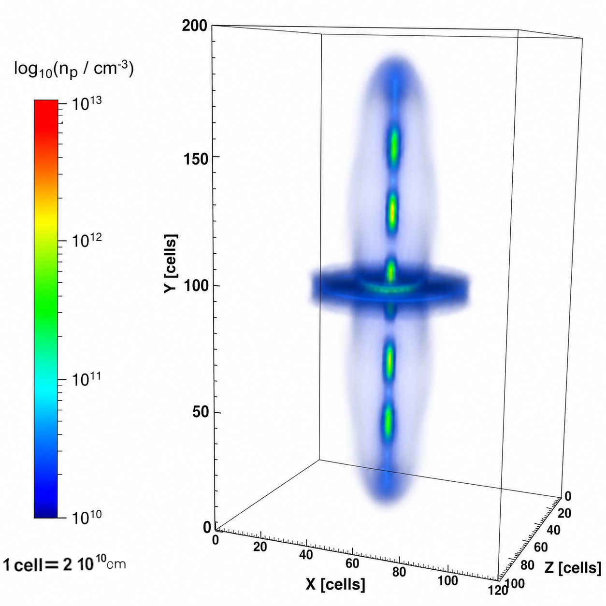
图注：模型时间50s时PLUTO双喷流的三维体密度。色标为质子数密度的对数，坐标单位为网格长度，每格2×10¹⁰cm；间歇团块推进并排开恒星风与盘风，喷流头已接近计算域边界。
对应解读：先看两侧前缘压缩与周围风的接触，再区分数密度色标和辐射亮度。这里是宏观流体状态，尚没有自动显示光强子转换效率。
入选理由：它提供后处理加速区的空间背景，并提醒研究范围只覆盖内喷流小尺度；不能将图中边界附近结构直接外推到长期稳定喷流。
来源与置信度：arXiv HTML；source verified；https://arxiv.org/html/2609.21278v1/PLUTO_case_d_instruments_e.png
图5
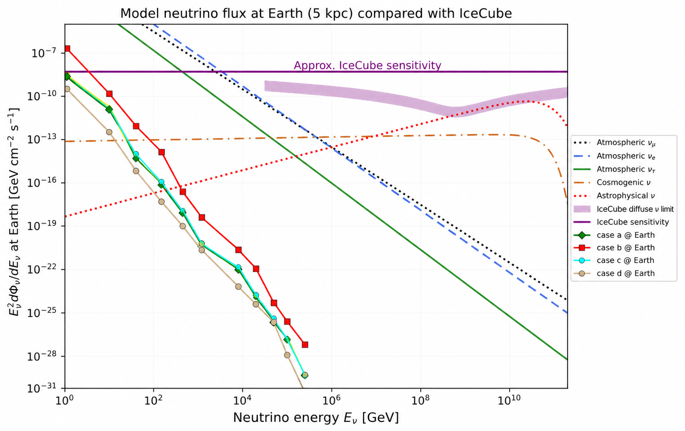
图注：将光强子中微子源谱按距离5kpc除以4πd²后，与近似IceCube灵敏度参考比较。在所采用1%中微子效率归一化下，探测器相关能段的模型仍低于参考线。
对应解读：先核对能量范围与纵轴谱能量通量，再比较参考；距离、效率和谱形改变都会移动曲线。该参考不是为此源重新计算的发现阈值。
入选理由：这是论文可探测性结论的实际依据，支持“该示例较难探测”，但不包含源赤纬、有效面积、味道与背景的完整事件级分析。
来源与置信度：arXiv HTML；source verified；https://arxiv.org/html/2609.21278v1/fig_spectra_comp_110726.png
强相关工作
论文连接PLUTO宏观喷流、已有强子介子产额与作者的视线成像流程。早期SS433及稠密风模型常以pp为主，不能仅按两张图的通量高低判断哪个更准确，因为通道、目标、距离和功率不同。它的贡献主要是时变结构到辐射后处理的组织；1%效率和近似灵敏度意味着当前可探测性只是条件性示例，后续需要真实源参数与探测器模拟才能进入定量预测。
同一事件 / 同类源线索：
相似工作：
（未提供）
基础理论 / 方法工作：
相反观点 / 张力线索：
（未提供）
16. A Gamma-ray Emitting Head-Tail Radio Galaxy Swimming Through the Hot Medium of the Merging Cluster Abell 3627
- 来源：arXiv / astro-ph.HE
- 链接：https://arxiv.org/abs/2609.21343v1
- 作者：Vaidehi S. Paliya, M. Böttcher, Swayamtrupta Panda, Kiran Wani, D. J. Saikia, Mahadev Pandge, C. S. Stalin
- 评分：novelty 8/10，importance 7/10，relevance 8/10，final 8.65/10
- 推荐理由：头尾射电星系伽马关联稀少，但辐射起源仍需更深观测
中文题目：五百千秒差距射电尾的高能对应体：ESO0137−G007与费米源的关联
做了什么：作者将长尾射电星系ESO0137−G007与FL16YJ1615.5−6034关联，在指定先验和候选密度下得到89.3%概率。光谱显示老恒星主导，伽马辐射可用弱束射的紧致SSC区域示意解释，但发射位置与机制尚未唯一确定。
为什么重要：头尾射电星系常以大视角被观察，伽马检出稀少，能够研究弱束射喷流与星系团介质。这个系统超过500kpc的扭曲尾和软伽马谱为连接核心活动与环境作用提供新对象。
理论 / 观测 / 仪器方法价值：论文将位置关联、竞争候选、宿主光谱和能谱可行性分开处理。尤其值得学习多波段背景密度的联合计算，以免把同一个伽马定位信息重复相乘而夸大关联概率。
为什么应该关注：需要区分费米源本身的约5σ检出与特定宿主的89.3%关联，也要区分超过500kpc射电尾和约10¹⁵cm的示例伽马区。LAT尚未直接解析这段长尾的高能辐射。
展开详细解读：文章讲解、背景、理论、重点章节、图表与相关工作
文章详细讲解
科学问题
ESO0137−G007在并合星系团Abell3627内运动，气体冲压与湍流塑造长而弯曲的射电尾。附近无已知对应体的费米源定位随数据增加而改善，作者检验该星系是否最可能提供伽马辐射。
作者怎么做
研究把ASKAP、低频射电和X射线源与费米误差椭圆比较，计算同时满足射电和X射线亮度的背景源密度，并在多个互斥候选及无对应体假设之间分配后验概率。另用SOAR光谱测恒星弥散，再探索弱束射SSC能谱。
关键结果
星系的关联概率为89.3%，明显高于其他候选；费米16年源表的源检出约5.16σ，谱指数2.58±0.14。恒星弥散429.4±14.8km/s通过经验关系给黑洞质量约33.6亿太阳质量，SSC示例需要很紧致的发射区。
局限和下一步
关联不是绝对确定，结果依赖候选完整性、背景密度与先验。黑洞质量是标度关系推断，非直接动力学称量；红外至紫外被宿主淹没，能谱模型非统计约束拟合，80度视角亦为假设，不能据此确立伽马来自整个长尾。
关键结果是怎么做出来的
先检查空间候选。 最新误差椭圆包含头尾星系，其他X射线点源缺少射电对应且可能为恒星，另一个射电源更弱且无X射线检出。多波段稀有性使该星系比仅有位置相近的候选更有说服力。
再读概率。 作者在共同先验Q=0.05下得到89.3%，还保留约8.13%的无对应体概率。源的5.16σ检出说明有伽马光子过量，不能直接替代宿主关联概率。
判断束射强弱。 射电核心占优程度约0.05且谱陡，WISE颜色也不像典型耀变体，支持不依赖强束射的解释。但当前核心混有延展发射，精确视角仍需要高分辨率运动学。
探索而非锁定SSC。 在近静止区域中，同一批电子产生同步光子并逆康普顿散射它们，可给出示例SED；缺少可靠同步峰使尺寸、磁场和电子参数简并，因此这只证明一种可行性。
展开背景、理论、公式、模型、章节和图表导读
背景知识
头尾形态。 星系在稠密星系团介质中运动时，喷流受冲压和剪切弯曲，形成明亮头部与延伸尾巴。射电尾记录环境和粒子历史，但其形态不自动定位最高能辐射的位置。
弱束射AGN。 耀变体朝向观察者，强多普勒增强有利于伽马检出；大视角射电星系通常更暗。少数检出对象因此可以检验不依赖强束射的加速与辐射过程。
SSC机制。 同步自康普顿指电子散射自己产生的同步光子，目标密度取决于亮度和区域大小。若没有强外部光场，紧致区能提高内部光子密度，但尺寸不能仅由一个未约束同步峰精确确定。
宿主光谱。 无明显发射线而老恒星吸收占主导，支持低辐射效率活动的图景，但不是对所有吸积成分的严格零检出。利用恒星弥散估质量还需包含经验关系散布和高质量端适用性。
基础理论 / 方法脉络
关联似然比。 真对应体倾向落在定位概率高的区域，罕见且明亮的多波段源也较少随机出现。位置概率密度除以背景源面密度提供一个可比较的比值，而不是最终概率本身。
候选竞争。 同一个伽马源只能归给一个候选时，各候选不能分别独立计算接近一的后验。必须共同归一并保留没有已知对应体的选项，尤其在低先验概率时差别很大。
同步与逆康普顿峰。 Thomson近似下两个峰的频率比约给电子洛伦兹因子平方，峰的亮度比约给光子与磁能密度比。真实谱核、Klein–Nishina效应和多区域会改变这些简化关系。
尺度约束。 固定同步光度时区域越小，内部光子密度越高，SSC越容易强。但本文同步峰被恒星光遮盖，因此反推出的极小尺寸带有强模型条件，必须以多波段高分辨率数据验证。
公式与推导
下面串起关联统计与SSC可行性估算。统计部分遵循论文的互斥候选定义；辐射部分为标准单区Thomson近似，用来解释参数之间的联系。
候选k的似然比为：
f是伽马定位概率面密度，ρ是达到相应射电和X射线阈值的背景联合面密度，二者单位相同。
共同先验Q下的后验为：
位置项只计算一次，不能对两波段重复相乘；改变Q或加入新候选都会改变89.3%的数值。
同步与SSC特征频率满足：
这里省略接近一的束射与红移因子，仅作尺度估算，不能替代完整辐射代码。
光度比在简单条件下为：
该关系依赖同一电子群且散射处在Thomson范围，外部光场或多区结构会改变它。
内部同步光子密度约为：
因此R越小，SSC相对越强；本文约10¹⁵cm和约2G只是给定峰位下的示例估算。
稳态电子分布由注入、损失和逃逸竞争：
采用这种平衡可生成SED，但观测缺少同步峰时，多组参数可能同样合理，不能从一条吻合曲线宣布机制已唯一确定。
模型拟合 / 应用方法
位置统计。 采用最新费米椭圆与RACS、eROSITA局部源密度，在0.1到2度环带估计背景，并以3角秒作射电X射线交叉匹配。星系联合似然比约208.7，再与竞争候选和无对应体项共同归一。
光谱推断。 SOAR三次600s曝光经恒星模板拟合提取速度弥散，再使用经验黑洞质量关系。高质量端的关系散布与可能弯折应纳入解释；这篇的33.6亿质量不等同JWST空间分辨动力学直接测量。
SED示例。 单区模型设整体洛伦兹因子1.1、视角80度，使束射接近可忽略；连续注入电子在同步、SSC冷却和逃逸中达到稳态。原文明确该视角非观测确定，参数也不是充分数据约束的统计最优解。
替代机制。 仅用已知宿主星光的无束射外康普顿估算难同时满足峰频与磁场，但这不排除未约束外场、延展逆康普顿或强子成分。应以更深伽马数据和VLBI核心结构进一步区分发射位置。
重点章节 / 结果段落怎么读
第II节给出竞争候选、联合背景密度与共同先验后验，是判断关联稳健性的关键；图1同时展示环境、定位和长尾。第III节的黑洞质量来自光谱弥散标度关系。第IV.1节在介绍SSC前明确同步峰欠约束，并声明80度为假设、SED为示例。图2左侧是真实光谱拟合，右侧是模型可行性展示，两者的统计含义不同，不应以同样措辞称为精确参数测量。
建议重点查看的图表
图1： 先看最新蓝色椭圆包含哪些候选，再看星系头部与长尾在团气体中的位置；射电形态跨越很大尺度，但伽马定位没有直接分辨沿尾各段。 它同时支撑候选关联和环境相互作用背景，也清楚显示定位仍有有限面积，所以不能只因长尾醒目便宣称整条尾就是伽马发射区。
图2： 左右两图分开解读：左边检验恒星光谱拟合，右边检验一组辐射参数是否可行。右图吻合不能证明80度视角或紧致区域大小已被唯一测量。 这张图把中心质量的经验推断与伽马机制的模型解释放在一起，适合提醒两类结果依赖不同假设、具有不同证据强度。
关键图表逐图导读
图1： 先看最新蓝色椭圆包含哪些候选，再看星系头部与长尾在团气体中的位置；射电形态跨越很大尺度，但伽马定位没有直接分辨沿尾各段。 它同时支撑候选关联和环境相互作用背景，也清楚显示定位仍有有限面积，所以不能只因长尾醒目便宣称整条尾就是伽马发射区。
图2： 左右两图分开解读：左边检验恒星光谱拟合，右边检验一组辐射参数是否可行。右图吻合不能证明80度视角或紧致区域大小已被唯一测量。 这张图把中心质量的经验推断与伽马机制的模型解释放在一起，适合提醒两类结果依赖不同假设、具有不同证据强度。
论文原图 / 可嵌入图片
图1（原图第1面板）
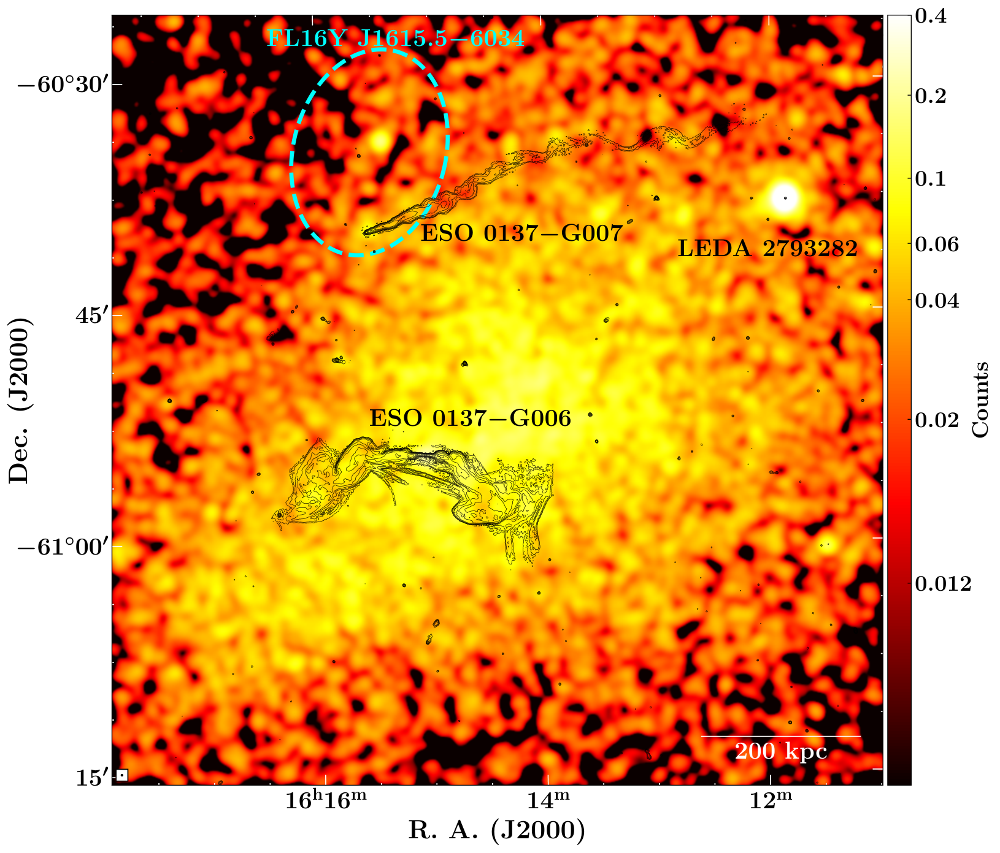
图注：Abell3627环境与ESO0137−G007的多波段定位。左上为平滑eROSITA软X射线图叠加ASKAP射电轮廓；右上为943MHz射电图及旧、新费米95%定位椭圆和X射线候选；下图叠加GLEAM低频轮廓，显示延伸射电尾。
对应解读：先看最新蓝色椭圆包含哪些候选，再看星系头部与长尾在团气体中的位置；射电形态跨越很大尺度，但伽马定位没有直接分辨沿尾各段。
入选理由：它同时支撑候选关联和环境相互作用背景，也清楚显示定位仍有有限面积，所以不能只因长尾醒目便宣称整条尾就是伽马发射区。
来源与置信度：arXiv HTML；source verified；https://arxiv.org/html/2609.21343v1/XRAY.png
图1（原图第2面板）
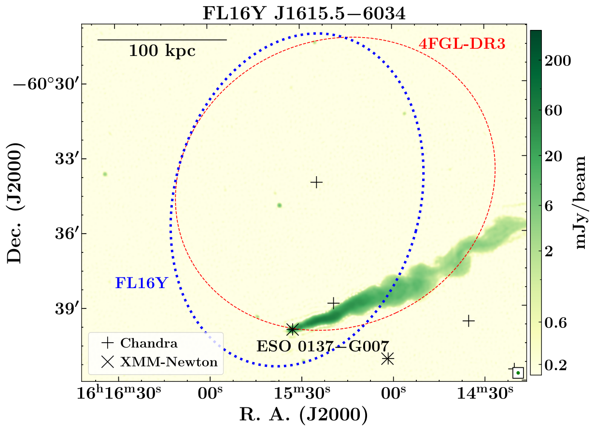
图注：Abell3627环境与ESO0137−G007的多波段定位。左上为平滑eROSITA软X射线图叠加ASKAP射电轮廓；右上为943MHz射电图及旧、新费米95%定位椭圆和X射线候选；下图叠加GLEAM低频轮廓，显示延伸射电尾。
对应解读：先看最新蓝色椭圆包含哪些候选，再看星系头部与长尾在团气体中的位置；射电形态跨越很大尺度，但伽马定位没有直接分辨沿尾各段。
入选理由：它同时支撑候选关联和环境相互作用背景，也清楚显示定位仍有有限面积，所以不能只因长尾醒目便宣称整条尾就是伽马发射区。
来源与置信度：arXiv HTML；source verified；https://arxiv.org/html/2609.21343v1/Fig_1.png
图1（原图第3面板）
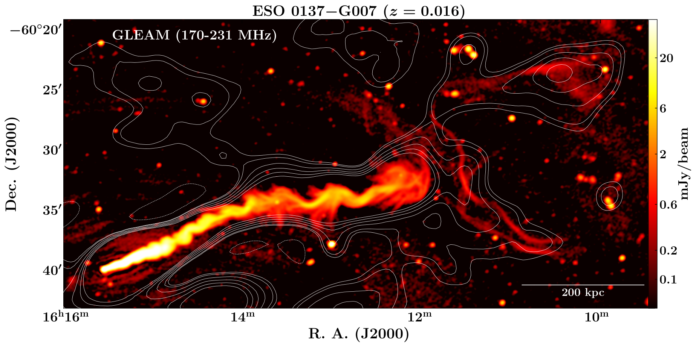
图注：Abell3627环境与ESO0137−G007的多波段定位。左上为平滑eROSITA软X射线图叠加ASKAP射电轮廓；右上为943MHz射电图及旧、新费米95%定位椭圆和X射线候选；下图叠加GLEAM低频轮廓，显示延伸射电尾。
对应解读：先看最新蓝色椭圆包含哪些候选，再看星系头部与长尾在团气体中的位置；射电形态跨越很大尺度，但伽马定位没有直接分辨沿尾各段。
入选理由：它同时支撑候选关联和环境相互作用背景，也清楚显示定位仍有有限面积，所以不能只因长尾醒目便宣称整条尾就是伽马发射区。
来源与置信度：arXiv HTML；source verified；https://arxiv.org/html/2609.21343v1/Fig_2.png
图2（原图第1面板）

图注：左图为SOAR光学谱及红色恒星族模型，吸收特征用于测恒星速度弥散；右图为宽带SED及弱束射单区同步—SSC示例。红外到紫外主要由宿主星系贡献，同步峰约束有限。
对应解读：左右两图分开解读：左边检验恒星光谱拟合，右边检验一组辐射参数是否可行。右图吻合不能证明80度视角或紧致区域大小已被唯一测量。
入选理由：这张图把中心质量的经验推断与伽马机制的模型解释放在一起，适合提醒两类结果依赖不同假设、具有不同证据强度。
来源与置信度：arXiv HTML；source verified；https://arxiv.org/html/2609.21343v1/SVD.svg
图2（原图第2面板）
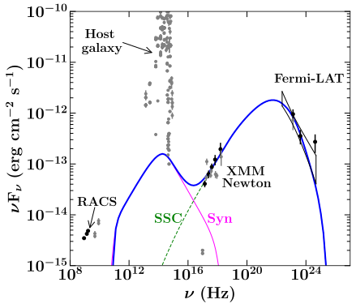
图注：左图为SOAR光学谱及红色恒星族模型，吸收特征用于测恒星速度弥散；右图为宽带SED及弱束射单区同步—SSC示例。红外到紫外主要由宿主星系贡献，同步峰约束有限。
对应解读：左右两图分开解读：左边检验恒星光谱拟合，右边检验一组辐射参数是否可行。右图吻合不能证明80度视角或紧致区域大小已被唯一测量。
入选理由：这张图把中心质量的经验推断与伽马机制的模型解释放在一起，适合提醒两类结果依赖不同假设、具有不同证据强度。
来源与置信度：arXiv HTML；source verified；https://arxiv.org/html/2609.21343v1/MW_SED.svg
强相关工作
论文与IC310等少数伽马头尾源比较，但ESO0137−G007的核心占优和束射证据更弱，不能照搬耀变体模型参数。星系团风与喷流作用的模拟说明延展尾可能很暗，SSC提供一个紧致区候选解释；其他错位AGN的CMB逆康普顿与强子成分仍是相关替代思路。今天另一篇超大质量星系研究也提醒高端质量—弥散关系可能偏离，适合联合审视这里的经验质量估计。
同一事件 / 同类源线索：
相似工作：
（未提供）
基础理论 / 方法工作：
相反观点 / 张力线索：
（未提供）
相关但非 HE 的重要论文
1. Stochastic black hole growth tracks stellar mass in ultramassive galaxies
- 来源：arXiv / astro-ph.GA
- 链接：https://arxiv.org/abs/2609.21981v1
- 作者：Michele Cappellari, Dieu D. Nguyen, Susan A. Kassin
- 评分：novelty 9/10，importance 9/10，relevance 9/10，final 9.00/10
- 推荐理由：JWST超大质量黑洞与缺失中心质量的对比约束黑洞宿主演化
中文题目：JWST称量八个超大质量星系：黑洞质量更随恒星质量增长
做了什么：JWST对八个超大质量早型星系的恒星动力学研究显示，七例黑洞质量高于通常质量—速度弥散关系的外推，多数超过百亿太阳质量；另一例只得到上限。高质量端与总恒星质量的关系更紧，支持干并合增长图景。
为什么重要：反复无气体并合可增加星系质量和半径，却不同比例增加速度弥散。这使通常很有效的黑洞质量—弥散关系在极高质量端失效，影响对最重黑洞数量和增长历史的推断。
理论 / 观测 / 仪器方法价值：研究把中心二维运动学与整体标度关系联系起来，并展示一个中心速度二阶矩下降的特殊对象。后者提示增长并非完全整齐，但只能说明中心质量受限，不能证明黑洞被弹出。
为什么应该关注：重点应看空间分辨率、速度各向异性和星系几何怎样影响动力学质量，以及未检出对象的上限。论文部分技术细节转引配套文章，复现时需要这些材料与最终公开数据。
展开详细解读：文章讲解、背景、理论、重点章节、图表与相关工作
文章详细讲解
科学问题
在普通星系中，黑洞质量通常与恒星速度弥散相关，但超大质量星系可能主要通过干并合增长。如果恒星质量和半径一起增加，速度弥散变化较小，而黑洞质量继续累积，原关系就可能在高质量端弯折。
作者怎么做
作者结合JWST/NIRCam与地面宽场成像构建多高斯光度模型，以NIRSpec积分视场光谱提取恒星运动学，再通过JAM动力学模型推断中心质量。随后与经过质量筛选的历史动力学黑洞样本比较，并按物理星系合并重复测量。
关键结果
七例在质量—弥散图上系统偏高，四例偏离约三个内禀散布尺度，多数质量超过百亿太阳质量。高恒星质量段的质量关系散布约0.35dex；第八例中心二阶矩下降，数据不要求一个很大的中心黑洞。
局限和下一步
第八例不是确认没有黑洞，也不是直接发现被踢出的黑洞。反冲和三体弹射只是可能解释。样本仅八例且非体积完备，动力学几何、质量光度比和比较样本选择仍需系统核验；本文没有完整重印配套质量拟合细节。
关键结果是怎么做出来的
先看直接数据。 大多数对象中心速度二阶矩升高，而特殊对象下降，这一差异在拟合前已经可见。它支持真实动力学多样性，但从二阶矩形状到黑洞质量仍需模型处理各向异性与投影。
再比较两条关系。 同一批对象在黑洞质量—弥散图上偏高，却沿高质量端的黑洞—恒星质量序列分布。这个相对比较比单独宣布某颗黑洞很重更直接支持增长通道改变。
解释干并合轨迹。 无耗散并合使质量和尺度一起增长，弥散可近似不变；若黑洞最终合并，它们的质量则继续相加。由此可以在近固定弥散处向上移动，但并非每次真实并合都严格同样。
保留随机性的边界。 只有上限的对象说明并非所有巨大星系都必须有巨大中心质量。反冲、三体作用或其他动力学历史都可能参与，当前观测尚不能在它们之间确定唯一原因。
展开背景、理论、公式、模型、章节和图表导读
背景知识
动力学称量。 恒星在总引力势中运动，中心暗质量会改变速度分布。可测量的是投影光谱，而黑洞、恒星质量和各向异性共同影响它，因此空间分辨的二维数据比单一线宽更有信息。
影响半径。 黑洞引力与背景恒星运动相当的尺度约随黑洞质量增加、随弥散平方减小。要可靠分离中心点质量，仪器角分辨率与距离必须足以解析相关区域，低表面亮度也限制信噪比。
干并合。 气体贫乏的并合缺少强耗散形成紧致新恒星，常使星系外包层和半径增长。维里关系因此允许总质量显著增加而特征弥散较少变化，为标度关系弯折提供物理依据。
中心与全星系。 动力学上限针对光学中心附近的暗质量，不等于整个星系任何位置都没有黑洞。被位移到远离中心的对象和一个较小的中心黑洞都可能不留下所预期的巨大中央峰。
基础理论 / 方法脉络
Jeans建模。 速度分布的低阶矩满足由引力势决定的Jeans方程，但方程需要几何和各向异性闭合。JAM把观测光度与这些假设联系起来，再投影和卷积到实际仪器分辨率。
多高斯展开。 将表面亮度表示为若干椭圆高斯，有利于解析积分和反投影。宽场成像约束外包层，JWST约束中心，二者共同决定恒星引力背景，不能只拟合最中心几个像素。
二阶矩的用途。 均方根速度同时包含有序旋转与随机弥散，比单看弥散更适合直接对应动力学二阶矩。中心峰的幅度与形状还受点扩散函数和恒星轨道分布影响。
总体回归。 标度关系的内禀散布表示测量误差之外的族群宽度。不同论文对同一星系的多次测量不能当成独立星系，异常值剪裁和样本质量筛选也会影响拟合斜率及散布。
公式与推导
以下给出理解测量与干并合解释的基础关系。它们是教学推导，不替代配套JAM论文的完整投影、几何边缘化和仪器卷积实现。
黑洞影响尺度可估计为：
D为距离；是否足够分辨必须与真实点扩散函数和信噪比同时比较。
观测二阶矩定义为：
旋转V与随机速度弥散σ共同贡献，若只看其中一项，可能把动力学结构变化误当成中心质量变化。
以球对称为例，Jeans方程为：
这里ν是示踪恒星密度、β为各向异性；实际JAM处理更一般几何，这个式子只展示质量与轨道分布的简并来源。
模型质量分解可示意为：
中心暗物质预期较小，并不自动消除质量光度比梯度或全星系总质量的不确定性。
干并合的维里尺度为：
当M和R近同比增长时，σ变化小；若中心黑洞相继并合，黑洞质量仍增加，由此偏离低质量端外推关系。
标度关系可在对数空间表示：
比较X取恒星质量或弥散时，要统一样本和测量误差；上限对象不能像确定检测一样代入普通回归，其存在也不能证明质量严格为零。
模型拟合 / 应用方法
观测到模型。 成像经MGE连接中心与外包层，NIRSpec光谱经pPXF提取运动学。本文说明配套研究比较扁球与长球几何并边缘化各向异性；这里不把未在本文列出的各目标后验数值自行补出。
整体量。 有效弥散由视场内合并光谱测得，再用经验孔径修正到一个有效半径；恒星质量由MGE总光度乘动力学质量光度比得到。孔径修正、外包层和质量光度比假设都会进入关系比较。
比较样本。 作者汇编空间分辨动力学测量，保留测量层面的来源记录，但统计时按星系汇总，重复测量采用代表中位数。部分既有超重黑洞报告因数据质量争议未纳入，这是结果解读所需的样本选择信息。
回归与限制。 使用含内禀散布的稳健线性拟合和2.6σ剪裁，比较高质量段与全样本。要独立评估“更好预测量”结论，应复查样本截断、相关误差和上限处理，并等待配套数据完整公开。
重点章节 / 结果段落怎么读
正文先以图1比较两条标度关系，再以图3展示八个对象的数据、模型与残差；Methods说明观测和详细动力学部分转引两篇配套论文。Compilation部分说明如何避免同一星系重复计数，Scaling Relations Analysis说明稳健剪裁。关于被排除历史测量的争议应作为作者评估而非独立定论。Data Availability表示完整产品将在发表时公开，当前复现条件尚有限。
建议重点查看的图表
图1： 比较同一批金色对象在两张图中的偏离程度，特别注意向下三角只限定上界；三倍内禀散布的偏移并不等于单个质量测量的三σ检出。 这张图直接呈现弥散预测失效与恒星质量关系更紧的相对证据，也保留特殊对象的上限，避免把八例都写成确定超重黑洞。
图3： 先比较各对象中心是峰还是下降，再看模型能否重现二维结构；残差用各自测量误差归一，不能把颜色直接看作相同的绝对速度差。 它显示特殊对象的运动学差异在拟合前已存在，但质量解释仍依赖投影、各向异性和仪器卷积，图像本身不能证明黑洞已被弹出。
关键图表逐图导读
图1： 比较同一批金色对象在两张图中的偏离程度，特别注意向下三角只限定上界；三倍内禀散布的偏移并不等于单个质量测量的三σ检出。 这张图直接呈现弥散预测失效与恒星质量关系更紧的相对证据，也保留特殊对象的上限，避免把八例都写成确定超重黑洞。
图3： 先比较各对象中心是峰还是下降，再看模型能否重现二维结构；残差用各自测量误差归一，不能把颜色直接看作相同的绝对速度差。 它显示特殊对象的运动学差异在拟合前已存在，但质量解释仍依赖投影、各向异性和仪器卷积，图像本身不能证明黑洞已被弹出。
论文原图 / 可嵌入图片
图1
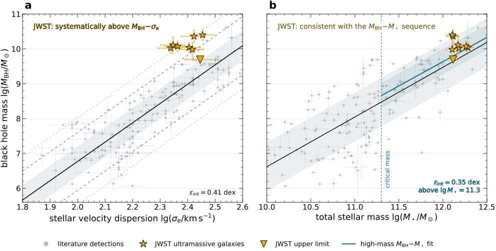
图注：超大质量星系在黑洞质量标度关系中的位置。左图横轴为有效速度弥散，右图为总恒星质量；金色星号为JWST检测，向下三角为质量上限。灰色样本和区间表示历史关系，右图青色线展示高恒星质量段拟合。
对应解读：比较同一批金色对象在两张图中的偏离程度，特别注意向下三角只限定上界；三倍内禀散布的偏移并不等于单个质量测量的三σ检出。
入选理由：这张图直接呈现弥散预测失效与恒星质量关系更紧的相对证据，也保留特殊对象的上限，避免把八例都写成确定超重黑洞。
来源与置信度：arXiv HTML；source verified；https://arxiv.org/html/2609.21981v1/plot_new_bh_relations_master.svg
图3
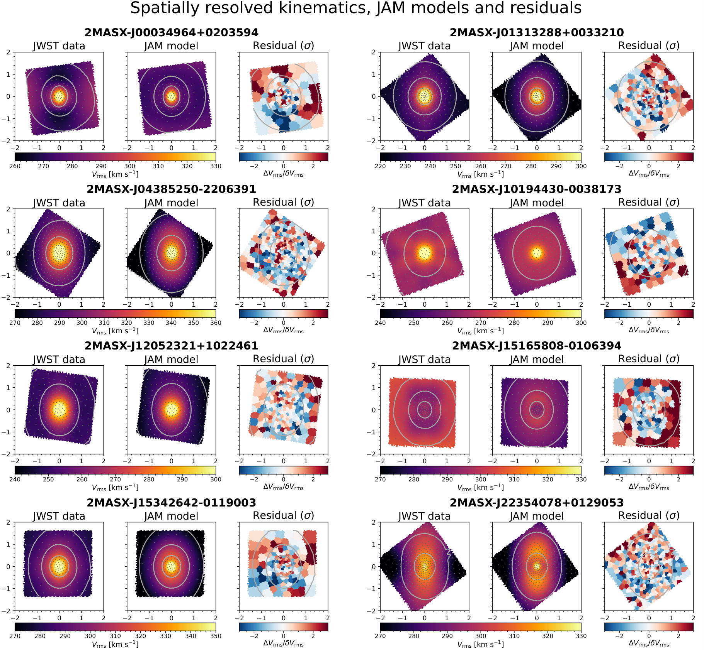
图注：八个星系的二维恒星均方根速度、JAM模型与归一化残差。每组依次为对称化显示的数据、长球几何示例模型和原始分箱上的残差；灰线为等亮度轮廓，速度单位为km/s。
对应解读：先比较各对象中心是峰还是下降，再看模型能否重现二维结构；残差用各自测量误差归一，不能把颜色直接看作相同的绝对速度差。
入选理由：它显示特殊对象的运动学差异在拟合前已存在，但质量解释仍依赖投影、各向异性和仪器卷积，图像本身不能证明黑洞已被弹出。
来源与置信度：arXiv HTML；source verified；https://arxiv.org/html/2609.21981v1/jam_kinematic_maps_summary_prolate_sph_bosz_r1e4.png
强相关工作
研究连接黑洞—宿主经验关系、干并合维里预测和中心核挖空的理论背景。它支持高质量端恒星质量成为更有效预测量的方向，同时提出反冲与三体作用解释异常中心。那些机制此前已有理论基础，本文没有直接测得反冲速度或弹射轨道；更大、体积完备的JWST样本才有望测出异常对象比例，并检验它们是否真由相同机制产生。
中心非检出与全星系黑洞占有率也应分别定义和检验。
同一事件 / 同类源线索：
相似工作：
（未提供）
基础理论 / 方法工作：
相反观点 / 张力线索：
（未提供）
说明
评分由 LLM 给出初评，再由本地阈值策略过滤；IACT、TeV 伽马射线和高能中微子天文学按重点方向处理。